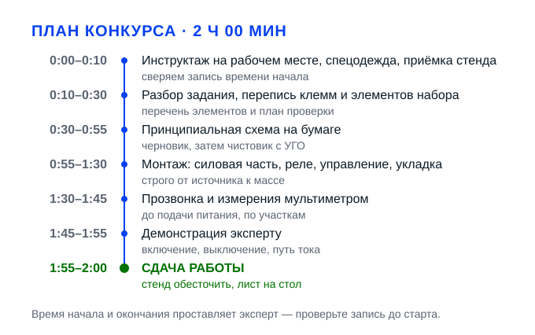
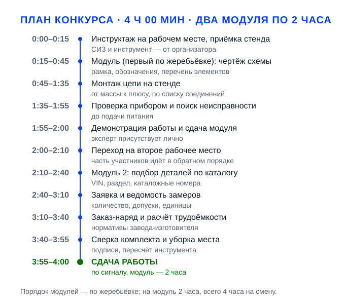
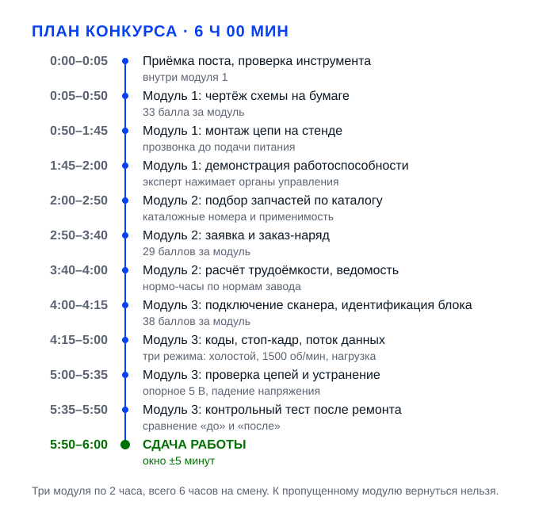

Обслуживание грузовой техники (Р)
Задания ниже — официальные файлы «Абилимпикс» (источник: abilympics-russia.ru), разложенные по категориям. Решения написаны по тексту задания, регламенту и критериям оценки; в них указано, что именно проверяет эксперт.
Школьник
14–16 лет, базовый уровень заданияВыдержка из официального конкурсного задания: страницы, относящиеся к категории «Школьник» (стр. 4–7 источника).
Пошаговое решение
Задание для школьников одно, но плотное: за два часа нужно начертить на бумажном носителе принципиальную электрическую схему с условными графическими обозначениями элементов и связей, а потом смонтировать её на стенде и показать эксперту, что она работает. Оценивается всё задание целиком в 100 баллов, критерий измеримый, субъективных оценок нет: эксперт сверяет схему с монтажом, проверяет номиналы, смотрит на срабатывание цепи и слушает, как вы объясняете путь тока. Тридцать процентов изменений вносятся через новый оценочный лист и неисправности, которые эксперты вносят в стенды за день до старта. Инструмент с собой приносить нельзя, всё выдаёт организатор, а из своего — только спецодежда, очки, перчатки и ботинки с защитным подноском 200 Дж. Работа идёт в три приёма: бумага и понимание цепи, монтаж от источника к массе, измерения и демонстрация.

Задача 1. Пройти допуск и принять рабочее местоМодуль 1 · из 100 баллов · окно 0:00–0:15
Модуль у школьников один, и он же единственный: за два часа нужно начертить принципиальную электрическую схему на бумажном носителе, смонтировать её на стенде и показать эксперту, что она работает. Всё задание целиком оценивается в 100 баллов, оценка измеримая, то есть каждый аспект проверяется по факту, а не «на глаз». Поэтому первые пятнадцать минут уходят не на чертёж, а на допуск: спецодежда, инструктаж на рабочем месте, осмотр стенда и проверка инструмента. Эти шаги сами баллов почти не дают, но без них работу просто не начнут, а испорченный с первой минуты инструмент съест потом полчаса.
Действие 1.1. Надеть спецодежду и пройти инструктаж
Шаг 1.1.1
Надеваем рабочий костюм, застёгиваем манжеты рукавов и все пуговицы, на голову — кепку, на ноги — ботинки с защитным подноском. Подносок по требованию конкурсного задания должен держать удар 200 Дж, то есть это не обычная рабочая обувь, а ботинки с металлической или полимерной вставкой в носочной части. Костюм подбираем по размеру так, чтобы рукав не свисал на клеммы и не цеплялся за крепёж: в электрике свободный рукав опаснее, чем тесный.
Спецодежда и обувь — условие допуска, а не пожелание: в конкурсном задании прямо сказано, что участника без специальной одежды, обуви с защитным подноском 200 Дж, очков и перчаток к выполнению задания не допускают. Практический смысл тоже прямой: на стенде лежат клеммы, острые кромки профиля и провода, а под столом может стоять аккумуляторная батарея весом больше двадцати килограммов.
Проверяем себя по четырём пунктам: костюм застёгнут, манжеты на месте, кепка надета, ботинки с подноском на ногах и зашнурованы. Рукав не закрывает ладонь, но и не заканчивается выше локтя — иначе при работе с проводом предплечье остаётся открытым.
Самая частая ошибка — прийти в удобных кроссовках, рассчитывая, что «это же не производство, а стенд»: эксперта такого участника до старта просто не допустит, и потерянные минуты никто не компенсирует. Вторая ошибка — закатать рукава, чтобы не мешали, и остаться с открытыми руками у клемм под напряжением.
Он закрывает строку допуска ещё до старта и засекает время: с этой минуты вопрос про форму уже не обсуждается. Второй раз к спецодежде он вернётся в конце смены и посмотрит, осталась ли она застёгнутой и чистой к финалу.
Шаг 1.1.2
Надеваем защитные очки и берём перчатки с ПВХ-покрытием. Очки держим на глазах всё время, пока работаем с проводом и инструментом: обрезок жилы, отлетевшая перемычка или капля припоя летят именно в лицо. Перчатки надеваем на монтаж, а перед измерениями мультиметром снимаем: в перчатках щуп скользит, и вместо клеммы 87 вы касаетесь соседней, а показание при этом выглядит правдоподобно.
Очки и перчатки — часть требований охраны труда, которые прописаны в разделе по технике безопасности и проверяются как отдельный аспект. Но важнее другое: травма руки или глаза на площадке означает остановку работы, а вернуться к незаконченному модулю нельзя — задание засчитывается только целиком и в основное время.
Проверяем: очки сидят плотно и не сползают при наклоне головы, стёкла чистые, перчатки по размеру — пальцы достают до кончиков, но не собираются в складку на ладони. Складка на ладони — признак большого размера, в нём теряется чувство клеммы.
Ошибка — надеть очки «на лоб» и забыть про них до конца модуля: формально они есть, фактически глаза открыты. Вторая — работать в перчатках с мультиметром и объяснять расхождение показаний «прибор врёт».
Проверяет наличие очков он на входе, а вот пользуется ли участник ими в работе — смотрит по ходу. Отдельно отмечает момент, когда человек убирает очки на лоб, чтобы не мешали читать показания прибора.
Шаг 1.1.3
Проходим инструктаж: слушаем эксперта на рабочем месте, при необходимости задаём один-два коротких вопроса по существу — например, где аварийная кнопка отключения стенда и как обесточивается источник питания. После инструктажа смотрим на табло или лист, где эксперт проставил время начала, и убеждаемся, что там стоит правильное время. Если цифра не совпадает с объявленным стартом — сразу говорим эксперту, а не надеемся, что «потом поправят».
Время начала и окончания проставляет эксперт, и от этой записи зависит, уложились вы в два часа или нет: при разборе спорной ситуации смотрят именно на неё. В задании отдельно оговорено, что участник обязан убедиться в корректности записанного времени начала, — это его ответственность, а не любезность эксперта.
Признак выполненного шага: вы знаете, во сколько начался модуль, где отключается питание стенда и к кому идти при неисправности оснастки. Время в протоколе совпадает с объявленным, ни одной цифры в уме не держите.
Типичная ошибка — пропустить инструктаж «пока раскладываю провода»: без отметки о прохождении инструктажа участника к работе не допускают. Вторая — не проверить время начала и потерять потом десять минут в споре, которого можно было избежать.
Отметку об инструктаже он ставит до старта, потому что без неё работа не начинается. Дальше он напоминает правила ровно один раз и записывает, пришлось ли напоминать второй.
Действие 1.2. Осмотреть стенд и проверить инструмент
Шаг 1.2.1
Осматриваем рабочее место целиком, прежде чем что-то трогать: где расположены источник питания и его выключатель, где клеммная колодка, где лежат элементы набора, есть ли на столе техническая документация и литература. Пересчитываем элементы набора по описи: реле, предохранители, выключатель, потребитель, провода, наконечники. Если чего-то не хватает или элемент явно повреждён — говорим эксперту сразу, до начала работы.
На всех рабочих местах по условиям задания лежит литература, нужная для выполнения: справочник по условным графическим обозначениям, схема стенда, маркировка клемм. Это не подсказка, а штатный инструмент, и не пользоваться им — значит терять время на вспоминание того, что можно просто посмотреть. Заодно осмотр показывает, из каких именно элементов состоит ваша будущая схема.
Вы можете назвать вслух состав набора и назначение каждого элемента, нашли выключатель питания и клемму «массы». Опись совпадает с тем, что лежит на столе, расхождений нет либо они зафиксированы у эксперта.
Начать монтаж, не посмотрев, что в наборе: через полчаса выясняется, что нужного номинала предохранителя нет, а замена — только через главного эксперта и только если причина уважительная. Вторая ошибка — свалить все провода в общую кучу и потом искать нужную длину на ощупь.
Обход рабочих мест он делает в первые пять минут и запоминает, на каком столе что лежит. Если участник потом ищет элемент дольше минуты, он понимает, что осмотр был формальным.
Шаг 1.2.2
Проверяем инструмент, который выдал организатор. Отвёртки — по размеру шлица и крестовой части, жало без сколов и зализанных краёв; пассатижи и бокорезы — с целыми губками, без трещин, ход плавный, без заеданий; ключи — без трещин и забоин, губки параллельны. Обжимка для наконечников проверяется на одном пробном обжиме: вмятина должна лечь ровно, а не расплющить гильзу. Мультиметр включаем и проверяем на заведомо исправной батарейке: прибор должен показать напряжение, а не нули при любом положении щупов.
Инструмент приносить с собой запрещено, всё выдаёт организатор, поэтому проверка исправности — ваша забота: пользоваться неисправным инструментом прямо запрещено требованиями охраны труда, и это не формальность. Зализанная отвёртка срывается с винта клеммы и бьёт по пальцам, разряженный мультиметр показывает 0 В там, где на самом деле 24 В, и вы полчаса ищете несуществующий обрыв.
Каждый инструмент опробован на одном безопасном движении: отвёртка села в шлиц винта без люфта, бокорезы перекусили обрезок провода, обжимка дала ровную вмятину, мультиметр показал напряжение на заведомо рабочем элементе. Всё, что не прошло проверку, отложено в сторону и названо эксперту.
Взять инструмент «какой дали» и обнаружить скол на жале в момент, когда сорвана резьба на клемме: дальше крепёж не открутить, а замену инструмента придётся ждать. Вторая ошибка — не проверить мультиметр и потом принимать его нули за обрыв цепи.
Проверку инструмента он фиксирует как отдельный аспект охраны труда, а не как пожелание. Если участник берёт отвёртку со сколом, эксперт ждёт развития и записывает последствие, а не предупреждает.
Действие 1.3. Подготовить место и убедиться в отсутствии напряжения
Шаг 1.3.1
Убираем со стола всё лишнее: сумку, телефон, лишнюю одежду, посторонние бумаги. Проверяем, сухой ли пол под ногами и нет ли на полу обрезков провода, о которые можно споткнуться. Раскладываем инструмент справа от себя в порядке использования, чтобы не тянуться через стенд, а бумагу для схемы и карандаш с линейкой кладём слева — чертить вы будете раньше, чем монтировать.
Порядок на столе — это не про аккуратность ради аккуратности: по требованиям охраны труда рабочее место освобождают от лишних предметов, не загромождая проходы, а сам проход между рабочими местами на площадке должен быть не меньше полутора метров. Инструмент, за которым надо тянуться, роняют на ноги и на клеммы, а упавшая отвёртка на включённый стенд — это короткое замыкание.
Стол свободен от посторонних предметов, инструмент разложен по порядку, лист для схемы и карандаш на месте, пол сухой, проход не занят вашей сумкой. Проверьте это одним взглядом от двери — так видит ваше место эксперт.
Оставить сумку или куртку на полу у стола: они в проходе, а по площадке ходят другие участники. Ещё одна ошибка — положить лист для схемы так, что писать приходится на весу, и получить кривые линии там, где нужна точность.
Организацию места он оценивает в начале модуля и потом сверяет с тем, что осталось в конце: разница между этими двумя картинами для него показательнее стартовой аккуратности.
Шаг 1.3.2
Проверяем, что стенд обесточен, прежде чем к нему прикасаться: выключатель питания в положении «выключено», индикатор не горит, клеммы источника закрыты защитным кожухом. Если на стенде стоит аккумуляторная батарея, убеждаемся, что клеммы не замкнуты инструментом и рядом нет металлических предметов. Только после этого раскладываем провода и начинаем с ними работать.
Всё, что связано с электричеством, начинается с обесточивания — это базовое правило и один из пунктов техники безопасности, по которым работу оценивают. У грузовой техники бортовая сеть 24 вольта, и хотя это не высокое напряжение, замкнутая отвёрткой клемма даёт ток в сотни ампер: хватает искры и оплавленной изоляции.
Индикатор погашен, выключатель в положении «выключено», на клеммах нет напряжения — это можно проверить мультиметром в режиме постоянного напряжения, предел 200 В. Показание должно быть нулевым или близким к нулю.
Начать монтаж на включённом стенде «чтобы сразу видеть результат»: любое касание провода о массу даёт искру, а на стенде с аккумулятором — ещё и нагрев проводки. Вторая ошибка — проверить только выключатель и не посмотреть на клеммы источника.
К стенду он подходит вместе с участником в первые же минуты и смотрит на первое движение: к выключателю или к проводу. Этот жест он считает базовым признаком подготовки.
Задача 2. Разобрать задание и переписать элементы стендаМодуль 1 · из 100 баллов · окно 0:15–0:30
Прежде чем чертить, надо понять, какую именно цепь от вас ждут, и увидеть её глазами монтажника. На стенде элементы подписаны, клеммы пронумерованы, а в задании сказано, что главное — начертить принципиальную схему с условными графическими обозначениями элементов и связей между ними. Значит, сначала переписываем реальность: какие приборы есть, как у них называются выводы, какой источник питания и какие потребители. Этот листок с пометками потом станет опорой и для чертежа, и для монтажа, и для объяснения эксперту.
Действие 2.1. Прочитать задание и выписать условия
Шаг 2.1.1
Читаем выданное задание целиком, от первой строки до последней, и подчёркиваем в нём четыре вещи: какие элементы обязательно должны быть в схеме, что именно нужно продемонстрировать, как оформляется бумажный носитель и что сказано про защиту цепи. Не начинаем чертить с середины текста: в заданиях такого типа половина условий стоит в последних двух предложениях, а первое, что бросается в глаза, оказывается второстепенным.
Задание читается один раз, но целиком, потому что перечерчивать схему начисто дороже, чем потратить семь минут на понимание. Оценка измеримая: эксперт сверяет вашу схему со своим перечнем аспектов, и каждый пропущенный элемент — это потерянный балл из тех ста, что даются за весь модуль.
После чтения вы пересказываете задание своими словами, и в пересказе есть все четыре вещи: элементы, демонстрация, оформление листа, защита цепи. Неясный пункт уточняйте только по организационной стороне: где литература, какой лист брать. Подсказок по существу задания эксперт не даёт, а догадка стоит баллов.
Пробежать текст по диагонали и начать чертить по памяти: почти всегда пропускается либо защита цепи, либо требование показать работу при отключённом и включённом состоянии. Вторая ошибка — читать задание уже с карандашом в руке и не заметить, что часть условий относится к оформлению листа, а не к монтажу.
Он не подсказывает и не торопит: по правилам общаться с участником во время модуля нельзя. Поэтому судит по косвенным признакам — сколько времени ушло на чтение и появился ли на столе план.
Шаг 2.1.2
Обходим стенд и переписываем на черновой листок всё, что на нём написано: обозначения клемм, названия приборов, номиналы предохранителей, маркировку реле и его контактов, полярность источника. Особое внимание — маркировке выводов: у реле это цифры 30, 85, 86, 87 и иногда 87а, где 30 и 87 — силовые контакты, 85 и 86 — обмотка; у выключателя массы это силовые клеммы большого сечения. Переписываем не по памяти, а с клеммников и шильдиков.
Маркировка клемм в автомобильной электрике стандартизирована, и путать её нельзя: клемма 30 — постоянный плюс от батареи, 31 — масса, 15 — линия зажигания, 50 — управление стартером. Если вы перепишете обозначения с реального стенда, схема и монтаж совпадут один в один, а эксперт увидит, что вы читаете технику, а не угадываете.
Перечень переписан полностью, в нём есть номер каждой клеммы, к которой вы будете подключаться, и значение каждого номинала. Сверьте две-три позиции с тем, что написано на самом приборе, а не только на табличке стенда.
Записать «реле на четыре вывода» вместо конкретных номеров — и потом полчаса гадать, какой контакт силовой. Вторая ошибка — переписать обозначения с чужого стенда или из памяти: наборы могут отличаться, а сборка по чужой схеме даёт неработающую цепь.
Он сверяет ваши подписи на листе с реальными шильдиками, когда подойдёт к стенду. Совпадение цифр для него — доказательство, что участник смотрел на технику, а не вспоминал похожую схему.
Шаг 2.1.3
Составляем на том же листке перечень элементов в виде таблицы из трёх колонок: позиционное обозначение, название и главный параметр с номиналом. Например, GB1 — аккумуляторная батарея 24 В, SA1 — выключатель массы, FU1 — предохранитель 2 А, K1 — реле с обмоткой 24 В, HL1 — лампа 24 В мощностью 21 Вт. Позиции нумеруем по порядку, чтобы на схеме и в объяснении называть элементы одинаково.
Перечень элементов — обязательная часть принципиальной схемы по правилам выполнения: без него схема превращается в рисунок, а эксперт не может проверить соответствие номиналов. Кроме того, таблица экономит время: вместо того чтобы каждый раз смотреть на прибор, вы берёте данные с листка, а это секунды на каждом шаге монтажа.
Таблица заполнена полностью: у каждого элемента есть обозначение и параметр, номиналы совпадают с реальными. Элемент, у которого на стенде нет подписи, внесите в таблицу под своим обозначением и назовите эксперту при демонстрации.
Называть реле одной буквой K без номера: при объяснении непонятно, о каком элементе речь, а при доработке схемы второе реле получит то же обозначение. Вторая ошибка — не записать номинал предохранителя и поставить потом первый попавшийся.
Таблицу он читает построчно и по ней же задаёт вопросы о номиналах. Если позиция в таблице есть, а на стенде элемента нет, вопрос будет именно об этом.
Действие 2.2. Продумать логику цепи до чертежа
Шаг 2.2.1
Проговариваем цепь словами, от плюса к массе, не рисуя: плюсовая клемма батареи, выключатель массы, предохранитель, силовой контакт реле, потребитель, масса. Отдельно проговариваем цепь управления: плюс, выключатель или кнопка, обмотка реле, масса. Если в цепь управления тоже идёт защита, называем и её. Такое проговаривание вслух или шёпотом занимает две минуты и выявляет все разрывы раньше, чем они попадут на бумагу.
Принципиальная схема читается по пути тока, и если вы не можете пройти этот путь словами, на чертеже обязательно появится лишняя или потерянная связь. Эксперт при демонстрации задаёт ровно этот вопрос — где идёт ток и через что, — и отвечать на него надо без запинки, иначе баллы за понимание схемы уходят.
Вы прошли путь тока дважды — по силовой и по управляющей цепи — и назвали все элементы, через которые он идёт. Если на каком-то элементе путь «зависает», связь потеряна именно там, и на чертеже она тоже потеряется.
Начать с потребителя и идти «как удобно»: в половине случаев масса оказывается соединена с плюсом через выключатель, и цепь работает не так, как задумано. Вторая ошибка — забыть, что обмотке реле тоже нужна масса.
Провести путь тока словами он попросит ещё до включения, прямо по черновику. Ответ по памяти его устраивает, ответ «сейчас посмотрю» он отмечает как отсутствие понимания.
Шаг 2.2.2
Выбираем защиту и сечения проводов. Предохранитель ставим в начале силовой цепи, сразу после выключателя массы, и выбираем его по току потребителя с запасом примерно в полтора раза: лампа 21 Вт при 24 В берёт меньше ампера, значит при запасе в полтора раза подходит номинал 2 ампера, и брать первый попавшийся нельзя. Для силовой части берём провод 2,5 квадратного миллиметра, для цепи управления достаточно 0,75–1,5 мм². Клеммы затягиваем так, чтобы наконечник не проворачивался.
Предохранитель — единственное, что отделяет провод от возгорания при коротком замыкании, и его место в цепи принципиально: до потребителя, а не после. Сечение подбирается по току, и это тот пункт, по которому эксперт проверяет понимание, а не память: тонкий провод на мощном потребителе греется и плавит изоляцию, толстый в цепи управления просто неудобен.
Вы можете назвать номинал предохранителя, сечение каждого провода и объяснить, почему предохранитель стоит именно в этой точке. На листке записано: FU1 на 2 А, силовые провода 2,5 мм², управление 1,0 мм².
Поставить предохранитель после потребителя или не поставить вовсе, считая, что «стенд всё равно с защитой»: при замыкании выгорает участок провода, и работа останавливается. Вторая ошибка — взять провод 0,5 мм² на силовую цепь и получить нагрев уже на первой минуте.
Он спрашивает не «какой номинал», а «почему такой»: логика выбора для него важнее цифры. Защиту не в том месте цепи он считает грубой ошибкой, даже если цепь работает.
Шаг 2.2.3
Отдельно продумываем, где может быть подвох. По условиям чемпионата тридцать процентов изменений вносятся в виде нового оценочного листа, и эксперты вносят неисправности за день до старта — значит, часть элементов на стенде может быть не в том состоянии, каким кажется на первый взгляд. Поэтому заранее намечаем план проверки: прозвонить каждый участок, измерить сопротивление обмотки, проверить предохранитель на целость. Записываем этот план на том же листке.
Участник, который знает, что в стенд могут быть внесены неисправности, проверяет цепь по участкам, а не включает питание и смотрит «работает или нет». Это ровно то поведение, которое отличает измеримый результат: эксперт видит, нашли ли вы причину или угадали.
План проверки записан: три-четыре конкретных действия с указанием, что и чем измеряется. Вы знаете, где будете проверять целость предохранителя, где сопротивление обмотки, где отсутствие замыкания на массу.
Рассчитывать, что стенд заведомо исправен, и при первом же молчании потребителя начать перебирать всё подряд: время уходит, а причина обычно одна. Вторая ошибка — наоборот, искать неисправность там, где её нет, и портить исправные соединения.
Про внесённые неисправности он знает всё, и наблюдает за методом, а не за удачей. Быстрый случайный успех он отличает от последовательного поиска по первому же объяснению.
Действие 2.3. Спланировать время модуля
Шаг 2.3.1
Делим два часа на отрезки и записываем их на полях листка: примерно двадцать пять минут на схему, тридцать пять на монтаж, двадцать на проверку и поиск неисправности, десять на демонстрацию, остальное — запас и уборка. Отрезки лучше привязывать к реальным действиям, а не к «половине работы»: так понятно, что именно должно быть готово к моменту, когда время подошло.
Задание считается выполненным, только если сделано в основное время и в полном объёме, а вернуться к незаконченному модулю после времени нельзя. Поэтому распределение времени — не бюрократия, а способ не потерять баллы за то, что вы делали хорошо, но не успели.
К каждому отрезку времени привязан результат: к 0:55 схема готова начисто, к 1:30 монтаж закончен, к 1:55 работа показана. Если отставание больше десяти минут, сокращается оформление, а не проверка цепи.
Идти «по ощущению времени» и обнаружить, что на монтаж осталось двадцать минут: схема красивая, стенд пустой. Вторая ошибка — потратить час на вычерчивание в ущерб сборке, хотя чертёж и монтаж оцениваются вместе.
Темп он оценивает по промежуточным результатам, а не по часам: к середине модуля на столе должна быть готовая схема. Если её нет, дальше он просто фиксирует, что успели.
Шаг 2.3.2
Намечаем, что делаем в первую очередь, если время начнёт заканчиваться: сначала доводим до работоспособности монтаж и показываем его, а оформление схемы доводим уже после, если останется время. Такой порядок кажется нелогичным, но работоспособная цепь и продемонстрированный результат весят в оценочном листе больше, чем красота линий, а недоделанный монтаж показать невозможно.
Приоритет определяется тем, что требует демонстрации: по заданию нужно смонтировать схему и продемонстрировать её работоспособность, а значит, отсутствие работающей цепи обнуляет самую важную часть результата. Чертёж без монтажа и монтаж без чертежа — разные потери, и вторая меньше.
Приоритет записан, и вы можете объяснить, почему он такой. Если приоритет всё-таки понадобился, вы успеваете предупредить эксперта, что сначала показываете работоспособность, а оформление доделываете после.
Доводить до идеала рамку и шрифт, когда цепь ещё не собрана: красивый лист остаётся без главного результата. Вторая ошибка — наоборот, бросить чертёж на половине и потерять баллы за оформление, хотя на него хватало десяти минут.
Приоритеты для него видны по тому, что участник доделывает в последние минуты. Работающая цепь с небрежным листом читается им лучше, чем идеальный чертёж без монтажа.
Шаг 2.3.3
Прежде чем брать карандаш, прогоняем план по трём вопросам: что должно быть в схеме, на чём её чертить и что именно показывать. Если ответ расходится с текстом задания, правим план и переписываем требование дословно, а не своими словами, иначе часть условий просто исчезнет из работы. Отдельно отметьте на этом же листке, где лежит литература по обозначениям и где перечень элементов набора: в спешке искать их некогда, а вы уже будете знать место.
Оценочный лист построен по аспектам задания, и каждый несделанный пункт виден эксперту без всяких измерений. Сверка перед чертежом дешевле переделки: лист, сделанный в неверном формате, перечерчивать уже некогда, а время модуля не продлевают. Если формат листа или набор элементов не совпадает с заданием, выясняется это до чистовой работы, а не после неё.
Вы перечисляете требования задания по памяти, и ни одно не расходится с планом: элементы, формат листа, оформление, порядок демонстрации. Неясных пунктов не осталось: спорные места вы переписали в план цитатой, а не своими словами, и сверили каждый пункт с исходным текстом.
Подогнать понимание задания под то, что уже начали рисовать: работа сделана аккуратно, но не про то, что просили. Обнаруживается это обычно на сдаче, когда переделать уже нельзя, а часть аспектов в листе остаётся незакрытой.
Сверку он делает по своему перечню аспектов и отмечает каждый пропуск отдельно. Поэтому несоответствие, замеченное вами заранее, для него невидимо, а найденное им — уже минус.
Задача 3. Начертить принципиальную схему на бумажном носителеМодуль 1 · из 100 баллов · окно 0:30–0:55
Схема на бумаге — первая половина задания и первое, что видит эксперт. Требование простое на словах: принципиальная схема с условными графическими обозначениями элементов и связей между ними. На деле оценивают не красоту линий, а читаемость: понятно ли, где плюс, где масса, какой контакт реле силовой, а какой управляющий, и совпадает ли нарисованное с тем, что вы соберёте через полчаса на стенде. Поэтому чертим не «как красиво», а как монтажник будет собирать: слева направо по пути тока, с номерами клемм и позициями из перечня элементов.
Действие 3.1. Сделать черновик на половине листа
Шаг 3.1.1
Берём черновой лист и располагаем элементы по горизонтали в том порядке, в котором идёт ток: слева источник питания и выключатель массы, затем предохранитель, затем реле, затем потребитель, а справа и внизу — масса. Верхнюю строку отводим силовой цепи, нижнюю — цепи управления, между ними оставляем полосу шириной примерно три сантиметра для связей. Расстояние между элементами делаем одинаковым, около двух сантиметров, чтобы не пришлось потом стирать и уплотнять.
Расположение элементов по пути тока — это то, что делает схему читаемой с первого взгляда: эксперт прослеживает линию и сразу видит логику, а не разбирается в клубке пересечений. Ровный шаг между элементами нужен не для красоты: когда через двадцать минут вы будете искать ошибку, глаз находит элемент по ожидаемому месту, а не по памяти.
Черновик читается без пояснений: путь тока идёт сверху вниз и слева направо, силовая и управляющая цепи не перемешаны, между элементами есть место для подписей. Проверьте, что лист не перегружен: на черновике должно быть не больше семи-восьми элементов.
Рисовать сразу в тесноте, у края листа: подписи номиналов не помещаются, и вы начинаете писать их поверх линий, а через десять минут сами не можете прочитать схему. Вторая ошибка — расположить реле в центре и тянуть к нему связи со всех сторон.
Черновик он смотрит только если тот лежит на виду: разглядывать чужие бумаги без повода он не станет. Зато по черновику сразу видно, рисовали схему осознанно или сразу набело.
Шаг 3.1.2
Прорисовываем связи и сразу нумеруем провода: каждой линии присваиваем номер, начиная с единицы, и подписываем этот номер у обоих концов. Пересечения стараемся не делать вовсе, а если без них не обойтись, ставим точку только в местах реального соединения, а на пересечениях без контакта точку не ставим. Массу обозначаем отдельным знаком и проводим общей шиной внизу листа, а не отдельной линией от каждого элемента.
Точка на пересечении в электрических схемах означает электрическое соединение, и именно на этом месте чаще всего возникает путаница: точка забыта или поставлена там, где провода просто пересекаются. Нумерация проводов нужна на практике: при монтаже вы маркируете провод тем же номером, и поиск ошибки превращается в сверку двух цифр.
Каждая линия имеет номер у обоих концов, точки стоят только в местах соединения, масса выведена на общую шину. Пройдите по схеме пальцем и проверьте, что каждый номер стоит ровно у двух концов своего провода и ни одного номера не пропущено.
Не нумеровать провода вовсе: на монтаже два одинаковых серых провода становятся неразличимы, и вы тратите время на прозвонку вместо сборки. Вторая ошибка — ставить точки на каждом пересечении, превращая схему в сплошную сетку.
Нумерацию он проверяет выборочно, прося показать провод по номеру. Отсутствие номеров для него означает, что монтаж пойдёт не по бумаге, а по памяти. Он же смотрит, есть ли на схеме обозначение массы отдельным знаком: без него цепь читается как незамкнутая.
Шаг 3.1.3
Сверяем черновик с перечнем элементов: каждый прибор из таблицы должен появиться на схеме, и наоборот, на схеме не должно быть элементов, которых нет на стенде. Отдельно проверяем полярность: плюс источника приходит на силовой контакт, обмотка реле подключена между управляющим выключателем и массой, потребитель стоит после контакта реле. Здесь же намечаем, где будет стоять защита цепи управления, если она нужна.
Сверка с перечнем ловит самую дорогую ошибку — молча пропущенный элемент. В оценочном листе аспекты перечислены поштучно, и отсутствие, например, предохранителя или обозначения массы читается как непонимание схемы, а не как описка. Полярность проверяется потому, что при обратном включении реле со встроенным диодом выходит из строя, потребитель остаётся без питания, и вы теряете время на поиск несуществующей поломки.
Все позиции из таблицы отмечены галочками на черновике, лишних элементов нет, полярность на каждом элементе проверена по маркировке. Если сомневаетесь в контактах реле — посмотрите на его шильдик, а не на память.
Перенести на схему «примерный» набор элементов и потерять предохранитель: при демонстрации эксперт спросит, чем защищена цепь, и ответа не будет. Вторая ошибка — перепутать силовые и управляющие контакты реле, после чего цепь собирается и не работает.
Сверку с набором он делает по перечню и отмечает не только пропуски, но и лишние элементы. Лишний элемент на схеме для него такая же ошибка, как отсутствующий.
Действие 3.2. Вычертить условные обозначения начисто
Шаг 3.2.1
Переходим на чистый лист и вычерчиваем условные графические обозначения по правилам: источник постоянного тока — длинная и короткая черта с подписью полярности, предохранитель — прямоугольник с проходящей через него линией, обмотка реле — прямоугольник с буквой K и номерами 85 и 86, контакты — подвижная планка с номерами 30 и 87, лампа — окружность с крестом внутри, масса — три укорачивающиеся черты. Обозначения делаем по памяти только там, где уверены, а спорные смотрим в литературе на рабочем месте.
Обозначения по правилам — это и есть формальная часть задания: в нём прямо сказано, что схема составляется с условными графическими обозначениями элементов и устройств, а связи между ними должны быть показаны. Литература по обозначениям на рабочем месте есть, и пользоваться ею разрешено и нужно: это быстрее, чем вспоминать, и точнее, чем угадывать.
Каждое обозначение совпадает с тем, что вы видели на стенде и в справочнике: у реле подписаны номера выводов, у лампы указана мощность, у предохранителя — номинал. Показать лист соседу по площадке нельзя, поэтому проверяйте сами: узнаётся ли элемент без подписи.
Рисовать «красивые» прямоугольники без внутренней структуры: тогда схема не читается как электрическая, и эксперт не может проверить, что вы понимаете назначение выводов. Вторая ошибка — обозначить реле как выключатель, потеряв обмотку управления.
Обозначения он сверяет с образцом и оценивает не красоту линий, а узнаваемость символа. Свой рисунок вместо условного знака он считает ошибкой даже при верном смысле.
Шаг 3.2.2
Подписываем всё, что должно быть подписано: позиционные обозначения из перечня элементов, номиналы и параметры, номера клемм по маркировке стенда, номера проводов на линиях. Подписи ставим с одной стороны элемента, одинаково на всей схеме, шрифтом одного размера, чтобы лист не выглядел собранным из разных кусков. Номера клемм пишем прямо у вывода, мелко и разборчиво: именно по ним вы будете подключаться.
Номера клемм — рабочий язык этой профессии: клемма 30 — постоянный плюс от батареи, 31 — масса, 85 и 86 — обмотка реле, 87 — силовой выход. Когда на схеме стоят эти цифры, монтаж идёт по бумаге, без раздумий, и эксперт видит, что участник говорит с техникой на одном языке. Номиналы нужны, чтобы потом не доказывать правильность выбора защиты на словах.
У каждого элемента на листе есть позиция и параметр, у каждой клеммы — номер, у каждой линии — номер провода. Прочитайте схему так, будто собираете по ней: если на каком-то шаге приходится догадываться, что куда, значит, подпись отсутствует.
Подписать только позиции, без номеров клемм: при демонстрации разговор с экспертом превращается в «вот сюда и вот сюда», а это не объяснение. Вторая ошибка — подписи разного размера и вразнобой, из-за чего лист читается с трудом.
Вопросы он задаёт цифрами: что на 87, куда идёт 31, чем защищена обмотка. Если участник отвечает «сюда» и «туда», разговор быстро заканчивается. Спрашивает он это, когда лист лежит рядом со стендом, и смотрит, сверяетесь ли вы с ним или отвечаете по памяти.
Действие 3.3. Оформить лист и сверить его со стендом
Шаг 3.3.1
Оформляем лист как документ: тонкая рамка по краям, основная надпись в правом нижнем углу с названием схемы, фамилией участника и категорией, перечень элементов в виде таблицы над надписью или справа. Название схемы формулируем по существу — например, «Схема электрическая принципиальная цепи управления потребителем», а не «Моя схема». Дату ставим ту, что стоит в задании или в объявлении смены.
Основная надпись и перечень элементов превращают лист в документ, который можно проверить: по заданию схема составляется на бумажном носителе, и оформление входит в аспекты оценки. Кроме того, подписанный лист — это ваша защита при спорной ситуации: если эксперт сомневается, что именно вы собирали, на листе стоит фамилия и дата.
Рамка ровная, основная надпись заполнена, перечень элементов на месте, название отражает суть. Лист подписан и лежит на виду; если под таблицу не хватило места, она переносится на обратную сторону с отметкой в надписи.
Сдать лист без фамилии и названия: формально его не с чем сопоставить, и часть аспектов оформления остаётся незакрытой. Вторая ошибка — вычертить великолепную рамку и забыть перечень элементов, без которого не проверить номиналы.
Лист он смотрит как документ, а не как иллюстрацию: рамка, надпись, перечень проверяются по отдельности. Подпись без фамилии для него означает, что документ не оформлен.
Шаг 3.3.2
Кладём лист рядом со стендом и мысленно собираем цепь по нему, называя каждый провод и каждую клемму по порядку. Поймали себя на том, что не помните номер клеммы, — вернитесь к стенду и посмотрите: это дешевле, чем переделывать обжатый наконечник за десять минут до демонстрации. Отмечайте порядок сборки той же нумерацией, что стоит на проводах: первый, второй, третий. Тогда на монтаже вы берёте провод по номеру, а не выбираете из кучи подходящий по длине.
Монтаж по схеме экономит время и снимает половину ошибок: пока провод не обжат, любое изменение бесплатно, а после обжимки и укладки в жгут переделка стоит десятков минут. Мысленная сборка — самый дешёвый способ найти несоответствие между бумагой и стендом, и эксперты ценят, когда участник сначала думает, а потом берёт инструмент.
Порядок сборки отмечен карандашом, и вы называете первые три провода, не глядя на лист. Ни на одном шаге мысленной сборки не возникло вопроса «а куда это». Лист и стенд совпадают по количеству клемм и их номерам, ни одна позиция из перечня не осталась без места на схеме.
Начать монтаж с середины цепи, потому что «так удобнее тянуть провод»: к концу сборки остаются неиспользованные концы и лишние клеммы. Вторая ошибка — обнаружить несовпадение схемы со стендом уже после обжимки наконечников.
Он замечает, когда участник сверяется с листом во время монтажа, и отличает это от работы по памяти. Второе он не наказывает, но и не считает признаком продуманной схемы.
Задача 4. Смонтировать схему на стендеМодуль 1 · из 100 баллов · окно 0:55–1:30
Монтаж — самая весомая часть модуля: именно здесь появляется то, что можно продемонстрировать. Собирать надо в том порядке, в котором ток идёт от источника: сначала силовая часть с защитой, потом управление, потом укладка и маркировка. Ошибки монтажа почти всегда однотипны — перепутаны контакты реле, забыта масса, наконечник обжат на изоляцию вместо жилы, провод натянут через острую кромку. Все они ловятся до подачи питания, если работать по схеме и проверять каждый участок сразу после сборки.
Действие 4.1. Подготовить провода и наконечники
Шаг 4.1.1
Отмеряем провод по месту, а не «на глаз»: прикладываем его от клеммы до клеммы с небольшим запасом в один-два сантиметра на изгиб, отмечаем длину и только потом режем бокорезами. Зачищаем изоляцию на десять миллиметров под наконечник и на семь-восемь под винтовой зажим, стараясь не надрезать жилы: бокорезы держим под небольшим углом и снимаем изоляцию движением от себя. Зачищенную жилу не перекручиваем без нужды и не обкусываем лишние волоски.
Длина с запасом нужна потому, что провод без запаса при затяжке клеммы натягивается и вырывает жилы из наконечника, а слишком длинный образует петлю, которая цепляется за соседние клеммы. Надрезанная при зачистке жила — скрытый дефект: снаружи соединение выглядит целым, а сечение уменьшено вдвое, и именно в этом месте появляется нагрев. Эксперт осматривает зачистку, и это отдельный аспект измеримой оценки.
Зачищенный участок ровный, изоляция не надрезана, все волоски жилы целы и видны. Проверьте пальцем в перчатке: жила не цепляет кожу, изоляция снята ровным кольцом без «ступеньки». Длина зачистки совпадает с длиной гильзы наконечника.
Резать провод, не приложив его к месту: половина заготовок оказывается короче нужного, и обрезки идут в мусор, а время уходит. Вторая ошибка — зачистить на пятнадцать миллиметров: голая жила торчит из-под гильзы и может коснуться соседней клеммы.
Зачистку он осматривает выборочно, на двух-трёх соединениях, и ищет надрезы на жиле. Надрезанная жила для него дефект соединения, а не мелочь оформления.
Шаг 4.1.2
Надеваем на жилу гильзу или наконечник и обжимаем пресс-клещами в одно движение до упора, пока инструмент не «щёлкнет» или не дойдёт до ограничителя. На проводах до полутора квадратного миллиметра используем наконечники под опрессовку, на силовых 2,5 мм² — кольцевые или вилочные наконечники. После обжима проверяем соединение на разрыв: тянем наконечник и провод в разные стороны усилием в пять-десять килограммов, но не рывком, а плавно. Держится — значит, обжим качественный.
Плохой обжим — самый частый дефект на таких стендах: наконечник держится только за изоляцию, при затяжке проворачивается, и цепь работает через раз. Проверка на разрыв занимает секунду, а спасает от получаса поиска «плавающей» неисправности, которую потом спишут на вашу ошибку. Кроме того, аккуратный обжим виден эксперту сразу — по ровной вмятине без трещин на гильзе.
Наконечник не проворачивается на жиле и не снимается усилием руки, вмятина на гильзе ровная, без разрывов металла, изоляция не зажата в гильзу. Проверьте на одном соединении до обжима остальных, чтобы не переделывать всё.
Обжать гильзу пассатижами «на глаз»: вмятина получается острой, металл надрывается, и наконечник слетает при затяжке. Вторая ошибка — загнать в гильзу изоляцию вместе с жилой: контакт есть только по изоляции, и через минуту работы соединение греется.
Обжим он проверяет рывком за наконечник, не предупреждая. Если наконечник сходит с жилы, он не даёт переделать все соединения, а фиксирует качество монтажа по факту.
Шаг 4.1.3
Маркируем каждый провод биркой с номером из схемы, надевая её на провод до обжима наконечника, иначе бирка не пройдёт через кольцо. Если бирки не держатся, номер пишется маркером на двух участках изоляции у самого наконечника, и на обоих концах пишется один и тот же номер, чтобы не искать соответствие на глаз. Проверьте на одном проводе, что бирка не сползает при изгибе: держится — маркируйте остальные, сползает — переходите на маркер и изоляционную ленту с надписью.
Маркировка — это то, что позволяет найти ошибку за минуту вместо получаса: два одинаковых провода в жгуте неразличимы, а с номерами вы сверяете концы со схемой. Промаркированный монтаж эксперт читает без вопросов, и это напрямую влияет на аспект «соответствие монтажа схеме» в оценочном листе.
У каждого провода номер на обоих концах, номера совпадают со схемой, провода разложены по порядку сборки. Проверьте один конец против другого: если номера не совпали, вы держите провод от другого участка.
Собирать без маркировки «я и так помню»: к концу монтажа в жгуте четыре одинаковых провода, и вы прозваниваете всё подряд. Вторая ошибка — подписать только один конец, после чего непонятно, какой из двух концов чей.
Бирки он замечает раньше, чем начинает проверку: промаркированный жгут читается как готовая работа. Отсутствие номеров он проверяет вопросом «покажите провод до потребителя».
Действие 4.2. Собрать силовую часть цепи
Шаг 4.2.1
Начинаем от источника: плюсовую клемму источника соединяем с входом выключателя массы, выход выключателя — со входом предохранителя, выход предохранителя — с клеммой 30 реле. Затягиваем каждый винт ключом или отвёрткой по размеру шлица, с усилием, при котором наконечник не проворачивается, но резьба не срывается. После каждой пары соединений дёргаем провод рукой: он не должен двигаться в зажиме.
Порядок «выключатель, потом предохранитель» неслучаен: пока выключатель разомкнут, участок до предохранителя обесточен, и работать безопасно. Если поставить защиту раньше выключателя, под напряжением постоянно остаётся кусок цепи, к которому вы будете прикасаться инструментом. Это ровно та логика, которую эксперт проверяет вопросом «почему предохранитель здесь».
Каждое соединение затянуто и проверено на проворот, полярность не перепутана, предохранитель стоит между выключателем и реле. Прозвоните участок от плюса до клеммы 30 при включённом выключателе: должен быть контакт, при выключенном — не должно быть.
Поставить предохранитель до выключателя «так удобнее тянуть провод»: под напряжением оказывается участок, к которому вы будете подключаться, и любое касание инструментом даёт искру. Вторая ошибка — затянуть винт слабо, наконечник проворачивается и греется.
Он целенаправленно смотрит на порядок «выключатель, затем предохранитель» и просит объяснить выбор. Правильная последовательность для него признак понимания, а не заученная схема.
Шаг 4.2.2
Подключаем реле по номерам выводов: 30 — силовой вход от предохранителя, 87 — силовой выход на потребитель, 85 и 86 — обмотка. Дополнительный контакт 87а остаётся свободным, если в задании не сказано иначе. Перед подключением смотрим на шильдик реле и, если схема выводов нанесена на корпус, сверяем её со своей схемой: у разных реле расположение выводов отличается, и ориентироваться на «как в прошлый раз» нельзя.
Обмотка и силовые контакты — разные цепи с разными токами: если перепутать 85 и 87, обмотка окажется под током потребителя и сгорит, а силовой контакт останется без управления. Номера выводов стандартизированы именно для того, чтобы этого не случилось, и эксперту важно увидеть, что вы читаете маркировку, а не угадываете.
Все четыре вывода заняты по схеме, на шильдике реле номера совпадают с вашей схемой, свободных силовых выводов нет. Проверьте сопротивление обмотки между 85 и 86 мультиметром: оно должно быть в пределах десятков или сотен Ом, а не нулём и не бесконечностью.
Подключить потребитель на 85 и подать питание на обмотку через силовой провод: обмотка сгорает за секунды, и реле приходится менять, теряя время. Вторая ошибка — считать, что у всех реле одинаковое расположение выводов.
Реле для него — центральный элемент модуля: здесь путают обмотку и контакты чаще всего. Он смотрит на маркировку выводов и спрашивает, чем вы руководствовались при подключении.
Шаг 4.2.3
Выводим потребитель: от клеммы 87 реле провод идёт на потребитель, а второй вывод потребителя соединяем с массой. Массу подключаем к штатной клемме 31 на стенде, зачищаем контактную площадку до металла, если она окрашена, и затягиваем винт с шайбой. Если масса выведена на кузовной элемент, проверяем, что под ним металл, а не краска: краска — изолятор, и цепь будет «работать через раз».
Масса — половина любой автомобильной цепи: у грузовой техники она однопроводная, обратным проводом служит кузов или рама. Плохой контакт массы даёт классический дефект «то работает, то нет», и найти его потом сложнее, чем сделать правильно сразу. Зачистка до металла и шайба нужны, чтобы сопротивление перехода было минимальным.
Сопротивление между выводом потребителя и клеммой массы не больше одного-двух Ом, винт затянут, шайба на месте, площадка чистая. Мультиметр покажет это сразу; если значение больше, контакт зачищается заново.
Привернуть массу на окрашенную поверхность: сначала цепь работает, потом контакт окисляется, и при демонстрации потребитель молчит. Вторая ошибка — подключить массу потребителя к массе реле, а не к штатной клемме 31: половина цепи остаётся без обратного провода.
Точку массы он проверяет отдельно и часто просит показать её пальцем. Окрашенная площадка или масса, взятая с корпуса реле, для него типичный дефект, а не случайность.
Шаг 4.2.4
Укладываем силовые провода: не натягивая, с небольшим провисом, в стороне от движущихся частей и острых кромок. Если провод идёт через край профиля, надеваем на кромку отрезок трубки или укладываем так, чтобы изоляция не касалась металла. Крепим стяжками с шагом около десяти сантиметров, хвостики стяжек срезаем заподлицо, а не оставляем торчать острым концом.
Изоляция, перетёртая об острую кромку, — это замыкание на массу, то есть сгоревший предохранитель в самый неподходящий момент. Натянутый провод при затяжке клеммы вырывается, а незакреплённый цепляется за инструмент и за соседние клеммы. Ровная укладка с шагом стяжек — это ещё и то, по чему эксперт судит о культуре монтажа.
Провода не натянуты, изоляция нигде не касается острых кромок, стяжки затянуты и обрезаны ровно, жгут идёт параллельно краю стенда. Проверьте рукой вдоль жгута: нигде не должно быть ощущения натянутой струны.
Тянуть провод по кратчайшему пути через кромку профиля: изоляция прорезается за десяток циклов, и вы получаете замыкание. Вторая ошибка — оставить острые хвосты стяжек: о них режутся руки и рвётся изоляция соседних проводов.
Укладку он оценивает с расстояния, не подходя к стенду: ровный жгут виден издалека. Провисание, натяг и торчащие хвосты стяжек он замечает без осмотра каждого крепления.
Действие 4.3. Собрать цепь управления
Шаг 4.3.1
Собираем цепь управления: плюс от выключателя массы через предохранитель цепи управления или напрямую, если защита общая, идёт на кнопку управления, с кнопки — на клемму 85 обмотки реле, с клеммы 86 — на массу. Провод управления берём сечением 0,75–1,5 квадратного миллиметра: ток там малый, толстый провод только мешает укладке. Затягиваем клеммы по очереди и после каждой пары дёргаем провод.
Цепь управления — это то, чем вы управляете силовой частью, и её собирают отдельно, чтобы потом было понятно, где искать причину: силовая часть не срабатывает либо из-за обмотки, либо из-за кнопки, либо из-за массы. Раздельная сборка даёт возможность проверять участки по отдельности, а это и есть то, что отличает осмысленный монтаж от сборки наугад.
Обмотка реле подключена между 85 и 86, кнопка разрывает плюсовой провод, масса управления отдельная и затянута. Прозвоните цепь при нажатой кнопке: должно быть сопротивление обмотки, при отпущенной — обрыв.
Подать на обмотку силовой плюс через кнопку и не поставить защиту: при замыкании в жгуте выгорает провод управления вместе с изоляцией. Вторая ошибка — соединить кнопку в разрыв массы, тогда управление работает наоборот и непредсказуемо.
Он смотрит, можно ли проверить половину цепи отдельно, и просит показать, где кончается управление. Раздельная сборка для него признак того, что участник будет искать причину, а не перебирать всё.
Шаг 4.3.2
Проверяем всю схему на соответствие чертежу: берём лист и идём по нему от клеммы к клемме, отмечая карандашом каждое найденное соединение. Все элементы из перечня должны стоять на месте, номера проводов совпадать с наклеенными бирками, полярность источника — с обозначением на схеме. Всё, что расходится, исправляем сразу: потом на переделку уйдёт вдвое больше времени.
Монтаж, который расходится со схемой, оценивается хуже всего: эксперт сверяет одно с другим, и расхождение читается как «начертил одно, собрал другое». Сверка по листу занимает пять минут и закрывает сразу несколько аспектов: соответствие схеме, наличие всех элементов, правильность полярности.
Все пункты листа отмечены, номера на бирках совпадают с номерами на схеме, полярность не перепутана. Правка, сделанная по факту, переносится в лист тем же карандашом, иначе расхождение останется и будет замечено.
Собирать «по памяти, потому что схема и так в голове»: к этому моменту в голове уже пять цепей и три номинала, и одна связь обязательно окажется не там. Вторая ошибка — заметить расхождение и не исправить, надеясь, что эксперт не сверит.
Сверку монтажа со схемой он делает обязательно и ставит отдельный минус за каждое расхождение. Оправдание «схема была неточная» он не принимает: правится лист, а не результат.
Шаг 4.3.3
Укладываем провода управления в общий жгут рядом с силовыми, но не вплотную к ним, крепим стяжками с шагом около десяти сантиметров и срезаем хвосты заподлицо. Свободные концы изолируем колпачками, обрезки жил и изоляции убираем в мусор, инструмент раскладываем по местам, чтобы он не мешал измерениям. Отдельно пройдите вдоль жгута рукой и убедитесь, что нигде нет натяга: натянутый провод при затяжке клеммы вырывает жилу из наконечника.
Свободный неизолированный конец — это готовая авария: он касается соседней клеммы, и вы получаете замыкание, которого не искали. Порядок на столе к концу монтажа нужен ещё и потому, что дальше идут измерения: лишний металл на стенде мешает ставить щупы и путает показания.
Жгут собран, оголённых концов нет, ни один провод не проходит через кромку и не касается подвижных частей стенда. Стол чистый, инструмент на местах, обрезков на клеммах нет. При осмотре от источника до потребителя не осталось натянутых или перекрещенных проводов, лежащих на клеммах.
Оставить обрезок жилы на стенде: он попадает между клеммами и даёт замыкание, которое потом ищут полчаса. Ещё одна ошибка — проложить управление вплотную к силовому проводу и получить самопроизвольное срабатывание реле.
Перед подачей питания он осматривает стенд целиком и ищет лишние предметы и оголённые концы. Найденный обрезок жилы на клеммах для него вопрос безопасности, а не небрежности.
Задача 5. Проверить цепь, показать работу и сдать модульМодуль 1 · из 100 баллов · окно 1:30–2:00
Проверка идёт в два этапа, и порядок их нарушать нельзя: сначала всё измеряется без питания, потом подаётся напряжение. Такая последовательность защищает и стенд, и вас: до подачи питания вы находите замыкания, обрывы и плохие контакты, а не исправляете последствия. Дальше — демонстрация эксперту и сдача: включить, показать срабатывание в двух состояниях, провести путь тока по схеме, обесточить стенд, оставить лист на виду и убрать место. Демонстрация работоспособности и чистое рабочее место стоят в оценочном листе отдельными аспектами и закрываются в последние двадцать пять минут модуля.
Действие 5.1. Прозвонить цепь до подачи питания
Шаг 5.1.1
Ставим мультиметр в режим прозвонки или измерения сопротивления на минимальном пределе, сводим щупы вместе и убеждаемся, что прибор показывает ноль и пищит: это проверка самих щупов и батарейки прибора. Дальше проверяем каждый участок по схеме: от клеммы до клеммы, прикасаясь щупами к металлу наконечника, а не к изоляции. Проверку начинаем с силовой цепи, потом переходим к управлению, и на каждом участке записываем результат на листке.
Нулевое показание на сведённых щупах — это проверка прибора, без которой все дальнейшие измерения бессмысленны: разряженная батарейка или оборванный щуп дают «обрыв» там, где всё цело, и вы начинаете перебирать исправную цепь. Последовательная прозвонка по участкам находит дефект за минуты, потому что вы знаете, между какими точками смотрите контакт, а не прозваниваете всё подряд.
Прибор пищит на сведённых щупах, каждый участок показывает сопротивление, близкое к нулю, обрывов в проверенных цепях нет. Все результаты записаны напротив пунктов плана проверки, а не держатся в памяти.
Начать прозвонку, не проверив прибор: половина времени уходит на поиск несуществующего обрыва. Вторая ошибка — касаться щупами изоляции вместо наконечника и получать «нет контакта» на исправном проводе.
Он смотрит на первое действие с мультиметром: сведены ли щупы перед проверкой. Пропуск этой привычки для него означает, что дальше измерения пойдут вслепую и выводы будут случайными.
Шаг 5.1.2
Проверяем, нет ли замыкания между плюсовым проводом и массой: один щуп на клемму 30 реле или на выход предохранителя, второй на клемму 31, выключатель массы при этом разомкнут. Прибор должен показать обрыв, то есть бесконечность или единицу на старшем разряде. Ту же проверку повторяем на клемме 87 реле, а затем на проводе к потребителю: там чаще всего и обнаруживается перетёртая изоляция.
Замыкание на массу — самая частая причина, по которой сгорает предохранитель при первом же включении. Проверка занимает две минуты и делается до подачи питания, потому что после подачи вы уже не проверяете, а тушите последствия: оплавившаяся изоляция и запах горелого — это и потеря времени, и минус за безопасность.
Между плюсом и массой прибор показывает обрыв на всех проверенных участках, выключатель массы разомкнут. Если сопротивление есть и оно низкое, ищите место, где провод касается металла, и не подавайте питание, пока не найдёте.
Проверить замыкание при включённом выключателе массы: прибор покажет сопротивление потребителя и обмотки, и вы примете исправную цепь за аварийную. Вторая ошибка — подать питание «на секундочку, посмотреть», не убрав найденное замыкание.
Порядок для него важнее результата: сначала обесточенная цепь, потом питание. Подачу напряжения до проверки на замыкание он считает нарушением, даже если всё обошлось.
Шаг 5.1.3
Измеряем сопротивление обмотки реле между клеммами 85 и 86 и сравниваем с ожидаемым: для реле на 24 вольта это обычно десятки или сотни Ом, а не ноль и не бесконечность. Проверяем исправность предохранителя: вынимаем его и прозваниваем, потому что у непрозрачного корпуса нить не видна. Проверяем потребитель: у лампы сопротивление должно быть в несколько Ом, а у перегоревшей — бесконечность.
Обмотка и предохранитель — два элемента, которые выходят из строя первыми и при этом выглядят целыми: перегоревший предохранитель в закрытом корпусе не видно, а обмотка реле сгорает без внешних следов. Измерение даёт однозначный ответ за десять секунд, тогда как визуальный осмотр — только предположение, на котором потом строится неверный вывод при демонстрации.
Сопротивление обмотки в разумных пределах, предохранитель прозванивается, у потребителя есть сопротивление. Значения записаны: нулевое сопротивление обмотки означает пробой, и реле меняется, а не ищется дальше по цепи.
Судить о предохранителе по внешнему виду: у многих стеклянных корпусов нить видна плохо, а керамические непрозрачны вовсе. Вторая ошибка — измерять обмотку реле, не сняв с неё питание: прибор покажет сопротивление цепи, а не обмотки.
Измеренные значения он просит назвать, а не показать. Названная цифра для него доказательство проверки, а «вроде целое» — признание, что не проверяли.
Действие 5.2. Подать питание и проверить работу
Шаг 5.2.1
Подаём питание: включаем выключатель массы, затем включаем источник питания стенда, если он отдельный. Перед включением ещё раз смотрим на стенд целиком — нет ли инструмента на клеммах. После включения сразу измеряем напряжение на клемме 30 реле и на выходе предохранителя: для сети грузовой техники это 24 вольта, допустимое отклонение — около десяти процентов, то есть примерно от 21,6 до 26,4 вольта.
Замер напряжения сразу после включения нужен, чтобы отделить проблему питания от проблемы цепи: если на клемме 30 нет 24 вольт, дальше искать в реле и потребителе бессмысленно. Кроме того, этим вы показываете эксперту, что умеете пользоваться прибором по назначению, а не только прозванивать провода.
На клемме 30 и на выходе предохранителя есть напряжение, близкое к 24 вольтам, индикатор источника горит. Записанное значение совпадает с ожидаемым в пределах допуска, прибор стоит на пределе постоянного напряжения 200 В.
Включить питание, не посмотрев на стенд: забытая отвёртка на клеммах даёт замыкание и выгоревший предохранитель. Вторая ошибка — измерять напряжение, держа прибор в режиме прозвонки: показания будут бессмысленными, а вывод — неверным.
Предел на приборе он замечает сразу: ошибка в режиме измерения выдаёт отсутствие привычки. Замер на входе цепи для него обязательный шаг, а не дополнительная опция.
Шаг 5.2.2
Нажимаем кнопку управления и слушаем реле: должен быть отчётливый щелчок, а потребитель — сработать. Если щелчка нет, сразу измеряем напряжение на клемме 85 относительно массы, затем на клемме 86: есть ли управляющий плюс и есть ли обратный провод. Если щелчок есть, а потребитель молчит, измеряем напряжение на клемме 87 и на самом потребителе, ищем, где теряется питание. Каждое действие проговариваем про себя, чтобы не прыгать с одного участка на другой.
Разделение «есть ли щелчок» — это точка, из которой расходятся два разных поиска: управление или силовая часть. Такой метод называется делением цепи пополам, и он экономит время: вместо перебора всех соединений вы отбрасываете сразу половину. Именно эту логику эксперт и проверяет вопросом «а как вы поняли, где искать».
Реле щёлкает при нажатии кнопки и отпускает при отпускании, потребитель срабатывает и гаснет (или останавливается) синхронно. На клеммах 85, 86, 87 напряжения соответствуют ожидаемым величинам, записанным на листке.
Нажимать кнопку многократно подряд «пока не заработает»: если контакт плохой, контакты подгорят, и дефект станет необратимым. Вторая ошибка — менять реле, не измерив напряжение на обмотке, то есть менять деталь наугад.
Его интересует метод разделения на управление и силовую часть: щелчок реле — точка, от которой начинается поиск. Участник, который сразу лезет к потребителю, проигрывает в его глазах сильнее, чем в баллах.
Шаг 5.2.3
Если цепь не работает, ищем причину по плану проверки: сначала питание на входе, потом управление, потом силовой выход, потом масса. Найденный дефект устраняем — подтягиваем клемму, заменяем предохранитель на такой же по номиналу, переобжимаем наконечник, зачищаем точку массы. После устранения обязательно повторяем измерение на том участке, где был дефект, и только потом переходим дальше.
В стенд могут быть внесены неисправности: по условиям чемпионата эксперты вносят их за день до старта, а тридцать процентов изменений в задании идут именно через новый оценочный лист и эти внесённые дефекты. Поэтому умение найти и устранить причину — не бонус, а ожидаемая часть работы, и оценивается оно по факту работающей цепи.
После устранения дефекта участок показывает ожидаемое значение, цепь работает при нажатии кнопки, предохранитель не перегорает повторно. Вы можете назвать, что именно было не так и почему это привело к отказу.
Менять предохранитель на первый попавшийся, в том числе на больший номинал: тогда при замыкании выгорает провод, а причина остаётся. Вторая ошибка — устранить симптом (поджать клемму) и не проверить, почему она ослабла, после чего дефект возвращается на демонстрации.
Он знает внесённый дефект и ждёт, что участник выйдет на него через измерения. Совпадение вывода с его записью он отмечает как полноценное устранение неисправности.
Шаг 5.2.4
Проверяем цепь в двух состояниях, как требует задание: при разомкнутом выключателе цепи потребитель не работает, при замкнутом — работает; при отпущенной кнопке реле отпускает, при нажатой — срабатывает. Проверяем и аварийное поведение: снимаем питание выключателем массы и убеждаемся, что всё гаснет, а не остаётся под напряжением через обходной путь.
Демонстрация работоспособности — это не один щелчок, а показанная логика: включил, сработало, выключил, перестало. Именно так эксперт отличает рабочую схему от случайно замкнутой: если потребитель горит всегда, значит управление не работает, хотя внешне «всё включено».
Оба состояния проверены и совпадают с ожидаемым: включил — работает, выключил — нет. Если после снятия питания что-то продолжает работать, значит есть обходной путь через массу, и его надо найти до демонстрации.
Проверить только включённое состояние и не проверить выключенное: схема с постоянно замкнутым управлением выглядит рабочей, но задание не выполнено. Вторая ошибка — оставить цепь под напряжением после проверки.
Он просит показать оба состояния, потому что постоянно включённый потребитель выглядит рабочим только снаружи. Снятие питания для него обязательная часть демонстрации.
Действие 5.3. Показать работу эксперту
Шаг 5.3.1
Приглашаем эксперта, когда цепь уже проверена и работает. Демонстрацию строим в три шага: коротко называем, что собрано, показываем схему на листе и место её монтажа, затем включаем и показываем срабатывание, затем выключаем и показываем, что цепь обесточена. Стенд к этому моменту должен быть в порядке: инструмент убран, лишние провода не лежат на клеммах.
Демонстрация — это отдельный аспект оценки, и он идёт по факту: эксперт должен увидеть работающую цепь своими глазами, а не услышать рассказ о ней. Заранее отрепетированная последовательность из трёх шагов занимает полторы минуты и читается как уверенная работа, тогда как суетливые поиски выключателя оставляют другое впечатление.
Эксперт подошёл, схема лежит на виду, стенд чистый, цепь включается с первой попытки. Это и есть готовность к демонстрации: всё нужное показывается без поиска элементов по столу. Если цепь включается не с первой попытки, демонстрация не начинается: сначала ищется причина, иначе эксперт увидит неработающую схему.
Начать демонстрацию сразу после последней правки, не проверив цепь: одно движение инструментом могло снять контакт. Вторая ошибка — показывать на стенде, где лежит инструмент и обрезки провода. Третья ошибка — показывать работу с листом, который лежит перевёрнутым: эксперт оценивает схему и монтаж вместе, и половину сверки он просто не увидит.
Результат демонстрации он записывает сразу, второй попытки обычно не бывает. Поэтому он просит начинать, когда цепь проверена, а не когда «почти готова».
Шаг 5.3.2
Объясняем цепь по схеме, ведя пальцем по линиям: от плюсовой клеммы через выключатель массы и предохранитель на клемму 30 реле, от клеммы 87 на потребитель и дальше на массу; отдельно называем цепь управления от кнопки через обмотку 85–86. Называем номиналы, которые поставили, и объясняем, почему такой номинал: по току потребителя с запасом. Если был найден дефект, говорим, где он был и как определили.
Объяснение проверяет понимание, и это ровно та часть измеримой оценки, где нельзя «нарисовать красиво»: эксперт задаёт один-два вопроса по цепи, и ответ показывает, понимаете ли вы, что собрали. Умение провести путь тока словами — профессиональный навык, который отличает случайную сборку от осознанной.
Путь тока проведён по обеим цепям без пауз, номиналы названы, выбор защиты объяснён одной фразой. На вопросы отвечаете коротко и по существу, не уходя в пересказ всего модуля с начала. Если эксперт просит показать конкретную клемму, вы показываете её сразу, не разыскивая по стенду дольше пяти секунд.
Отвечать «так в задании было» на вопрос о номинале: это значит, что выбор не понят, и балл за понимание схемы уходит. Вторая ошибка — путаться в номерах клемм при объяснении, показывая, что схему вы не читаете.
Вопросы он задаёт по слабым местам: защита, обмотка, точка массы. Ответ двумя фразами по существу он считает достаточным, а длинный рассказ без цифр — нет.
Шаг 5.3.3
На замечание отвечаем коротко: подтверждаем, что поняли, и сразу исправляем, если правка занимает минуту. Если замечание касается оформления листа, уточняем, что именно поправить, и делаем это, если успеваем до конца времени. Если правка касается монтажа и требует снятия клеммы, сначала обесточьте участок, а уже потом беритесь за инструмент: спешка на этом шаге и даёт искру.
Коммуникация с экспертом во время демонстрации входит в оценку неявно, но влияет на неё сильно: спокойный и точный ответ показывает, что участник владеет ситуацией. Спор с экспертом не добавляет баллов никогда, а вот признание неточности и быстрое исправление часто закрывает аспект полностью.
Замечание понято, ответ дан, правка сделана или честно названа невыполнимой в оставшееся время. Повторного замечания по тому же пункту не возникает. После правки вы называете, что именно изменилось, и проверяете затронутый участок заново, а не всю цепь с начала.
Начать доказывать, что «так тоже правильно»: время уходит, аспект всё равно не закрыт. Вторая ошибка — броситься переделывать всё сразу и потерять ту часть работы, которая уже была оценена хорошо. Третья ошибка — отмолчаться и не исправить, хотя правка занимала минуту: незакрытый аспект остаётся в листе до конца модуля.
По реакции на замечание он судит о готовности работать на реальном производстве. Спокойное «понял, исправляю» для него ценнее, чем спор о том, что и так правильно.
Действие 5.4. Сдать работу
Шаг 5.4.1
Обесточиваем стенд по порядку: сначала снимаем нагрузку кнопкой управления, затем размыкаем выключатель массы, а источник питания отключаем последним. Если стенд питается от аккумуляторной батареи, снимаем клемму с минусового вывода — так безопаснее при случайном касании инструментом, и так же делают на реальной технике. На клеммах после отключения не остаётся напряжения, и только теперь можно снимать провода и поправлять укладку руками, а не инструментом.
Обесточивание в конце — зеркальное отражение начала работы: сначала снимается нагрузка, потом питание, и это то же требование охраны труда. Оставлять стенд под напряжением после себя нельзя ни на минуту: следующий участник или эксперт может прикоснуться к клеммам, а виноват будет тот, кто не отключил. Этот пункт прямо записан в требованиях безопасности по окончании работы.
Индикатор погас, на клемме 30 нулевое напряжение, клемма батареи снята или выключатель массы разомкнут. Проверяется прибором, а не на глаз: индикатор иногда врёт, мультиметр — нет. Если индикатор продолжает гореть, значит питание идёт по обходной цепи — ищите её до того, как прикасаться к проводам.
Просто выключить кнопку управления и считать, что стенд обесточен: силовая часть остаётся под напряжением, и при снятии провода вы получите искру. Вторая ошибка — начать разбирать монтаж, не убедившись в отсутствии напряжения.
Отключённый стенд он проверяет первым делом, потому что это единственное, что нельзя исправить после сдачи. Индикатор и клеммы он смотрит сам, не полагаясь на слова.
Шаг 5.4.2
Кладём лист со схемой на стол перед стендом, разворачивая его так, чтобы было видно название и основную надпись. Рядом не оставляем ничего лишнего. Если по условиям нужно сдать лист или подписать его у эксперта — делаем это сразу, не откладывая на «после уборки». Монтаж оставляем в том виде, в каком его оценивали: разбирать собранную цепь до решения эксперта не нужно.
Лист со схемой — это вторая половина результата модуля: по заданию схема составляется на бумажном носителе, и её оценивают вместе с монтажом, сверяя одно с другим. Если лист лежит под инструментом или перевёрнут, эксперт может его не увидеть при обходе, а спрашивать разрешения посмотреть он не обязан.
Лист на виду и подписан, монтаж цел, стенд обесточен — три признака готовности к сдаче. Лист не лежит на краю стола, где его закрывает инструмент или сдувает сквозняком. Если по условиям лист сдаётся эксперту, вы отдаёте его из рук в руки, а не оставляете на столе в расчёте, что его найдут.
Разобрать монтаж сразу после демонстрации «чтобы было чисто»: оценивать становится нечего. Вторая ошибка — убрать лист со схемой в сумку до того, как эксперт его посмотрел и сверил с монтажом. Третья ошибка — положить лист под инструмент: при обходе его не видно, и часть результата модуля остаётся неоценённой.
Обход после сигнала — последний момент, когда он видит вашу работу. Лист, лежащий на виду, для него часть результата, а лист в сумке — отсутствующий результат.
Шаг 5.4.3
Проверяем время окончания в листе или на табло: эксперт проставляет его сам, и ваша задача — убедиться, что запись соответствует реальности. Если работа закончена раньше, не просим добавить время и не начинаем что-то переделывать без нужды: законченная работа сдаётся, а не улучшается. Если до конца времени осталось больше десяти минут, лучше потратить их на проверку цепи ещё раз, а не на переделку оформления.
Задание считается выполненным, если оно сделано в основное время и в полном объёме, поэтому граница времени — это не пожелание, а условие зачёта. Проверка записи защищает от ситуации, когда из-за чужой ошибки в протоколе ваш результат выглядит как опоздание.
Время окончания записано и совпадает с фактическим, работа сдана в пределах двух часов. Вы можете назвать, во сколько начали и во сколько закончили, не заглядывая в лист. Если время подходит к концу, вы успеваете сдать лист до сигнала, а не после него, и не начинаете новых правок.
Продолжать работу после объявления времени: по правилам к незаконченному модулю вернуться нельзя, а работа после сигнала может быть не принята. Вторая ошибка — не посмотреть на запись времени и потом доказывать, что успели.
Время он проставляет сам и от своей записи не отступает. Спор о минутах для него бессмысленен: он смотрит на часы и на протокол, а не на объяснения. Для него важна и сама запись, и то, что участник её проверил: это последний формальный штрих модуля.
Действие 5.5. Убрать рабочее место
Шаг 5.5.1
Раскладываем инструмент по местам, мультиметр выключаем, снимаем щупы и убираем прибор, обрезки провода и бирки собираем в мусор, стол протираем. Инструмент сдаём тому, кто его выдавал, или кладём туда, куда указал эксперт: оставлять его на стенде нельзя, следующая смена получит некомплект. После уборки окиньте своё место взглядом от входа: так видит его эксперт, и чужие или лишние предметы заметны именно с этого расстояния.
Уборка после работы — прямое требование охраны труда: инструмент убирают в отведённое место, а рабочее место приводят в порядок. Кроме того, чистое место — это единственный аспект, который эксперт видит уже после того, как работа закончена, и он закрывает оценку: оставленный беспорядок читается как «участник не довёл дело до конца».
Инструмент на месте, мусор в контейнере, стол и стенд чистые, пол сухой и без обрезков, на клеммах ничего не лежит. Отдельно проверьте пол под столом и место у стены: обрезки изоляции чаще всего остаются там, а не на виду.
Смести обрезки провода на пол «пусть уберут»: это и нарушение, и риск поскользнуться для следующей смены. Ещё одна ошибка — уйти, оставив на столе бирки и обрезки изоляции: их видно издалека. Третья ошибка — оставить мультиметр включённым со щупами на клеммах: прибор разрядится, а следующий участник получит его нерабочим.
Состояние места он отмечает после смены, когда участник уже отошёл. Мусор на полу и инструмент на стенде читаются для него как незаконченная работа, а не как мелочь.
Шаг 5.5.2
Снимаем спецодежду, протираем очки, складываем перчатки, моем руки с мылом. Перед уходом проверяем, что лист со схемой сдан или оставлен там, где велел эксперт, а личные вещи не остались на площадке и не мешают следующей смене. Если по ходу работы была замечена неисправность оснастки — сорванная резьба на клемме, треснувшая губка ключа, — о ней говорим эксперту до ухода, коротко и предметно.
Сообщение о неисправности — это не жалоба, а требование охраны труда: о замеченных неисправностях инструмента и оснастки участник обязан сообщить. Практический смысл тоже есть: следующий участник на этом стенде может потерять время из-за того же винта, а ваша репутация у экспертов останется чистой.
О неисправности оснастки сказано эксперту, спецодежда убрана, руки вымыты, личных вещей на площадке нет, лист на месте. После вашего сообщения эксперт понимает, что и где неисправно, и вам не приходится повторять или показывать заново.
Уйти молча, заметив сорванную резьбу на клемме: следующая смена потеряет на этом время, а виноватым окажется тот, кто работал до неё. Вторая ошибка — забрать лист со схемой с собой, решив, что он «свой».
Он отмечает, сказал ли участник о неисправности оснастки до ухода. Молчание для него означает, что человек либо не заметил, либо решил не связываться.
Студент
учащиеся колледжей и техникумовВыдержка из официального конкурсного задания: страницы, относящиеся к категории «Студент» (стр. 4–7 источника).
Пошаговое решение
Задание категории «Студенты» — два модуля по два часа, четыре часа работы на смену, и оба модуля идут в один зачёт на 100 баллов. Первый модуль, «Электрические системы и их компоненты», требует начертить принципиальную электрическую схему на бумаге, собрать её на стенде и показать работоспособность. Второй, «Оформление документации по ремонту», — подобрать по технической документации запасные части и расходные материалы с каталожными номерами, составить заявку, посчитать трудоёмкость по нормативам завода-изготовителя и записать всё в заказ-наряд и ведомость. Порядок модулей определяет жеребьёвка. Помните три вещи: свой инструмент приносить запрещено — его выдаёт организатор; неисправность в схему вносят эксперты за день до старта, поэтому ищут её по факту; субъективной оценки нет, каждый балл привязан к измеримому признаку.

Задача 1. Войти в модуль 1: рабочее место, безопасность, приёмка заданияМодуль 1 · 2 часа · общий зачёт 100 баллов
Первый модуль начинается не с чертежа, а с двух вещей, которые потом уже не исправить: готовность к работе с электрооборудованием и понимание того, что именно требуется собрать. За двадцать минут нужно надеть СИЗ, осмотреть стенд и инструмент, прочитать бланк задания целиком и разложить свои сто двадцать минут по этапам. Участники, которые экономят эти двадцать минут и сразу берутся за карандаш, обычно теряют больше на переделке схемы и на поиске элемента, которого на стенде нет.
Действие 1.1. Подготовить себя и рабочее место
Шаг 1.1.1
Надеваем спецодежду до входа в рабочую зону: куртку или комбинезон с длинным рукавом, перчатки, защитные очки, ботинки с защитным мысом. Очки надеваем сразу, а не «когда понадобится»: модуль начинается с осмотра аккумуляторного отсека, а электролит и случайная искра рядом с батареей на 24 вольта — ровно тот случай, для которого их и выдают. Свой инструмент не приносим вовсе: по условиям задания брать его с собой запрещено, всё необходимое организатор выдаёт на рабочем месте.
Спецодежда и средства защиты — первый пункт оценочного листа модуля 1, и проверяются они до старта. Задание прямо перечисляет, что участник берёт с собой только спецодежду, перчатки, защитные очки и ботинки с защитным мысом, поэтому отсутствие любого предмета читается как неготовность работать с электрооборудованием грузовика. В стартерной цепи токи идут сотнями ампер, и руки у клемм без перчаток — это ожог.
Проверьте себя по четырём признакам: очки на лице, перчатки на руках, обувь закрытая с защитным мысом, рукава закрывают предплечья. Пройдитесь взглядом по карманам и сумке — своих отвёрток, ключей и тестеров при себе быть не должно. Если чего-то из СИЗ не хватает, скажите эксперту до начала отсчёта времени, а не через полчаса.
Самая частая ошибка — сдвинуть очки на лоб и работать в открытой обуви, рассуждая, что стенд низковольтный и опасности нет. При осмотре клемм аккумуляторов и проверке силовых соединений брызги электролита и нагрев контактов — обычное дело, а балл за охрану труда снимается целиком и по ходу модуля уже не возвращается.
Эксперт смотрит на участника в первые две-три минуты, пока тот раскладывает инструмент, и второй раз — в момент подачи питания на стенд: остались ли очки на месте и сняты ли перчатки там, где они мешают работать с тонким проводом.
Шаг 1.1.2
Осматриваем стенд как приёмку оборудования: панель крепления, клеммные колодки, блок предохранителей, реле, выключатель массы, состояние проводников в жгутах. Проверяем, что выдано: набор ключей (рожковые 8–19, торцевые 10 и 13), пассатижи, бокорезы, стриппер или нож, обжимка для наконечников, мультиметр с щупами, стяжки, бирки, изолента. Каждую позицию кладём на своё место на столе, а не в общую кучу: в модуле на 120 минут поиск бокорезов стоит дороже, чем кажется.
Оснащение рабочего места входит в оценку организации работы: эксперт видит, пользуется участник выданным набором по назначению или тащит всё в руках к панели. Отдельно проверяется исправность приборов — мультиметр с севшей батареей показывает нули и превращает проверку цепи в фикцию. Кроме того, осмотр стенда до начала работы — единственный шанс заметить отсутствующий элемент и заявить о нём до того, как схема начнёт не сходиться.
Инструмент разложен и пересчитан, мультиметр включается и показывает нули на пределе 20 В постоянного тока, щупы целые, батарейный отсек закрыт. Провода на стенде не имеют трещин изоляции у наконечников, клеммы не люфтят при покачивании пальцем в перчатке. Если чего-то нет, проговариваем это вслух и фиксируем у эксперта.
Типичная ошибка — взять инструмент «по ходу», начиная с первой попавшейся отвёртки: потом половина времени уходит на поиск ключа на 10. Вторая и более дорогая — не включить мультиметр до монтажа и обнаружить, что он не работает, уже после сборки схемы, когда проверять нечем.
Эксперт проходит мимо стола в начале модуля и отмечает, разложен ли инструмент и лежит ли он в зоне, откуда ничего не падает на пол. Второй раз он смотрит на стол после монтажа: чистые ли руки, убран ли обрезок провода, на месте ли ключи и щупы.
Шаг 1.1.3
Перед любыми работами с проводкой убеждаемся, что стенд обесточен: выключатель массы в положении «выключено», клемма «минус» на аккумуляторе снята или отведена в сторону по инструкции рабочего места. Проверяем это не глазами, а мультиметром: между плюсовой клеммой и массой при выключенном потребителе должно быть около нуля вольт. Снятую клемму не кладём на металлическую панель — только на изолирующую подставку или на пластиковый лоток, иначе она сама станет источником искры.
Обесточивание перед монтажом — требование охраны труда, которое в оценочном листе стоит отдельным пунктом, и оно же защищает схему: касание плюсового провода массой при включённом питании сжигает предохранитель и оставляет вас без элемента, которого на стенде больше нет. Техника безопасности проверяется и до соревнований, и на рабочем месте, — значит, порядок «сначала обесточил, потом полез» должен быть виден.
Выключатель массы в положении «выкл», клемма снята и лежит на изолирующей подложке, мультиметр между плюсом и массой показывает нули в пределах 0,1 В. Обратный порядок подачи питания запоминаем сразу: сначала масса, потом плюс, снимаем наоборот.
Ошибка новичка — крутить гайку на клемме аккумулятора ключом на 13, держа его так, что второй конец касается рамы: короткое замыкание происходит мгновенно, гайка приваривается, а ключ раскаляется. Второй вариант — считать стенд обесточенным только потому, что щёлкнул выключатель: проверка прибором занимает пятнадцать секунд.
Эксперт наблюдает за моментом обесточивания и за тем, куда участник положил снятую клемму: на металлическую панель или на изоляцию. Клемма на панели фиксируется как нарушение, даже если вся остальная работа выполнена правильно.
Действие 1.2. Разобрать конкурсное задание до элементов
Шаг 1.2.1
Берём бланк задания и читаем его целиком, от первой строки до последней, включая таблицу и сноски: условия работы цепи обычно стоят в конце текста, после перечня элементов. Выписываем на черновик пять вещей — состав цепи (что должно работать и по какой команде), напряжение питания, тип и номинал защитного аппарата, требования к чертежу (формат листа, обозначения, перечень элементов) и что именно считается демонстрацией работоспособности. Ниже ставим бюджет времени: 120 минут на модуль, из них 30 на чертёж, 50 на монтаж, 25 на проверку и демонстрацию, 15 в резерв.
Результат модуля в задании описан одной фразой: смонтировать электрическую схему и продемонстрировать её работоспособность. Значит, оценивают не красоту чертежа, а связку «чертёж — монтаж — работа». Если состав цепи выписан небрежно, ошибка переедет в чертёж, а из него в монтаж, и на демонстрации выяснится, что потребитель не включается по той команде, которую просили. Пятнадцать минут на выписку экономят полчаса на переделке.
Проверьте, что в черновике есть ответ на каждый из пяти пунктов и состав цепи перечислен поимённо: сколько ламп, есть ли реле, кнопка или переключатель, какой предохранитель. Сумма этапов в бюджете времени должна давать 120 минут. Если пункт задания непонятен, идите к эксперту сразу: уточнение по заданию разрешено и балл не снижает.
Частая ошибка — прочитать только перечень элементов и не дочитать про условия работы: например, что лампа должна загораться только при включённом зажигании. Схема собирается правильно, но не соответствует заданию, и теряется балл за функциональность, а переделка съедает монтаж целиком.
Эксперт подходит к участнику в первые десять минут и слушает, как тот пересказывает задание: понимает ли, что именно должно работать и по какой команде. По этому пересказу уже видно, будет ли схема соответствовать заданию или её придётся переделывать.
Шаг 1.2.2
Сверяем выписанный состав цепи с тем, что физически лежит на панели. Каждый элемент находим глазами и трогаем пальцем в перчатке: реле, колодка предохранителей, переключатель, потребители, клеммы массы. Сверяем маркировку на корпусах с заданием — номинал реле и предохранителя выбиты на корпусе и на стекле вставки. Расхождения записываем на том же черновике отдельным списком, не полагаясь на память.
По условиям задания эксперты вносят неисправности за день до чемпионата, поэтому стенд не обязан быть исправным: часть схемы может быть отключена, вставка перегоревшей, контакт реле подогнутым. Именно поэтому сверка обязательна — иначе вы будете искать ошибку в своей сборке, тогда как причина лежит в элементе, который вам выдали. Спокойная инвентаризация до монтажа превращает поиск в проверку по списку.
Все элементы задания найдены, маркировки совпадают по номиналу и напряжению (24 В на катушке реле, 15 А на вставке, если так указано). Список расхождений составлен, и в нём не больше трёх позиций — если больше, читайте задание заново, скорее всего часть элементов названа другими словами.
Ошибка — начать монтаж, обнаружив, что реле на 12 В вместо 24 В, и решить «сойдёт»: катушка сгорит при первой же подаче питания, а вместе с ней уйдёт и время, и балл за работоспособность. Вторая ошибка — молча принять некомплект и потом объяснять эксперту, что элемента не было.
Эксперт фиксирует в оценочном листе, заявлен ли некомплект или внесённая неисправность до начала монтажа: это разница между «нашёл» и «не заметил». Заявление, сделанное после сборки, в зачёт уже не идёт.
Шаг 1.2.3
Раскладываем модуль по минутам прямо на черновике: 0–15 — приёмка и разбор задания, 15–45 — чертёж, 45–50 — перечень элементов, 50–100 — монтаж, 100–112 — проверка прибором, 112–120 — демонстрация. Часы на рабочем месте ставим так, чтобы видеть время, не доставая телефон: телефон в руках на конкурсе читается как отвлечение. Контрольные точки записываем словами: «в 45 минут чертёж закончен и подписан».
Два часа на модуль кажутся большим запасом ровно до момента, когда схема не заработала и нужно прозванивать восемь соединений. План с контрольными точками даёт вам право вовремя остановить монтаж и заняться проверкой, а не героически доделывать жгут за три минуты до сигнала. В оценочном листе есть пункт про соблюдение регламента времени, и он снимается не за опоздание, а за сдачу недоделанной работы.
К 45-й минуте на листе должна быть законченная схема с рамкой и основной надписью, к 100-й — собранная и проверенная цепь, к 120-й — продемонстрированная работа и убранное место. Если на 60-й минуте чертёж ещё не закончен, план надо менять сразу, а не надеяться догнать на монтаже.
Типичная ошибка — планировать «по ощущению» и спохватываться за двадцать минут до конца, когда остаётся только чертёж без монтажа. Вторая — тратить сорок минут на вычерчивание идеальных окружностей там, где оценивают соответствие обозначений и связей, а не каллиграфию.
Эксперт смотрит на часы участника и на то, совпадают ли заявленные этапы с фактическим ходом работы. Если к сорок пятой минуте чертёж не закончен, а участник продолжает выводить окружности, это видно и оценивается как сбой планирования.
Задача 2. Начертить принципиальную электрическую схемуМодуль 1 · часть 1 из двух · общий зачёт 100 баллов
Схема на бумажном носителе — это документ, по которому вы сами будете собирать цепь, и одновременно объект оценки: эксперт сверяет по нему состав элементов, обозначения и связи. Требование задания звучит как «составить принципиальную электрическую схему с условными графическими обозначениями различных элементов и устройств, а также связей между ними», то есть проверяются три вещи: правильность самих обозначений, читаемость связей и соответствие схемы заданию. Половина потерь в этом этапе связана не с электрикой, а с компоновкой листа и отсутствием перечня элементов.
Действие 2.1. Скомпоновать лист и выбрать обозначения
Шаг 2.1.1
Берём лист формата А3 (реже А4 — как указано в бланке) и сразу чертим рамку: отступ 20 мм слева под подшивку, по 5 мм сверху, справа и снизу. В правом нижнем углу размечаем основную надпись размером 185 на 55 мм — в неё потом вписываем название схемы, обозначение документа и свою фамилию. Перед разметкой проверяем, что лист лежит горизонтально и не помят: линию, проведённую по залому, потом не исправить.
Формат, рамка и основная надпись — формальные признаки документа: без них лист считается не схемой, а рисунком. Эксперт отмечает наличие рамки и заполненной основной надписи отдельно от электрической правильности, поэтому эти баллы берутся за пять минут и теряются за их отсутствие. Кроме того, рамка задаёт рабочее поле: всё, что выходит за неё, при проверке просто не видно.
Рамка замкнута по периметру, отступы выдержаны, основная надпись размечена и подписана. Проверьте линейкой: левый отступ заметно шире остальных, иначе лист не подшить в папку работы, а углы прямые, без расхождения линий на стыке. Основная надпись не должна наезжать на цепь.
Ошибка — начать чертить цепи с середины листа, а рамку добавить в конце, когда схема уже не влезает. Вторая — забыть основную надпись: без неё работа обезличена, и эксперт не может связать лист с участником.
Эксперт проверяет оформление после сдачи модуля и первым делом смотрит на рамку, основную надпись и подпись участника: без них лист обезличен и работу невозможно связать с автором при спорной оценке.
Шаг 2.1.2
Составляем перечень элементов на черновике, а затем переносим его на схему в порядке буквенно-цифровых обозначений: QS — выключатель массы, F — предохранитель, K — реле, S — выключатель или переключатель, M — двигатель, EL — лампа, H — сигнальная лампа, X — клеммное соединение, G — источник питания. Каждому элементу даём номер по порядку в своей группе: K1, K2, F1, F2, S1. Обозначения выписываем в таблицу перечня с наименованием и номиналом, чтобы на схеме не оставалось безымянных квадратов.
Буквенно-цифровые обозначения — язык, на котором схему читает эксперт: по ГОСТ 2.710 элементы маркируются латинскими буквами по функциональному признаку, и подпись «реле» вместо «K1» считается ошибкой оформления. Перечень связан с чертежом: если на схеме стоит K1, а в перечне его нет, цепь невозможно проверить на соответствие. Кроме того, перечень дисциплинирует — пока вы его пишете, вы ещё раз проходите по заданию.
Каждый элемент на чертеже имеет буквенно-цифровое обозначение, и каждое обозначение встречается в таблице перечня ровно один раз. Номиналы в перечне совпадают с маркировкой на корпусах, которую вы сверяли на панели стенда. Проверьте порядок: K1, K2 без пропуска номера, F1, F2 так же.
Частая ошибка — обозначать два разных реле одним номером и потом на монтаже путать, какое из них включено в цепь. Вторая — не указывать номиналы: перечень без цифр не даёт понять, на 15 А вставка или на 30 А, а это прямой путь к перегруженной цепи.
Эксперт сверяет перечень с чертежом построчно и задерживается на расхождениях: пропущенная позиция читается как невнимательность, а лишняя — как непонимание задания и неумение читать спецификацию.
Шаг 2.1.3
Распределяем цепи по листу: сверху или слева — источник питания и силовая цепь, ниже или справа — цепь управления, в стороне — потребители, между ними реле как связующее звено. Питание ведём сверху вниз, массу — снизу, чтобы взгляд читал схему в одном направлении. Промежутки между линиями берём не меньше 5 мм, между элементами — 10–15 мм: тогда подписи не наезжают на проводники и схема остаётся читаемой при копировании.
Компоновка — не эстетика, а читаемость: эксперт тратит на просмотр листа две-три минуты, и если связи идут крест-накрест через весь лист, он не успевает проследить цепь и ставит оценку по формальным признакам. Направление «питание сверху, масса снизу» — общепринятая логика построения принципиальных схем, и её соблюдение читается как понимание предмета.
Проверьте компоновку до того, как начали чертить окончательно: между линиями не меньше 5 мм, подписи не пересекаются с проводниками, ни одна цепь не идёт по диагонали через весь лист. Источник и масса должны быть видны сразу, без поиска.
Ошибка — рисовать так, как удобно руке: справа налево, с обрывом цепи в нижнем углу. Вторая — оставить слишком мало места под перечень элементов и вписать его поверх цепей: лист становится нечитаемым, и оценка падает сразу по двум критериям.
Эксперт просматривает лист с расстояния вытянутой руки: если структура не считывается, детали уже не спасают. Обратный порядок — сначала найти источник и массу — он тоже проверяет, и на это уходят те же две минуты.
Действие 2.2. Вычертить силовую часть цепи
Шаг 2.2.1
Начинаем с источника: вычерчиваем аккумуляторную батарею с обозначением G1, показываем плюсовую и минусовую клеммы, рядом ставим выключатель массы QS1. От плюса ведём линию к клеммному соединению X1, от него — к предохранителю F1. Минусовую линию ведём отдельной линией вниз до знака массы и больше нигде не соединяем с плюсом. Толщину линий берём одинаковой, 0,3–0,5 мм, карандашом средней твёрдости, чтобы линию можно было подправить ластиком.
Порядок «источник — защита — нагрузка» — базовая логика схемы электрооборудования, и он проверяется в оценочном листе: предохранитель обязан стоять на входе, а не после реле, иначе при замыкании в обмотке защита не сработает. Масса отдельной линией с условным знаком показывает, что вы понимаете: на грузовике минус идёт через раму, и плохой контакт массы — самая частая причина «непонятных» отказов.
От плюсовой клеммы до предохранителя и от предохранителя до потребителя цепь непрерывна, разрывов и «висящих» окончаний нет. Знак массы нарисован и соединён с минусом, плюс нигде не касается линии массы. Номиналы подписаны рядом с изображениями: 24 В у батареи, 15 А у вставки.
Ошибка — нарисовать предохранитель после потребителя или вообще не рисовать, считая его «мелочью»: цепь формально работает, но защита отсутствует, и это минус по критерию правильности схемы. Вторая — соединить минус с корпусом в трёх местах, получив петлю, которую потом невозможно объяснить.
Эксперт ведёт взглядом цепь от плюса к массе, отыскивая участок, оставшийся без защиты. Такой участок он отмечает как ошибку, даже если остальная схема безупречна и красиво вычерчена.
Шаг 2.2.2
Продолжаем силовую цепь до коммутационного аппарата и потребителей: от F1 к контактам реле K1, от них — к лампам EL1 и EL2 (или к двигателю M1, если по заданию собирается привод). Лампы рисуем параллельно, а не последовательно, и каждую подписываем своим номером. Рядом с каждой линией ставим номер цепи из задания, если он там указан, иначе — свой сквозной номер в кружке или на полке-выноске: 1, 2, 3.
Параллельное включение потребителей — не украшение, а требование задания: при последовательном соединении двух ламп на 24 В каждая получает по 12 В, горят они вполнакала, а при перегорании одной гаснет вторая. Номера цепей нужны для следующего этапа: на монтаже вы будете искать конец провода по номеру, а не по памяти. Если номера нет, вы будете прозванивать жгут заново, и это отнимет те самые двадцать минут, которые вы оставили в резерв.
Обе лампы подключены параллельно, каждая имеет свой номер и подпись EL1, EL2. Номера цепей нанесены у каждой линии и совпадают с номерами, которые вы запишете на бирках при монтаже. Проверьте, что ни одна линия не обрывается в пустоту.
Типичная ошибка — соединить лампы последовательно «чтобы проще»: при демонстрации они горят тускло, и балл за работоспособность теряется по факту, хотя схема собрана. Вторая — не пронумеровать цепи и на монтаже подключить лампу к линии управления вместо силовой.
Эксперт смотрит на параллельность включения и на маркировку цепей: по номерам видно, готов ли участник собирать по своей же схеме или чертёж делался отдельно от монтажа, для отчёта.
Шаг 2.2.3
Проверяем силовую часть по контрольным вопросам: есть ли в цепи выключатель массы, стоит ли предохранитель до нагрузки, все ли потребители указаны в том количестве, что в задании, не соединены ли плюс и минус через корпус. Проходим схему карандашом от плюса к минусу по каждому пути и отмечаем галочкой каждый замкнутый контур. Найденные неточности исправляем сразу, а не после того, как начнёте монтаж: правка чертежа занимает минуту, переделка жгута — двадцать.
Самопроверка чертежа — это то, что отличает работоспособную схему от красивой: по КЗ результат модуля — смонтированная и работающая схема, а чертёж лишь инструмент. Практика показывает, что до восьмидесяти процентов отказов при первой подаче питания вызваны не сборкой, а ошибкой, перенесённой из чертежа. Прогон по контурам занимает пять минут и закрывает этот риск почти полностью.
Каждый путь от плюса к минусу прослежен и замкнут, количество потребителей совпадает с заданием, защита стоит на входе. На чертеже не осталось линий, которые начинаются и никуда не приходят. Если что-то исправляли — рядом не должно быть грязных затёртых мест, перечерченный узел выглядит аккуратнее.
Ошибка — проверять схему «глазами», не ведя пальцем или карандашом по линии: глаз достраивает пропущенный участок и не замечает разрыва. Вторая — исправлять найденную ошибку на монтаже, надеясь, что «и так заработает»: на демонстрации расхождение чертежа и сборки видно сразу.
Эксперт сверяет чертёж с заданием до демонстрации: ошибка в чертеже стоит балла даже при работающей сборке, потому что оценивается документ, а не только конечный результат на стенде.
Действие 2.3. Вычертить цепь управления и оформить перечень
Шаг 2.3.1
Вычерчиваем цепь управления: от защищённого плюса (или от отдельного предохранителя F2, если так в задании) через выключатель S1 к катушке реле K1, от второго вывода катушки — на массу. Катушку рисуем прямоугольником с обозначением K1, рядом подписываем напряжение 24 В и сопротивление обмотки, если оно дано в задании. Контакты того же реле на силовой части подписываем K1.1 и K1.2 — так видно, что это контакты одной и той же катушки, а не разные аппараты.
Цепь управления — самая частая точка ошибок: здесь путают катушку и контакт, и реле, нарисованное дважды без связи, превращает схему в набор прямоугольников. Правило «катушка и её контакты носят один номер с разными индексами» взято из практики чтения автомобильных схем. Отдельный предохранитель защищает тонкий провод: 1,5 мм² сгорает быстрее, чем сработает защита силовой цепи.
Катушка K1 на схеме одна, её контакты обозначены K1.1 и K1.2 и расположены в силовой части. Цепь управления начинается от защищённого плюса и заканчивается на массе, без обрывов. Выключатель S1 разрывает именно цепь катушки, а не массу потребителя, если задание не требует обратного.
Ошибка — нарисовать два независимых реле K1 и K2, где одно «включает» другое: на монтаже вы поставите два аппарата вместо одного, и цепь не заработает по логике задания. Вторая — поставить выключатель в минусовую цепь: работать будет, но это не то решение, что описано в задании, и балл за соответствие снижается.
Эксперт ищет на схеме связь между катушкой и контактами — это его первый контрольный вопрос по цепи управления, и ответ виден по индексам K1.1 и K1.2 у контактов того же реле.
Шаг 2.3.2
После прорисовки всех цепей оформляем перечень элементов: таблица в правом верхнем или в нижнем углу листа, сверху вниз по группам. Столбцы: позиционное обозначение, наименование, номинал или тип, количество. Заполняем по чертежу, а не по памяти, ведя пальцем от элемента к строке. Таблицу чертим тонкими линиями, текст — печатными буквами высотой 5 мм, чтобы читалось без увеличения.
Перечень элементов — обязательная часть принципиальной схемы, и в оценочном листе он идёт отдельной строкой: без него нельзя проверить комплектность. Именно по перечню эксперт считает, все ли элементы задания охвачены, и именно в нём чаще всего находят расхождение с чертежом. Печатные буквы высотой 5 мм — не придирка: мелкий почерк на столе эксперта не читается.
В перечне столько строк, сколько элементов на чертеже, и ни одной лишней. Количество по каждой позиции совпадает с числом изображений на схеме. Проверьте построчно: KL1 нет, есть K1; EL1 и EL2 — две строки или одна с количеством 2, но не «лампа — 1» при двух нарисованных.
Ошибка — заполнить перечень по памяти в конце и пропустить предохранитель F2, добавленный в последний момент. Вторая — указать количество 1 там, где на схеме два элемента: расхождение читается как небрежность и снимает балл за оформление.
Эксперт сверяет перечень с чертежом построчно и отмечает каждое расхождение отдельно. Отсутствие графы «количество» он тоже считает дефектом оформления, а не мелочью, которую можно пропустить.
Шаг 2.3.3
Делаем финальную проверку листа по чек-листу из шести пунктов: рамка и основная надпись заполнены; все элементы задания присутствуют; обозначения буквенно-цифровые и повторяются в перечне; цепи пронумерованы; плюс и масса не соединены; линии не пересекаются без точки соединения. Точки соединения ставим диаметром 1,5–2 мм в местах электрического контакта, а пересечения без контакта оставляем без точки. Подписываем лист и ставим время.
Точка соединения — микроскопическая деталь с большими последствиями: без неё пересечение линий читается как отсутствие контакта, и схема приобретает другой смысл. Пересечение с точкой означает соединение, без точки — отсутствие электрической связи, и эксперт читает именно так. Прогон по шести пунктам занимает семь минут и закрывает формальные потери.
Все шесть пунктов чек-листа пройдены, и на каждый есть видимый ответ на листе. Точки соединения стоят там, где цепи должны соединяться, и отсутствуют там, где линии просто пересекаются. Подпись и дата на месте, лист не помят и не испачкан.
Ошибка — поставить точки во всех пересечениях подряд, получив короткое замыкание на бумаге. Вторая — сдать лист, не подписав его: работа не идентифицируется, и при спорной оценке доказать авторство невозможно.
Эксперт проверяет лист после сигнала о завершении этапа, поэтому чертёж должен быть готов заранее. Лист, доделанный в последнюю минуту, несёт следы спешки: незакрытые линии, смазанные подписи, забытая дата.
Шаг 2.3.4
Откладываем чертёж в сторону и переводим его в план монтажа: на отдельном черновике пишем список соединений в порядке сборки — от массы к плюсу, по каждому проводу указываем номер цепи, сечение, длину и оба адреса подключения. Этот список — ваш рабочий документ на следующие пятьдесят минут, и по нему же потом проверяется схема на соответствие. Чертёж при этом не убираем далеко: он должен лежать на столе, чтобы эксперт видел, что монтаж идёт по нему.
Перевод схемы в список соединений — профессиональный приём, который экономит время и снижает число ошибок: на монтаже вы работаете не с абстрактной схемой, а с конкретными проводами и адресами. Именно этот список позволяет потом прозвонить цепь за три минуты вместо пятнадцати. Кроме того, на конкурсе оценивается последовательность работы, и наличие плана читается как осознанный подход, а не как импровизация.
В списке столько строк, сколько проводов на чертеже, и у каждой строки есть номер цепи, сечение и два адреса. Суммарная длина проводов совпадает с раскладкой на панели с запасом 10–15 процентов на укладку. Список написан разборчиво, чтобы вы сами могли им пользоваться через полчаса.
Ошибка — начать монтаж «по памяти чертежа» и на третьем проводе потерять, какая лампа к какому контакту идёт. Вторая — не указывать сечение: на монтаже берётся первый попавшийся провод, и силовая цепь получает 1,5 мм² вместо 4 мм².
Эксперт может попросить показать, чем участник руководствуется при сборке. Список соединений с номерами цепей производит правильное впечатление, а сборка «по памяти чертежа» читается как импровизация, которая до первого сбоя.
Задача 3. Смонтировать схему на стенде и показать её работуМодуль 1 · часть 2 из двух · общий зачёт 100 баллов
Монтаж — самый длинный этап модуля, около пятидесяти минут, и он же самый баллоёмкий: результат первого модуля в задании сформулирован как «смонтировать электрическую схему и продемонстрировать её работоспособность». Здесь оценивают три разные вещи: правильность сборки по собственной схеме, качество соединений — зачистка, наконечники, момент затяжки, — и умение найти неисправность, внесённую экспертами за день до старта. Порядок работы всегда один: обесточенный стенд, монтаж от массы к плюсу, проверка прибором, и только потом подача питания.
Действие 3.1. Подготовить проводники и крепёж
Шаг 3.1.1
Раскладываем провод по сечениям: силовые цепи — 4 мм², цепи освещения и потребителей средней мощности — 2,5 мм², цепи управления и катушка реле — 1,5 мм². Отмеряем по списку соединений с запасом 10–15 процентов на укладку и на два-три перегиба, отрезаем бокорезами под прямым углом. Режем по одному проводу и сразу навешиваем бирку с номером цепи — отрезать весь жгут «на глаз» и потом разбираться, где какой конец, на конкурсе недопустимая роскошь.
Сечение провода — расчёт, а не формальность: цепь фары потребляет около пяти ампер, а стартерная — сотни, и провод 1,5 мм² в силовой цепи греется, плавит изоляцию и даёт падение напряжения, из-за которого лампа горит тускло. В оценочном листе соответствие сечения назначению проверяется по маркировке изоляции. Бирки экономят время не меньше: при поиске неисправности вы ищете номер цепи, а не прозваниваете весь жгут.
На каждом отрезке бирка с номером, сечение соответствует назначению, длина с запасом на укладку, но без лишних петель. Проверить просто: приложите провод к трассе на панели — он должен лежать с небольшим провисом, а не быть натянутым как струна и не висеть петлёй.
Ошибка — нарезать все провода одним сечением «чтобы не путаться»: цепь работать будет, но проверку соответствия вы не пройдёте. Вторая — отрезать впритык, без запаса, и потом обнаружить, что до клеммы не хватает пяти сантиметров, а новый отрезок брать негде.
Эксперт смотрит на маркировку провода и на бирки: это первый признак того, что участник работал по плану, а не нарезал провод наугад. Отдельно он отмечает, подписаны ли концы у обоих выводов.
Шаг 3.1.2
Зачищаем концы стриппером на 6–8 мм, не надрезая жилы: лезвие должно снимать изоляцию, а не резать металл. На многопроволочный провод ставим наконечник — кольцевой под винт М6 для силовых соединений, трубчатый НШВИ для клеммников, — и обжимаем обжимкой до упора, одним движением, следя, чтобы в гильзу вошли все жилы. Одиночный провод под винтовой зажим можно залудить, если паяльник разрешён на рабочем месте, но лучше обойтись наконечником: пайка под винтом со временем «течёт».
Качество соединения — то, что на грузовой технике отказывает чаще всего: окисленная скрутка под винтом даёт падение напряжения, нагрев и, в худшем случае, возгорание жгута. Оценочный лист отдельно отмечает наличие наконечников и отсутствие зачищенных «хвостов» изоляции в зоне контакта, а также то, не надрезаны ли жилы при зачистке: надрезанная жила ломается при первом же перегибе, и цепь отказывает уже после сдачи.
Зачистка ровная, изоляция не залезает под зажим и не срезана вместе с жилами, наконечник сидит плотно, при подёргивании за провод не сдвигается. Проверьте один обжатый наконечник на «отрыв»: если он снялся рукой — обжимка была недожата, переделайте остальные.
Ошибка — зачистить на 15 мм «чтобы наверняка» и оставить голый провод у самой клеммы: открытая медь окисляется, а рядом с массой это ещё и риск замыкания. Вторая — обжать наконечник пассатижами вместо обжимки: такое соединение держится до первого нагрева.
Эксперт осматривает три-четыре соединения выборочно и проверяет одно на усилие отрыва. Наконечник, который снимается рукой, он показывает второму эксперту как дефект обжимки.
Шаг 3.1.3
Раскладываем подготовленные провода по трассе до начала подключения: силовые — отдельной ветвью, управление — отдельной, на расстоянии не меньше 10 мм друг от друга, чтобы не было наводок и путаницы при поиске. Собираем в жгут стяжками через каждые 150–200 мм, не затягивая их в струну: стяжка должна держать, но не вдавливаться в изоляцию. Концы пока не подключаем, только подводим к клеммам и проверяем, что длины хватает.
Раздельная прокладка силовых и сигнальных проводов — правило, знакомое любому автоэлектрику: рядом с силовым проводом в цепи управления наводится помеха, и реле начинает «дребезжать». На стенде это заметно не сразу, но при демонстрации проявляется как неустойчивая работа. Шаг стяжек 150–200 мм и отсутствие передавленной изоляции — два признака аккуратного жгута, которые эксперт отмечает одним взглядом.
Жгут лежит по трассе, стяжки стоят равномерно и не передавливают изоляцию, силовые и управляющие провода разведены. Каждый конец дотягивается до своей клеммы с провисом, а не натягом. Пройдите по жгуту рукой: он не должен болтаться и не должен быть натянут.
Ошибка — связать всё в один жгут для красоты: силовые и управляющие провода вплотную, помеха обеспечена. Вторая — затянуть стяжки до упора инструментом: изоляция продавливается, и через час работы в месте пережима появляется замыкание на соседний провод.
Эксперт оценивает трассу жгута, равномерность стяжек и то, не лежит ли провод на острых кромках панели. Передавленная изоляция под стяжкой читается как дефект, который проявится уже после сдачи.
Действие 3.2. Собрать цепь по схеме
Шаг 3.2.1
Начинаем с массы: подключаем минусовой проводник к клемме массы на панели, затягиваем винт М6 ключом на 10 с усилием примерно 8–10 Н·м — это «плотно от руки плюс четверть оборота», без фанатизма, иначе резьба в алюминиевой панели срывается. Под клемму ставим пружинную шайбу, если она есть в наборе. Дальше идём по списку соединений строго от массы к плюсу и отмечаем каждое выполненное соединение галочкой.
Масса — половина всех «загадочных» неисправностей на грузовой технике: плохой контакт с рамой даёт падение напряжения, приборы показывают ерунду, а стартер щёлкает вместо того, чтобы крутить. Порядок «сначала масса, последним плюс» — ещё и безопасность: пока плюс не подключён, случайное касание панели инструментом ничего не замыкает. Усилие 8–10 Н·м для клеммы М6 — типовой норматив, и сорванная резьба считается дефектом сборки.
Клемма массы затянута, провод не проворачивается рукой, пружинная шайба на месте. Мультиметр в режиме прозвонки между клеммой и панелью показывает ноль: контакт есть. Галочка в списке соединений стоит напротив первой строки.
Ошибка — подключить массу последней, когда вся цепь уже на плюсе: любое неаккуратное движение ключом даёт искру и выбивает предохранитель. Вторая — затянуть клемму «до хруста» и не заметить, что резьба сорвана: соединение держится на честном слове и отказывает при первой вибрации.
Эксперт проверяет клемму массы на проворот и смотрит, в каком порядке шло подключение. Если плюс подключён раньше массы, он отмечает это как нарушение последовательности.
Шаг 3.2.2
Ставим на панель аппараты защиты и коммутации в том порядке, что на схеме: выключатель массы QS1, колодку предохранителей F1 и F2 с вставками нужного номинала, реле K1 в колодку до щелчка фиксатора. Вставку берём ровно того номинала, что в перечне: 15 А для цепи освещения, 5 А для цепи управления. Колодку реле крепим так, чтобы контакты были подписаны и доступны для проверки щупом.
Номинал вставки — расчётная величина, а не «что нашлось»: заниженный перегорает при штатном пусковом токе, завышенный не защищает провод и позволяет ему плавиться. Лист проверяет соответствие номиналов перечню, и это одна из самых частых потерь: участник берёт первую попавшуюся вставку. Подписанные контакты реле нужны вам самим — на проверке щупом придётся касаться именно катушки.
Все аппараты стоят на своих местах, вставки соответствуют перечню, реле зафиксировано в колодке до щелчка. Номиналы видны на корпусах и совпадают с записью в перечне элементов — сверьте три позиции, не больше.
Ошибка — поставить вставку на 30 А вместо 15 А, рассуждая, что «так надёжнее»: при замыкании сгорит провод, а не предохранитель, и это уже не балл, а пожарная опасность. Вторая — вставить реле не до щелчка: при демонстрации оно не сработает, и вы будете искать неисправность в цепи, которая цела.
Эксперт сверяет номиналы вставок с перечнем и проверяет, до конца ли посажено реле в колодку. Вставка на 30 А в цепи освещения для него грубая ошибка, а не запас надёжности.
Шаг 3.2.3
Подключаем силовую цепь по списку соединений: от предохранителя F1 к контактам реле K1, от контактов — к лампам EL1 и EL2. Каждое соединение сначала наживляем, потом затягиваем, проверяя, что наконечник не провернулся и лежит всей плоскостью. Сразу после подключения дёргаем каждый провод пальцем в перчатке: соединение не должно шевелиться. Галочки в списке ставим по факту, а не «на будущее».
Проверка «на подёргивание» выявляет то, что не видно глазом: недожатый винт, наконечник, вошедший в зажим наполовину, провод, который держится на нескольких жилах. На грузовике такие соединения отказывают от вибрации в первые сотни километров, поэтому надёжность механического контакта в оценочном листе идёт отдельным пунктом. Порядок «наживил — выровнял — затянул — проверил» не даёт перекосить наконечник.
Все силовые соединения затянуты, провода не шевелятся, наконечники лежат всей плоскостью, изоляция не зажата под винтом. В списке соединений отмечены все строки силовой части. Мультиметром в режиме прозвонки убеждаемся, что цепь от предохранителя до лампы непрерывна.
Ошибка — затянуть винт, держа наконечник пальцем под углом: он проворачивается и зажимает только часть жил, а изоляция попадает под зажим. Вторая — подключить лампы последовательно, перепутав нумерацию проводов: схема на бумаге правильная, а сборка — нет, и на демонстрации лампы горят вполнакала.
Эксперт проверяет два-три силовых соединения на проворот и осматривает, нет ли зажатой изоляции под винтом. Зажатый кусок изоляции он считает дефектом даже при работающей цепи.
Шаг 3.2.4
Подключаем цепь управления: от защищённого плюса через выключатель S1 к катушке реле K1, второй вывод катушки — на массу. Выключатель ставим в положение «выключено» до подключения. Провод управления укладываем отдельно от силового, крепим хомутом на расстоянии не меньше 10 мм. После подключения ещё раз проверяем мультиметром, что катушка реле имеет сопротивление порядка 60–90 Ом: обрыв или короткое замыкание видны сразу.
Цепь управления — тонкая часть работы: ошибка в ней не даёт искры и не пахнет горелым, схема просто не включается, и время уходит на поиск. Измерение сопротивления катушки — единственный способ убедиться, что реле живое: у исправной катушки на 24 В оно лежит в пределах 60–90 Ом. Раздельная укладка нужна, чтобы помеха от силового провода не заставляла реле дребезжать.
Катушка «звонится» с сопротивлением 60–90 Ом, выключатель S1 разрывает цепь катушки, провод управления лежит отдельно от силового. При включении выключателя (пока без питания) слышен щелчок реле — если подать питание на катушку отдельно, но на стенде это делается уже на этапе демонстрации.
Ошибка — подключить катушку между плюсом и плюсом: реле не сработает, а при поиске вы будете проверять контакты, которые ни при чём. Вторая — не проверить сопротивление и поставить заведомо сгоревшее реле, которое потом «не находится» в цепи.
Эксперт смотрит на измерение сопротивления катушки: это признак того, что участник проверяет элемент, а не надеется на него. Прибор должен быть включён до подключения питания.
Действие 3.3. Проверить цепь до подачи питания
Шаг 3.3.1
Делаем визуальный осмотр собранной цепи по чек-листу из пяти пунктов: все наконечники обжаты и затянуты; нет провода, лежащего на острых кромках; изоляция нигде не продавлена стяжкой; номиналы вставок соответствуют перечню; плюс и масса нигде не соединены напрямую. Осмотр ведём руками — проходим вдоль жгута и поочерёдно касаемся каждого соединения, а не рассматриваем стенд со стороны.
Визуальный контроль перед подачей питания — последний рубеж, на котором ошибка стоит минуты, а не сгоревшего элемента. На стенде, где предохранители выдаются по одному, потеря вставки означает остановку работы до замены, а замена идёт через эксперта. Пункт «проверка перед подачей питания» прямо отмечен в оценочном листе как отдельное действие, и его наличие видно по тому, осматривает участник цепь или сразу тянется к выключателю.
Все пять пунктов пройдены и подтверждены ощупыванием. Ни один провод не лежит на кромке, ни одна стяжка не вдавилась в изоляцию, вставки совпадают с перечнем. Если что-то нашли — исправляем сейчас, до подачи питания, а не после первой искры.
Ошибка — пропустить осмотр, потому что «и так всё видно»: именно на этом этапе находят провод, лежащий на панели массой, и зажатый под винтом кусок изоляции. Вторая — осматривать стенд, стоя в полутора метрах: на расстоянии не видно ни одного из перечисленных дефектов.
Эксперт наблюдает за осмотром и отмечает, касается ли участник соединений руками или только смотрит со стороны. Второй вариант он фиксирует как формальный осмотр, без проверки.
Шаг 3.3.2
Прозваниваем цепь мультиметром в режиме измерения сопротивления или прозвонки: щуп на плюсовую клемму источника, второй — на вход предохранителя, затем на выход, затем на контакт реле, затем на лампу. Каждое плечо должно показывать единицы омов или ноль; «единица» на пределе означает обрыв. Отдельно проверяем массу: от минуса источника до клеммы массы сопротивление не больше 0,1 Ома. Показания записываем в черновик — они пригодятся при демонстрации.
Прозвонка по плечам — это способ найти ошибку до того, как она проявится: человек слышит щелчок реле и не думает о том, какое плечо цепи дало обрыв. Запись показаний важна потому, что при последующем поиске неисправности вам нужно знать исходное состояние цепи: сравнение «было — стало» экономит десятки минут. Норматив 0,1 Ома на соединение массы — практическая величина: большее сопротивление уже даёт заметное падение напряжения под нагрузкой.
Все плечи «звонятся», сопротивление каждого не превышает единиц омов, масса — не более 0,1 Ома. Показания записаны. Если плечо показывает обрыв, сначала проверяем свою сборку, и только потом грешим на элемент.
Ошибка — звонить цепь, не отключив питание: прибор можно повредить, а показания будут бессмысленными. Вторая — проверять только «от плюса до плюса» и не проверять массу, а потом искать причину в контактах, тогда как виновата клемма массы.
Эксперт смотрит на методику: прозвонка по плечам, с записью показаний, а не «ткнул и довольно кивнул». Записанные цифры он потом сверяет с результатом поиска неисправности.
Шаг 3.3.3
Проверяем цепь на короткое замыкание: мультиметр между плюсовой клеммой и массой при выключенном потребителе должен показывать обрыв или очень большое сопротивление. Если прибор показывает единицы омов — где-то плюс касается массы, и подавать питание нельзя. Дополнительно смотрим на предохранитель: вставка целая, номинал тот же. Проверяем и цепь управления отдельно, сняв реле: катушка не должна «звониться» на массу.
Проверка на замыкание — та самая минута, которая отделяет аккуратную демонстрацию от сгоревшего жгута. На 24-вольтовой системе с аккумуляторами большой ёмкости ток короткого замыкания достигает сотен ампер: провод сечением 1,5 мм² испаряется за секунды, и восстановить его на стенде нечем. Оценочный лист фиксирует соблюдение последовательности «проверил — подал питание», и это ровно тот пункт, который отличает специалиста.
Между плюсом и массой при выключенном потребителе — обрыв или сопротивление в мегаомах. Катушка реле на массу не звонится. Вставка целая, номинал совпадает. Только после этого берёмся за выключатель массы.
Ошибка — «проверить на искру», коснувшись проводом клеммы: это способ диагностики, который на конкурсе стоит предохранителя и балла за безопасность. Вторая — проверять цепь при вставленном реле и не заметить замыкание в цепи управления.
Эксперт наблюдает за моментом подачи питания: подаёт ли участник его после проверки на замыкание или сразу тянется к выключателю массы. Этот порядок он отмечает отдельной строкой.
Действие 3.4. Продемонстрировать работу и устранить неисправность
Шаг 3.4.1
Подаём питание в правильном порядке: сначала подключаем массу, затем плюс, затягиваем клеммы ключом на 10. Включаем выключатель массы, затем выключатель S1 — реле должно щёлкнуть, лампы загореться. Демонстрируем работу по протоколу задания: показываем, что потребитель включается и выключается по команде, гарантируем, что после выключения он гаснет полностью. Каждое действие комментируем вслух коротко: «включаю S1 — реле сработало, EL1 и EL2 горят».
Демонстрация — отдельный пункт результата модуля, и он оценивается по факту: схема должна работать в присутствии эксперта, а не «работала пять минут назад». Комментарий вслух нужен потому, что эксперт не видит, что именно вы проверяете. Полное выключение после снятия команды проверяется отдельно: залипший контакт реле читается как ошибка сборки.
При включении S1 слышен щелчок реле, обе лампы горят ровно, без мигания; при выключении гаснут обе и реле отпускает. Напряжение на лампах под нагрузкой не ниже 22 В — проверяем мультиметром на клеммах лампы. Ничего не греется и не пахнет.
Ошибка — включить питание и, увидев, что лампа не горит, сразу крутить соединения: без плана поиска вы переберёте половину цепи и собьёте то, что работало. Вторая — не проверить выключение и оставить цепь под напряжением при сдаче модуля.
Эксперт присутствует при демонстрации лично и отмечает, показаны ли все заявленные режимы: включение, работа под нагрузкой, полное выключение. Молчаливая демонстрация считается неполной.
Шаг 3.4.2
Если в цепи есть внесённая неисправность, ищем её по алгоритму «от источника к нагрузке»: сначала проверяем напряжение на входе предохранителя, потом на выходе, потом на катушке реле, потом на контактах, потом на лампе. На каждом шаге фиксируем, где напряжение есть, а где пропало, — дефект лежит ровно между этими двумя точками. Найденную причину устраняем (поджимаем контакт, меняем вставку, восстанавливаем соединение) и повторяем демонстрацию с начала.
Неисправность вносится экспертами за день до чемпионата, поэтому знать её заранее невозможно — проверяется именно метод, а не удача. Дихотомия «есть напряжение — нет напряжения» сокращает зону поиска вдвое на каждом шаге: восемь точек цепи проверяются за десять минут и дают однозначный ответ. В оценочном листе поиск неисправности описан как отдельное умение, и бессистемное перебирание соединений читается как его отсутствие.
Найдена конкретная точка, где цепь теряет напряжение или контакт, причина названа вслух и устранена. После устранения повторная демонстрация проходит полностью: включение, работа, выключение. В черновике остался след поиска — записанные точки замера.
Ошибка — начать с замены предохранителя «на всякий случай» и не проверить, почему он перегорел: если причина в замыкании, новая вставка сгорит тоже, а время уйдёт. Вторая — менять элементы наугад, не измеряя: на стенде нет запаса деталей, и каждая замена отнимает минуты.
Эксперт наблюдает за поиском и оценивает последовательность: идёт ли участник по цепи от источника к нагрузке или перебирает элементы наугад, надеясь на удачу.
Задача 4. Подобрать запасные части и расходные материалы по технической документацииМодуль 2 · 2 часа · общий зачёт 100 баллов
Во втором модуле вы работаете не с инструментом, а с документацией: по заданию нужно подобрать запасные части и расходные материалы с указанием каталожных номеров, составить заявку, посчитать трудоёмкость по нормативам завода-изготовителя и заполнить заказ-наряд с ведомостью. Ошибка здесь не даёт искры и дыма — она даёт ноль баллов за позицию, потому что номер детали либо совпадает с каталожным, либо нет. Порядок работы простой: определить машину и перечень работ, найти номера в каталоге, проверить применимость и количество, и только потом переносить цифры в бланки.
Действие 4.1. Определить машину и состав работ
Шаг 4.1.1
Берём бланк задания и выписываем идентификационные данные машины полностью: марку и модель, VIN из семнадцати знаков, год выпуска, пробег, тип двигателя и коробки, колёсную формулу. VIN переписываем по символам, сверяя похожие знаки — ноль и букву O, единицу и I, — потому что по нему потом ищется каталог. Эти же данные понадобятся в шапке заказ-наряда, поэтому выписываем их один раз аккуратно, а не трижды по памяти.
Идентификация машины — фундамент всего модуля: у одного и того же семейства грузовиков детали разных модификаций не взаимозаменяемы, и колодки, подобранные «на модель», часто оказываются от другой оси. Задание прямо требует указать каталожные номера, а номер имеет смысл только вместе с применимостью. Ошибка в одном символе VIN уводит вас в другой каталог, и весь подбор приходится делать заново — обычно уже без запаса времени.
Все семь позиций выписаны, VIN сверен посимвольно дважды: слева направо и справа налево. Год выпуска и пробег совпадают с данными в бланке. Если в бланке есть фотография шильдика, сверьте номер с ней, а не только с печатным текстом.
Частая ошибка — переписать VIN «по смыслу», заменив похожий символ: каталог выдаст либо ничего, либо другую модификацию, и вы будете подбирать детали для чужой машины. Вторая — не выписать пробег, без которого нельзя определить, какое ТО положено по регламенту.
Эксперт сверяет данные в заказ-наряде с бланком задания: расхождение по VIN он читает как грубую ошибку, а отсутствие пробега — как небрежность. Проверяет он это на этапе сдачи документов.
Шаг 4.1.2
По регламенту технического обслуживания определяем перечень работ: открываем таблицу периодичности, находим интервал, в который попадает пробег из задания, и выписываем операции этого интервала. Каждую операцию формулируем так, как она названа в документации: «замена тормозных колодок передней оси», «замена фильтра очистки топлива», «проверка люфта рулевого управления». Рядом с каждой операцией ставим её нормативную трудоёмкость в нормо-часах, если она приведена в таблице.
Регламент — единственный законный источник перечня работ: добавите операцию, которой нет в задании, и заказ-наряд перестанет соответствовать требованиям завода-изготовителя. Формулировки берём дословно, потому что по ним сопоставляются нормативы: «замена колодок» и «замена колодок с проточкой диска» — разные операции. Выписанные заранее нормо-часы экономят время на расчёте.
Перечень операций совпадает с таблицей регламента для данного пробега, ничего не добавлено и не пропущено. Названия операций дословные, у каждой стоит норматив в нормо-часах. Проверьте по количеству строк: если в регламенте для этого интервала пять операций — у вас должно быть пять.
Ошибка — писать работы «по опыту», добавляя то, что обычно делают: лишние операции в заказ-наряде сдвигают трудоёмкость и ломают весь расчёт. Вторая — пропустить операцию, которая в регламенте стоит последней в таблице и легко теряется при чтении.
Эксперт сверяет перечень работ с регламентом построчно и считает строки: лишняя операция для него такая же ошибка, как пропущенная. Особое внимание он уделяет последней строке таблицы, которая теряется чаще всего.
Шаг 4.1.3
Открываем каталог запасных частей и заходим в раздел по узлу: для тормозной системы это группа тормозов с подгруппой по оси, для ТО — группы фильтров и жидкостей. Идём по дереву разделов, не пытаясь угадать номер: структура каталога повторяет структуру машины, и путь «тормоза — передняя ось — суппорт и колодки» занимает три шага. Найденную схему узла сверяем с фотографией или описанием из задания, чтобы убедиться, что узел тот самый.
Специализированные каталоги подбора — отдельное умение, названное в требованиях: пользоваться программными продуктами для подбора запчастей. Эксперт оценивает не только результат, но и путь: листая каталог наугад, участник теряет время и почти наверняка приходит не в ту подгруппу. Схема узла на экране — контрольная точка: по ней видно, что найден именно тот узел, что в задании.
Раздел и подгруппа соответствуют узлу из задания, на схеме видны те же детали, что упомянуты в описании. Позиции на схеме пронумерованы, и вы можете назвать номер позиции для каждой нужной детали. Если схема не совпадает — вернитесь на уровень выше и проверьте модификацию.
Ошибка — искать деталь по названию в общем поиске и брать первое совпадение: так подбираются детали от другой модификации. Вторая — остаться в группе «тормоза» и не зайти в подгруппу по оси, получив колодки задней оси вместо передней.
Эксперт подходит и смотрит на экран: в правильном ли разделе каталога работает участник. Листание общего поиска вместо дерева разделов он отмечает как потерю методики подбора.
Действие 4.2. Найти каталожные номера и проверить применимость
Шаг 4.2.1
Для каждой детали открываем карточку и переписываем каталожный номер целиком, со всеми группами символов, не сокращая и не переставляя: номер в каталоге — это идентификатор, а не слово, его нельзя «поправить». Рядом выписываем наименование, которое даёт каталог, и проверяем применимость по VIN или по модификации в фильтре. Если каталог показывает несколько вариантов, выбираем тот, у которого в применимости стоит модификация из задания.
Задание требует указать каталожные номера именно потому, что номер однозначно определяет деталь, а название — нет: «колодка тормозная» в каталоге встречается десятки раз. Малейшее искажение символа делает номер нерабочим, и по нему нельзя ни заказать деталь, ни проверить взаимозаменяемость. Оценочный лист сравнивает номер посимвольно, поэтому переписывать его нужно так же внимательно, как VIN.
Номер переписан полностью и сверен с экраном посимвольно, применимость подтверждена — в карточке указана модификация, совпадающая с заданием. Наименование из каталога записано рядом. Если вариантов было несколько, в черновике отмечено, почему выбран именно этот.
Ошибка — переписать номер без последней группы символов, которая как раз и означает исполнение или сторону: деталь закажут, но она не подойдёт. Вторая — взять номер без проверки применимости, потому что «выглядит так же»: у грузовиков одной модели бывает по три варианта тормозной системы.
Эксперт выборочно сверяет два-три номера с каталогом посимвольно и смотрит, проверял ли участник применимость детали. Номер без проверенной применимости для него неполный ответ.
Шаг 4.2.2
Считаем количество: колодки продаются комплектом на ось или на колесо, и это указано в карточке товара. Если меняются колодки передней оси двухосного грузовика — берём комплект на ось, а не «две штуки». Проверяем крепёж: болты, пружины, направляющие часто идут отдельными позициями и по регламенту подлежат замене вместе с колодками, потому что они самоконтрящиеся и повторная установка не допускается.
Количество — вторая по частоте ошибка после номера: комплект на ось и комплект на колесо отличаются в два раза, а в заявке разница выглядит как невнимательность. Одноразовый крепёж — требование завода-изготовителя, и его отсутствие в заявке означает, что работу физически нельзя выполнить по технологии. В оценочном листе количество и комплектность идут отдельными пунктами от правильности номера.
Количество соответствует числу осей и колёс из задания, единица измерения указана (комплект, штука, литр). Одноразовый крепёж выписан отдельными строками. Проверьте по карточке: если там написано «комплект на ось», в заявке должна стоять единица, а не четыре.
Ошибка — заказать четыре колодки вместо комплекта на ось и получить недокомплект, из-за которого работа встанет. Вторая — не выписать болты крепления суппорта, а потом выяснить, что старые поставить нельзя.
Эксперт проверяет единицы измерения в заявке: «шт.» и «компл.» для него не взаимозаменяемы. Отдельно он смотрит, выписан ли одноразовый крепёж отдельными строками.
Шаг 4.2.3
Дополняем заявку расходными материалами: масло с допуском по классификации из руководства, фильтры, тормозная жидкость нужного класса, очиститель, смазка для направляющих, ветошь. Объём жидкостей считаем по заправочным ёмкостям из руководства, а не «на глаз»: в системе смазки двигателя объём указан с точностью до десятых. Каждую позицию также сопровождаем каталожным номером или номером по классификации, если это жидкость.
Расходные материалы в задании перечислены наравне с запчастями, и за них даются те же баллы: без масла с правильным допуском и без одноразовых уплотнений работа не выполнена по технологии завода. Объём берём по заправочной ёмкости: масла «примерно шесть литров» в заявке не бывает. Класс тормозной жидкости сверяем по руководству, потому что несовместимые жидкости выводят систему из строя.
Все расходные материалы из перечня работ выписаны, объёмы совпадают с заправочными ёмкостями, допуски и классы указаны. Проверьте, что для каждой жидкости есть номер или обозначение по классификации, а не только слово «масло».
Ошибка — указать масло без допуска: заказчик получит не то, что предписывает руководство, и гарантийные обязательства по двигателю снимаются. Вторая — забыть про одноразовые уплотнения и сливную пробку, из-за чего работа останавливается на середине.
Эксперт смотрит, указаны ли допуски и классы жидкостей, а не только их названия. Запись «масло моторное» без допуска он считает незаконченным подбором.
Действие 4.3. Составить заявку и заполнить ведомость замеров
Шаг 4.3.1
Заполняем бланк заявки по строкам: номер по порядку, наименование, каталожный номер, количество, единица измерения, примечание. Пишем печатными буквами, цифры не сокращаем, дробную часть отделяем запятой. В конце подводим итог по количеству позиций — это позволяет поймать пропуск при переносе: если в черновике девять строк, а в заявке восемь, вы что-то потеряли.
Заявка — документ, по которому детали будут заказывать, поэтому он оценивается на полноту и однозначность: каждая позиция должна читаться так, чтобы её невозможно было понять двояко. Итог по количеству позиций — приём самоконтроля, который закрывает самый обидный вид потери: всё подобрано правильно, но одна строка не перенесена. В оценочном листе заявка идёт отдельным блоком, и оценивается в ней каждая строка, а не документ целиком.
В заявке столько строк, сколько позиций в перечне материалов, итог по количеству совпадает. У каждой строки заполнены все шесть графов, пустых клеток нет. Наименования и номера совпадают с черновиком посимвольно.
Ошибка — оставить пустой графу «единица измерения»: заказчик не поймёт, заказывать четыре штуки или четыре комплекта, и заявка вернётся на переделку. Вторая — перенести позиции в другом порядке и потерять строку при сверке, а обнаружить это уже после того, как документы сданы эксперту.
Эксперт проверяет заявку на полноту графов и на совпадение с перечнем работ. Пустая клетка для него не мелочь, а признак того, что документ заполнялся второпях.
Шаг 4.3.2
Выполняем замеры, предусмотренные заданием, и записываем их с единицами измерения и допусками из руководства: толщину тормозной накладки — штангенциркулем в трёх точках по окружности, износ тормозного диска — микрометром, биение — индикатором на стойке, давление в шинах — манометром. Каждый результат фиксируем сразу, на месте, а не по памяти после возвращения к столу: цифры забываются, а допуск не прощает приблизительности.
Замеры — часть модуля, где проверяется владение инструментом: индикатор на магнитной стойке, микрометр и штангенциркуль должны быть выставлены и применены по назначению. Каждое измерение сопоставляется с допуском из руководства, и именно это сопоставление даёт балл: «7,4 мм при предельной 8,0» — заключение, а не число. Три точки по окружности нужны, потому что накладка изнашивается неравномерно.
Каждый замер выполнен в указанных точках, записан с единицей измерения и сопоставлен с допуском: годен или не годен. Прибор выставлен на ноль до измерения и проверен на калибре, если он есть. Единицы не путаются: миллиметры и миллиметры, а не «мм и см».
Ошибка — измерить накладку в одном месте и получить «ещё годная», тогда как в другой точке она уже за пределом. Вторая — не сверить результат с допуском и оставить в ведомости число без вывода: эксперт не может понять, что вы решили.
Эксперт может попросить повторить измерение и смотрит, как выставлен прибор: индикатор на стойке, микрометр на нуле. Измерение по линейке «на глаз» он не засчитывает.
Шаг 4.3.3
Переносим результаты в ведомость: построчно, в те графы, которые предусмотрены формой, с единицами измерения в шапке графы. Числа переписываем с черновика, а не воспроизводим по памяти; после переноса прочитываем ведомость сверху вниз и сверяем с черновиком каждую строку. В конце ставим дату, фамилию и подпись — ведомость без подписи не считается заполненной.
Ведомость уйдёт в дело вместе с заказ-нарядом, и она оценивается на достоверность: перенесённая с ошибкой цифра превращает правильный замер в неверное заключение. Прочтение сверху вниз после переноса — единственный способ поймать «поехавшую» строку: при заполнении глаз привыкает и перестаёт замечать сдвиг. Подпись и дата — требование к первичным документам, названное в задании прямо.
Все строки ведомости заполнены, значения совпадают с черновиком, единицы измерения указаны в графах, дата и подпись стоят. Ни одной пустой графы, ни одного зачёркивания: исправления оформляются по правилам, а не замазываются.
Ошибка — перенести значение с точностью «примерно» и потерять десятую долю, из-за которой деталь из «годной» становится «предельной». Вторая — оставить ведомость без подписи, и тогда вся работа по замерам не имеет документального подтверждения.
Эксперт сверяет две-три строки ведомости с черновиком участника и проверяет наличие подписи. Расхождение в одну десятую для него достаточный повод, чтобы снизить балл за достоверность.
Задача 5. Оформить заказ-наряд, посчитать трудоёмкость и сдать работуМодуль 2 · финальный блок · общий зачёт 100 баллов
Финальный блок второго модуля сводит всё в один документ: заказ-наряд, в котором перечислены планируемые работы и используемые запасные части, и расчёт трудоёмкости по требованиям завода-изготовителя. Здесь важно не только посчитать правильно, но и показать расчёт так, чтобы эксперт мог его проверить: норматив, количество, произведение, итог. Последние пятнадцать минут модуля уходят на сверку документов, короткий устный отчёт и уборку рабочего места — и на них тоже есть баллы.
Действие 5.1. Заполнить заказ-наряд
Шаг 5.1.1
Заполняем шапку заказ-наряда: номер документа, дату, наименование и реквизиты заказчика, марку и модель машины, VIN, пробег, фамилию исполнителя. Данные берём из бланка задания и из своей выписки по идентификации — они должны совпадать символ в символ. Пробег записываем с единицей измерения: в заказ-наряде это не «123 тысячи», а конкретное число километров.
Шапка заказ-наряда — это привязка документа к конкретной машине: без VIN и пробега заказ-наряд невозможно ни проверить, ни предъявить по гарантии, а работа без документа считается невыполненной. Совпадение с бланком задания проверяется буквально: расхождение в одном символе VIN превращает документ в недействительный. В оценочном листе заполненность шапки — отдельная строка, и она берётся за три минуты.
Все графы шапки заполнены, VIN и пробег совпадают с бланком, дата и номер документа на месте, фамилия исполнителя читается. Сверьте шапку с черновиком идентификации: семь позиций, ни одной пустой. Пробег записан числом с единицей измерения.
Ошибка — оставить пустым пробег, потому что «он есть в задании»: документ должен быть самодостаточным. Вторая — перепутать номер документа и дату местами, из-за чего документ выглядит оформленным задним числом.
Эксперт сверяет шапку с бланком задания построчно: VIN, пробег, дата. Расхождение в одном символе VIN он считает достаточным, чтобы документ не был принят.
Шаг 5.1.2
Переносим в заказ-наряд перечень работ и запасных частей: работы — в том порядке, в котором их предполагается выполнять, с нормативом и трудоёмкостью по каждой строке; детали — с каталожными номерами и количеством, ровно как в заявке. Напротив каждой работы ставим номера деталей, которые для неё нужны, чтобы связь «работа — деталь» читалась без дополнительных пояснений.
Заказ-наряд связывает три документа в один: регламент, заявку и ведомость. Если деталь есть в заявке, но не привязана к работе, непонятно, зачем её заказали; если работа есть, а деталей под ней нет, работа выглядит необеспеченной. Такая связность — прямой признак понимания технологии, и эксперт проверяет её в первую очередь. Порядок работ тоже имеет значение: он отражает последовательность разборки и сборки, а не алфавит.
Каждая работа из регламента попала в заказ-наряд, у каждой стоят норматив и трудоёмкость; каждая деталь из заявки привязана к работе. Номера и количества совпадают с заявкой посимвольно. Порядок работ логичен: сначала разборка и снятие, затем замена, затем сборка и регулировка.
Ошибка — переписать работы списком без нормативов, оставив расчёт на отдельном листе: эксперт не увидит, откуда взялась итоговая цифра. Вторая — потерять при переносе одну деталь и получить работу без расходников.
Эксперт ищет в заказ-наряде связку «работа — деталь — норматив» и отмечает разрывы. Работа без расходников или деталь без работы для него признак того, что документы заполнялись раздельно.
Шаг 5.1.3
Завершаем оформление: подводим итог по трудоёмкости в нормо-часах, итог по количеству позиций деталей, ставим дату, подпись исполнителя и, если форма предусматривает, строку согласования с заказчиком. Исправления, если они появились, оформляем аккуратно — зачёркиваем тонкой линией, пишем верное значение рядом и удостоверяем подписью, а не замазываем корректором.
Итоги — это то, что читают в первую очередь: по ним считают стоимость работ и планируют загрузку поста. Правильно оформленное исправление — тоже часть культуры документа: замазанная цифра читается как попытка скрыть ошибку, а зачёркнутая с подписью — как работа с ошибкой. В оценочном листе за оформление документов даются отдельные баллы, и они теряются быстрее всего именно на итогах и подписях.
Итог по нормо-часам совпадает с суммой по строкам, итог по деталям — с количеством строк заявки. Подписи и дата стоят, исправления оформлены по правилам, пустых граф не осталось. Прочитайте документ целиком последний раз — так видны пропуски.
Ошибка — поставить итог «по памяти», не сложив строки: расхождение в одну десятую нормо-часа эксперт находит за десять секунд. Вторая — оставить подпись на потом и забыть её поставить: документ без подписи не принимается.
Эксперт проверяет арифметику итогов и наличие подписей. Итог, не совпадающий с суммой строк, он считает грубой ошибкой, а не опиской, и снимает балл за весь блок.
Действие 5.2. Рассчитать трудоёмкость по нормативам завода
Шаг 5.2.1
По каждой операции находим норматив в документации завода-изготовителя и выписываем его отдельной строкой: наименование операции, норматив в нормо-часах, количество (осей, колёс, точек обслуживания), произведение. Если норматив дан на ось, а меняются две оси, количество равно двум; если на колесо — четырём. Норматив не округляем и не «поправляем» на удобство: он берётся из таблицы как есть.
Расчёт трудоёмкости — прямое требование задания: произвести расчёт согласно требованиям завода-изготовителя. Значит, любая цифра в заказ-наряде должна опираться на норматив из документа, а не на представление о том, сколько это обычно занимает. Строка «норматив × количество = трудоёмкость» делает расчёт проверяемым: эксперт видит, откуда взялся итог, и проверяет любую строку за секунды.
У каждой операции есть норматив из документации и количество, произведение посчитано. Единицы везде нормо-часы, без смешивания с астрономическими часами. Проверьте, что норматив не переписан с другой операции — названия совпадают дословно.
Ошибка — взять норматив «на глаз» и подогнать под удобный итог: любая цифра без ссылки на документ в расчёте не принимается. Вторая — перепутать норматив на ось и на колесо, что даёт двукратную ошибку в итоге.
Эксперт выборочно сверяет два норматива с таблицей документации. Норматив, взятый «по опыту», он отличает сразу: цифры не совпадают с десятыми долями.
Шаг 5.2.2
Складываем трудоёмкости по строкам и получаем итог модуля. Считаем дважды: первый раз по строкам, второй — по группам, сначала сумма по каждой работе, потом сумма работ, чтобы поймать арифметическую ошибку. Округляем итог до одной десятой нормо-часа, как принято в документации, и записываем промежуточные суммы, чтобы расчёт можно было проверить, не пересчитывая заново. Считайте на бумаге или на калькуляторе, а не в голове: в стрессовой ситуации устный счёт ошибается чаще, чем кажется.
Двойной счёт — простейший способ поймать ошибку, которая иначе уходит в документ: расхождение между двумя способами означает, что где-то потеряна строка или неверно умножено. Округление до одной десятой — не прихоть: нормативы в документации даны с такой точностью, и итог с четырьмя знаками после запятой читается как непонимание того, что такое нормо-час. Промежуточные суммы нужны эксперту: по ним он восстанавливает ход расчёта.
Два независимых подсчёта дали одинаковый итог, округление выполнено до одной десятой, все промежуточные суммы записаны. Сверьте число слагаемых с числом работ: если в заказ-наряде пять строк, то и в расчёте их пять, ни одна не потеряна. Итог в нормо-часах вынесен под таблицу отдельной строкой, а не спрятан в последней ячейке.
Ошибка — сложить нормативы, забыв умножить на количество, и получить трудоёмкость в два раза меньше реальной. Вторая — округлить каждую строку отдельно, а потом сложить: накопленная погрешность даёт расхождение с итогом.
Эксперт проверяет расчёт по своим контрольным суммам: итог должен совпасть. При небольшом расхождении он смотрит, где округляли, и снижает балл только за методику.
Шаг 5.2.3
Сверяем полученный итог со временем, отведённым на работы, и объясняем результат: если расчётная трудоёмкость больше времени смены, в примечании указываем, что работы планируются на два поста или переносятся по регламенту; если меньше — что остаётся резерв на регулировку и проверку. Записываем вывод одной-двумя фразами под таблицей расчёта, чтобы он читался вместе с цифрами.
Расчёт, который не соотнесён с реальностью, — это арифметика, а не планирование: задание требует рассчитать трудоёмкость по требованиям завода, но заказ-наряд существует для того, чтобы по нему работали. Вывод под таблицей показывает, что участник понимает назначение цифр. На конкурсе это ещё и проверка на здравый смысл: итог, отличающийся от норматива в десять раз, эксперт замечает сразу.
Итог сопоставлен со временем работ, вывод записан и согласуется с цифрами: если трудоёмкость 4,8 нормо-часа, а смена 4 часа, это должно быть объяснено. Никаких противоречий между таблицей и примечанием.
Ошибка — оставить таблицу без вывода, и тогда эксперт не понимает, проанализирован ли результат: цифры есть, а решения нет. Вторая — написать вывод, противоречащий цифрам, например «укладываемся в смену» при итоге в восемь нормо-часов; это читается хуже, чем отсутствие вывода.
Эксперт читает примечание под расчётом и сверяет его с итогом. Противоречие между текстом и таблицей он отмечает как непонимание результата, а не как описку.
Действие 5.3. Сдать работу и привести место в порядок
Шаг 5.3.1
Перед сдачей собираем комплект: заказ-наряд, заявка, ведомость замеров, черновик расчёта, при необходимости — чертёж схемы из первого модуля. Раскладываем в том порядке, в котором их будет смотреть эксперт, и проверяем, что все документы подписаны и датированы. Затем проговариваем короткий отчёт на три-четыре фразы: что за машина, какие работы, какие детали, какая итоговая трудоёмкость.
Комплектность и устный отчёт оцениваются вместе: эксперт должен за минуту понять, что сделано, и найти подтверждение в документах. Разрозненные листы, половина которых не подписана, читаются как незавершённая работа, даже если цифры верны. Отчёт на три-четыре фразы — отдельный навык, названный в требованиях: оформлять документацию и объяснять результат.
Комплект собран, все листы подписаны и датированы, порядок соответствует логике проверки. Отчёт произнесён без запинки и совпадает с документами: машина, работы, детали, итог. Эксперт не задаёт уточняющих вопросов — это лучший признак понятного отчёта.
Ошибка — сдавать документы по одному и в случайном порядке, заставляя эксперта собирать картину самому. Вторая — в отчёте называть цифры, которых нет в заказ-наряде: расхождение устной речи и документа читается как небрежность.
Эксперт принимает работу лично и отмечает, насколько отчёт соответствует документам. Вопросы, которые он задаёт, показывают, понимает ли участник, откуда взялась итоговая трудоёмкость.
Шаг 5.3.2
Убираем рабочее место: инструмент возвращаем в набор и сдаём по пересчёту, обрезки провода и изоляции собираем в мусор, бумажные черновики складываем в папку, стол протираем. Если в первом модуле использовался стенд, проверяем, что питание снято, клеммы аккумулятора отключены, а выключатель массы в положении «выключено». Сдаём место тому, кто его принимает, и называем, чего не хватает, если что-то потерялось.
Уборка и сдача места — последний пункт оценочного листа, и он действует ровно так же, как первый: эксперт проходит по рабочему месту после сдачи и фиксирует состояние. Обесточенный стенд — это ещё и требование безопасности: оставлять собранную схему под напряжением после работы нельзя ни на конкурсе, ни в цеху. Пересчёт инструмента защищает вас же: недостача обнаруживается при сдаче, и её можно объяснить сразу, а не после разбора.
Инструмент сдан полностью по пересчёту, стол чистый, обрезки и упаковка в мусоре, стенд обесточен, клеммы сняты. Место выглядит так, как будто на нём не работали. Если чего-то не хватает — сказано сразу и названо поимённо.
Ошибка — уйти, оставив на столе обрезки и разбросанный инструмент: балл за организацию снимается, а недостача обнаруживается уже без вас. Вторая — оставить стенд под напряжением, что читается и как небрежность, и как нарушение безопасности.
Эксперт осматривает рабочее место после сдачи, иногда вместе с участником. Обесточенный стенд и сданный по пересчёту инструмент он отмечает отдельно от чистоты стола.
Специалист
работающие профессионалыВыдержка из официального конкурсного задания: страницы, относящиеся к категории «Специалист» (стр. 5–11 источника).
Пошаговое решение
Конкурсное задание категории «Специалисты» состоит из трёх модулей по два часа каждый, и все сто баллов распределены между ними заранее: модуль 1 «Электрические системы и их компоненты» даёт 33 балла, модуль 2 «Оформление документации по ремонту» — 29 баллов, модуль 3 «Диагностика электронных систем управления двигателя» — 38 баллов. Субъективной оценки здесь нет вообще: каждый балл привязан к измеримому факту — сработала ли схема, совпал ли каталожный номер, сошлась ли сумма нормо-часов, погас ли код неисправности после ремонта. Поэтому выигрывает не тот, кто быстрее крутит гайки, а тот, кто доводит каждое действие до проверяемого состояния и записывает результат сразу. Ниже задание разложено на задачи, действия и шаги в порядке выполнения на площадке, с указанием ошибок, которые стоят конкретных баллов.

Задача 1. Смонтировать электрическую схему и доказать, что она работаетМодуль 1 · 33 балла
Первый модуль проверяет сразу две вещи: умеете ли вы читать и чертить принципиальную электрическую схему по условным графическим обозначениям и умеете ли вы превратить свой же чертёж в работающую цепь на стенде. Два часа делятся примерно пополам: бумага, затем монтаж. Баллы идут и за схему, и за монтаж, и за демонстрацию, поэтому недоделанный чертёж нельзя «догнать» красивой сборкой — критерии считаются отдельно.
Действие 1.1. Принять рабочее место и разобраться в задании
Шаг 1.1.1
Надеваем полный комплект: рабочий костюм, ботинки с защитным подноском не менее 200 Дж, защитные очки, перчатки с ПВХ-покрытием, кепку. Рукава застёгнуты, ничего не свисает с шеи и рук, часы и кольца сняты — на стенде 24 вольта и токи до сотни ампер, металл на руке замыкает клемму за доли секунды. Очки надеваем до того, как возьмём в руки инструмент, а не после первой искры: при обжиме наконечника откусывается медная жила, и она летит именно в лицо. Затем слушаем инструктаж на рабочем месте до конца и расписываемся в журнале — без подписи к работе не допускают.
Спецодежда и инструктаж — условие допуска, а не «мягкий» критерий: участника без очков, перчаток или ботинок с подноском к заданию не допускают вовсе, и все 33 балла модуля сгорают целиком. Организатор даёт всё оборудование, свой инструмент привозить запрещено, значит, проверка комплекта на себе остаётся единственной точкой контроля. Аккуратный комплект эксперт отмечает в листе охраны труда сразу.
Смотрим на себя в отражение или просим соседа проверить со спины: очки на глазах, а не на лбу, перчатки целые без порезов, подошва не скользит, подносок закрывает пальцы. Подпись в журнале инструктажа стоит, и эксперт видел, что вы его выслушали.
Самая частая ошибка — надеть очки «пока не работаю» и вспомнить о них, когда пошла стружка или брызнул электролит. Вторая — прийти в кроссовках, рассчитывая, что «тут не стройка»: требование про подносок 200 Дж записано в задании отдельной строкой, и на нём не допускают даже до жеребьёвки.
Эксперт по охране труда осматривает участника до старта, в первые две-три минуты, и фиксирует комплект по позициям: костюм, очки, кепка, ботинки с подноском 200 Дж, перчатки. Отсутствие любой позиции означает недопуск, а не снижение оценки.
Шаг 1.1.2
Принимаем пост по описи: осматриваем стенд, проверяем, что на месте источник питания 24 В с защитой, набор проводов, клеммы, реле, кнопки, концевой выключатель, лампы и мультиметр. Берём в руки каждый инструмент, которым будем работать: ключи на 8, 10, 13, пассатижи, бокорезы, стриппер, обжимные клещи, отвёртки. Отдельно проверяем изоляцию щупов мультиметра — на них чаще всего и бывают трещины. Чего-то не хватает — зовём эксперта сразу, до старта, а не в середине монтажа.
Приёмка поста прямо влияет на два критерия: организация рабочего места и соблюдение технологии монтажа. Если обжимных клещей окажется только одна матрица под другой размер наконечника, вы это обнаружите на третьем проводе, когда половина времени уже ушла, и придётся переделывать соединения. Проверенные щупы — это ещё и безопасность: с пробитой изоляцией вы измеряете не цепь, а собственную реакцию.
Все позиции описи отмечены на бумаге, инструмент разложен по местам и не лежит кучей, щупы целые, мультиметр включается и показывает ноль на замкнутых щупах. Всё, чего нет, названо эксперту вслух и записано.
Начать монтаж, не проверив мультиметр: прибор с севшей батареей показывает «обрыв» там, где цепь цела, и вы полчаса ищете несуществующую неисправность. Вторая ошибка — молча принять неполный комплект, а потом доказывать, что клещей не было.
Эксперт проходит по постам после старта и смотрит, разложен ли инструмент по зонам или свален в один поддон, проверен ли мультиметр до начала работы и названы ли вслух отсутствующие позиции. Молчаливое принятие неполного комплекта он считает потерей баллов за организацию рабочего места.
Шаг 1.1.3
Читаем задание целиком, до последней строки, и выписываем на лист три вещи: перечень элементов, которые обязаны быть в схеме, требуемую логику работы и формат чертежа. Обычно в задании сказано, что цепь должна содержать, например, защиту цепи питания, промежуточное реле, кнопку пуска, концевой выключатель и сигнальную лампу. Выписываем не «примерно», а теми словами, что в задании, и рядом ставим галочку после того, как элемент появился в чертеже. Так перечень сам превращается в чек-лист сдачи.
Полнота перечня элементов — отдельный измеримый критерий: каждый пропущенный элемент вычитается из баллов за схему, независимо от аккуратности остального. Логика работы проверяется по списку: если задание требует, чтобы лампа горела при опущенном концевике, а у вас наоборот, цепь признают неработоспособной, хотя ток по ней течёт. Выписанные требования экономят самый дорогой ресурс — время на переделку.
Ваш список содержит столько же строк, сколько требований в задании, и напротив каждой стоит галочка или пометка «сделано». Прочитайте задание ещё раз после составления списка: ничего не осталось непереписанным.
Прочитать первые два абзаца и начать чертить «по памяти»: в задании почти всегда есть строка про аварийное отключение или про порядок срабатывания, которую пропускают. Вторая ошибка — чертить схему, которая просто «красивая и логичная», но не соответствует выданному перечню.
Эксперт сверяет чертёж с заданием по позициям и первую сверку делает уже на этапе эскиза, проходя между столами: смотрит, выписан ли перечень требований на лист, или участник чертит по памяти, пропуская строку про аварийное отключение.
Шаг 1.1.4
Раскладываем два часа по минутам и записываем план на свободном углу листа: сорок минут на чертёж, пятьдесят на монтаж, пятнадцать на прозвонку, пятнадцать на демонстрацию, остаток — резерв на непредвиденное. План пишем с закрытыми часами в голове, а не «как пойдёт»: на стенде время уходит быстро, особенно на поиск нужного наконечника. Резерв обязателен — он тратится ровно один раз и ровно тогда, когда что-то не сработало с первого раза.
Время в этом модуле — измеримый критерий: работа, не предъявленная к концу двух часов, не оценивается, и вернуться к модулю позже нельзя. Пятнадцать минут резерва — это цена одной переделки соединения или одной ошибки в логике. Участники, которые планируют «успеть всё», обычно не успевают демонстрацию, а демонстрация — это те баллы, которые невозможно получить никаким другим способом.
К середине модуля у вас должен быть законченный чертёж, к 1 часу 40 минутам — собранная и прозвонённая цепь. Если к этим точкам вы отстаёте больше чем на десять минут, сокращайте украшательства в чертеже, а не демонстрацию.
Планировать «сначала всё сделаю, потом покажу»: демонстрация съедает десять-пятнадцать минут, и именно её обычно и не хватает. Вторая ошибка — рисовать чертёж до идеальной чистоты, теряя на это половину модуля.
Эксперт отмечает время предъявления результата по своим часам, и ваши внутренние ориентиры с реальным временем расходятся уже к середине модуля. Он же фиксирует, осталась ли у участника демонстрация или весь лимит ушёл на чертёж и поиск наконечников.
Действие 1.2. Начертить принципиальную схему на бумажном носителе
Шаг 1.2.1
Берём лист формата А4 или А3, кладём горизонтально, отступаем по 20 мм от каждого края и проводим рамку тонкой линией карандашом Т или ТМ. В правом нижнем углу чертим основную надпись размером 185 на 55 мм, в которой указываем название работы, обозначение схемы, свою фамилию и дату. Чертим от руки, но по линейке: горизонтали и вертикали должны быть выдержаны, а линии — одной толщины, около 0,3 мм для проводников и 0,6 мм для элементов.
Оформление чертежа — часть баллов за схему: рамка, основная надпись и выдержанные толщины линий показывают, что человек работал с конструкторской документацией, а не рисовал «картинку». Электрические схемы грузовой техники читают именно в таком виде, и по ним потом ищут неисправность в жгуте. Тонкая линия карандаша ещё и позволяет исправить ошибку ластиком без перечерчивания всего листа, а это экономит время, которого в модуле мало.
Рамка ровная и замкнутая со всех четырёх сторон, основная надпись заполнена, линии не «дрожат» и не просвечивают на обратной стороне листа. Возьмите линейку и сверьте отступ от края: сверху и снизу он должен быть одинаковым, около 20 мм.
Рисовать без рамки и подписи: эксперт не сможет идентифицировать лист, и работа может быть не принята к оценке. Вторая ошибка — чертить шариковой ручкой, где любая правка превращается в грязное пятно и стоит нового листа.
Эксперт смотрит лист целиком в момент сдачи: рамка, заполненный штамп, читаемость обозначений и выдержанная толщина линий. Это первый визуальный фильтр, после которого он переходит к сверке элементов с заданием.
Шаг 1.2.2
Размещаем элементы на листе по функциональным цепочкам слева направо: источник питания, защита, коммутационный аппарат, нагрузка, обратный провод к массе. Каждый элемент рисуем условным графическим обозначением по ГОСТ: катушка реле — прямоугольник с обозначением К, контакты — по типу замыкающих или размыкающих, кнопка — с толкателем, лампа — круг с крестом, предохранитель — прямоугольник с линией посередине, масса — три убывающие черты. Соединительные линии ведём только под прямым углом, а точку ставим лишь в месте электрического соединения.
Правильность условных обозначений — это отдельный критерий оценки схемы, и он же определяет, поймёт ли эксперт вашу цепь вообще. Схема, на которой реле нарисовано кружком, а лампа квадратом, формально может быть рабочей, но баллов за чтение схемы не получит. Размещение по цепочкам слева направо — не традиция, а способ быстро увидеть, где теряется питание: именно так ищут неисправность по схеме на реальной машине.
Каждый элемент из выписанного перечня присутствует на листе и нарисован по ГОСТ, цепи не имеют тупиковых ветвей, а точки соединения стоят только там, где провода действительно соединяются. Проведите пальцем от плюса до массы: путь должен читаться без разрывов.
Рисовать элементы «похоже» — кружками и квадратиками без стандартных обозначений: баллы за схему снимаются, а эксперт при проверке может неверно понять функцию контакта. Вторая ошибка — ставить точки на всех пересечениях подряд, из-за чего схема превращается в одну общую шину.
Эксперт проверяет обозначения по своему перечню, отмечая каждый элемент отдельно, и не принимает оценку «схема в целом правильная»: важны и наличие элемента, и стандартное обозначение, и направление прохождения цепи от плюса к массе.
Шаг 1.2.3
Присваиваем позиционные обозначения: реле — К1, К2, кнопки — SB1, SB2, концевой выключатель — SQ1, лампа — HL1, предохранитель — FU1, разъёмы — X1, X2. Нумеруем провода по участкам, а не по цвету: каждый провод получает номер, который повторяется на обоих его концах, и этот же номер вы перенесёте на бирку при монтаже. Клеммы подписываем там, где провод приходит на разъём, например X1:4 — это значит контакт 4 разъёма X1.
Сквозная нумерация проводов и совпадающие позиционные обозначения — это то, что позволяет после монтажа прозвонить цепь и доказать, что собрано именно по чертежу. Без номеров вы на стенде будете искать «тот синий провод, который шёл к реле», и на четвёртом проводе собьётесь. За согласованность схемы и монтажа дают баллы отдельно, и проверяют её именно сверкой номеров на бирках с номерами на чертеже.
Номера на чертеже идут без пропусков и повторов, у каждого провода номер виден с обеих сторон, обозначения уникальны. Возьмите любой номер и найдите его второе вхождение — это должно занимать секунды.
Нумеровать провода «по ходу рисования», из-за чего один и тот же номер встречается дважды на разных цепях: при прозвонке вы замкнёте не то, что нужно. Вторая ошибка — не подписывать клеммы разъёмов, хотя именно там чаще всего и расходится монтаж со схемой.
Эксперт берёт две-три бирки с собранного стенда и ищет их номера на чертеже — это быстрая проверка читаемости документа и одновременно проверка того, что монтаж делался по своему чертежу, а не отдельно от него.
Шаг 1.2.4
Садимся и проверяем схему до монтажа по трём вопросам. Первый: проходит ли питание от плюса через защиту до каждого потребителя. Второй: возвращается ли ток от каждого потребителя к массе, нет ли «висящей» цепи. Третий: что произойдёт при нажатии кнопки и при срабатывании концевика — какая цепь замкнётся и какой элемент получит питание. Если ответ на третий вопрос не однозначен, значит, в схеме ошибка, и её дешевле найти карандашом на бумаге, чем проводом на стенде.
Проверка логики до монтажа — самый выгодный шаг модуля: одна ошибка, найденная на бумаге, стоит двух минут и ластика, а та же ошибка, найденная на стенде, стоит двадцати минут разборки жгута. Кроме того, критерий «работоспособность» проверяется именно по логике из задания, и если ваша схема её не реализует, монтаж не спасёт: баллы за демонстрацию будут нулевыми при формально собранной цепи.
Вы можете словами, не глядя на лист, объяснить, что произойдёт при каждом воздействии: нажали кнопку — сработало реле, замкнулись контакты К1.1, загорелась лампа. Если объяснение спотыкается, ищите ошибку сейчас.
Пропустить этот шаг и сразу начать монтировать: схема с обратной полярностью концевика собирается за час и не работает вообще. Вторая ошибка — проверять только «есть ли питание», не проверяя путь возврата тока к массе.
Эксперт может попросить объяснить работу цепи по чертежу до начала монтажа, и по ответу видно, чертил человек осознанно или копировал образец. Оценивается связность объяснения: путь тока, условие срабатывания, состояние после отпускания кнопки.
Действие 1.3. Смонтировать цепь на стенде по своему чертежу
Шаг 1.3.1
Подбираем провода: для силовой цепи питания и нагрузки берём сечение 2,5 мм², для цепи управления 1,5 мм², для сигнальной лампы достаточно 0,75 мм². Цвета соблюдаем по назначению: красный — плюс питания, чёрный — масса, остальные цепи по заданию. Отрезаем не «на глаз», а по месту с запасом пять-семь сантиметров на укладку и разделку: длинный провод придётся укладывать петлёй, короткий не дотянется до клеммы. Зачищаем изоляцию стриппером на 8–10 мм, не задевая жилы, и обжимаем наконечник клещами до упора.
Сечение, цвет и качество обжима — прямые критерии технологии монтажа. Тонкий провод в силовой цепи греется и подгорает на клемме, а плохо обжатый наконечник даёт переходное сопротивление: на замерах эксперт увидит просадку вместо 24 вольт и запишет дефект. Пережатая жила при зачистке надламывается, и такой провод рвётся уже при укладке — вы об этом узнаете на прозвонке, но потеряете время на полную переделку.
Потяните за наконечник рукой с умеренным усилием: жила не выходит из гильзы, изоляция не надрезана, медных волосков вокруг гильзы нет. Проверьте каждый провод до укладки — это секунды, а не минуты, и именно эта проверка отсекает половину отказов на демонстрации.
Обжимать пассатижами «на скорость»: гильза сминается неравномерно, и соединение работает только до первого шевеления. Вторая ошибка — зачистить изоляцию на 20 мм, оставив голую жилу у самой клеммы: это открытый участок под напряжением.
Эксперт осматривает несколько соединений выборочно и оценивает именно качество обжима: равномерно ли смята гильза, не надрезана ли изоляция, соответствует ли сечение назначению цепи. Факт наличия провода он не считает достижением.
Шаг 1.3.2
Собираем силовую часть: от плюсовой клеммы источника через предохранитель на 10 А идём к силовому контакту реле, от него — к нагрузке, второй вывод нагрузки — на массу. Каждый болт затягиваем ключом с усилием до плотного контакта без смятия клеммы, шайбу ставим под гайку, а не под головку. Наконечники укладываем так, чтобы они не касались друг друга и корпуса, а предохранитель ставим первым от источника, до всех остальных элементов.
Порядок «сначала защита, потом всё остальное» — не формальность: при коротком замыкании сгорает предохранитель, а не жгут, и стенд остаётся работоспособным. Если защита стоит после реле, замыкание на его входе выжигает проводку до источника. Момент затяжки и шайба под гайкой оцениваются как культура монтажа: ослабленный контакт на 24 вольтах греется и даёт плавающую неисправность, которую вы же и будете искать на демонстрации.
Прозваниваем силовую цепь по участкам: от плюса до предохранителя, от предохранителя до реле, от реле до нагрузки. Сопротивление исправного участка — доли ома, близко к нулю. Дёргаем каждый наконечник пальцем: люфта быть не должно.
Ставить предохранитель в конце сборки или вообще «потом» — при первой же ошибке в цепи выгорает участок жгута. Вторая ошибка — затягивать клемму «от руки»: под нагрузкой она нагревается и оплавляет пластик.
Эксперт проверяет наличие и номинал защиты, а также порядок её включения в цепь — это отдельная строка оценочного листа. Дополнительно он дёргает два-три наконечника и смотрит, не остаётся ли люфт на клемме после затяжки.
Шаг 1.3.3
Монтируем цепь управления: плюс через предохранитель на кнопку SB1, с кнопки — на катушку реле К1, второй вывод катушки — на массу. Концевой выключатель SQ1 ставим в разрыв той цепи, которая по заданию должна размыкаться при его срабатывании, и проверяем, что он размыкает именно управление, а не силовую нагрузку, если задание требует именно этого. Сигнальную лампу HL1 подключаем параллельно нагрузке, если она должна показывать её состояние, и последовательно, если она должна показывать наличие питания.
Логика цепи управления — сердце модуля: её проверяют на демонстрации, и здесь теряется больше всего баллов за работоспособность. Реле нужно потому, что кнопка на 24 вольтах и токе нагрузки в десятки ампер обгорает за несколько включений: через неё идёт только ток катушки, а силовой ток коммутируют контакты реле. Неправильно включённая лампа не даст состояния, описанного в задании.
Нажимаем кнопку рукой и слушаем щелчок реле; отпускаем — реле отпускает. Проверяем мультиметром напряжение на катушке: при нажатой кнопке около 24 вольт, при отпущенной — ноль. Лампа включается и гаснет вместе с нагрузкой, если так задано.
Питание катушки реле брать с силового контакта, минуя кнопку: реле срабатывает всегда, и управление перестаёт что-либо коммутировать. Вторая ошибка — путать нормально замкнутый и нормально разомкнутый контакт концевика.
Эксперт нажимает кнопки и концевик сам, при демонстрации, и смотрит на реакцию цепи, а не на пояснения. Отдельно он проверяет, чем питается катушка реле — от кнопки или напрямую от силовой цепи.
Шаг 1.3.4
Укладываем провода в жгут: собираем их вместе, крепим пластиковыми стяжками через каждые 100–150 мм, изгибы делаем радиусом не меньше трёх диаметров жгута. Жгут не должен натягиваться и не должен тереться о кромки стенда — в местах прохода через отверстие ставим резиновую втулку или обматываем изолентой. На каждый конец провода надеваем бирку с номером из чертежа и закрепляем её в 20–30 мм от наконечника, чтобы номер читался, когда провод подключён.
Аккуратная укладка и маркировка — два отдельных критерия, и оба измеряемые: эксперт считает, читаются ли номера, и смотрит, не пересекаются ли провода хаотично. Натянутый жгут со временем вырывает клемму из разъёма, а жгут на острой кромке перетирается — классическая причина отказа на реальной технике. Бирки позволяют проверить соответствие монтажа чертежу за минуту.
Жгут лежит ровно, стяжки затянуты и обрезаны под корень, провода не натянуты, бирки читаются на всех концах. Поднимите жгут рукой: он должен вернуться на место без провисания и без натяжения на клеммах.
Обрезать стяжки так, что остаются острые концы, — формально мелочь, но эксперт отмечает травмоопасность и небрежность. Вторая ошибка — подписывать провода только с одной стороны: при прозвонке второй конец снова придётся искать.
Эксперт оценивает укладку визуально и проверяет две-три бирки на соответствие чертежу, а также смотрит, обрезаны ли стяжки под корень. Острый конец стяжки он отмечает как травмоопасность, а не как мелкую небрежность.
Шаг 1.3.5
Перед подачей питания переводим мультиметр в режим прозвонки и проверяем три вещи: отсутствие короткого замыкания между плюсом и массой при отпущенных кнопках, наличие цепи от плюса до каждой клеммы питания по чертежу и отсутствие паразитных связей между соседними проводами. Питание при этом обязательно отключено, а предохранитель вынут из держателя. Затем ещё раз проходим по перечню элементов из задания и ставим галочки — это последний момент, когда недостающий элемент можно добавить без переделки.
Прозвонка до подачи питания — это шаг, который отделяет контролируемый монтаж от «включим и посмотрим». Короткое замыкание на 24 вольтах с аккумуляторной батареей даёт ток в сотни ампер: провод сгорает за секунды, а вместе с ним и часть баллов за безопасность. Проверка по чек-листу элементов закрывает критерий полноты, который иногда стоит больше, чем качество пайки.
Мультиметр в режиме сопротивления показывает обрыв между плюсовой шиной и массой; каждая цепь по чертежу звонится от клеммы до клеммы и нигде не звонится на соседнюю. Все позиции перечня отмечены, предохранитель нужного номинала вставлен последним.
Подать питание «чтобы проверить, вдруг всё хорошо»: короткое замыкание выбивает защиту источника, и на восстановление уходит время модуля. Вторая ошибка — прозванивать цепь, не отключив питание, и получить ложные показания через внутренние цепи прибора.
Эксперт может присутствовать при первом включении и фиксирует, была ли прозвонка до подачи напряжения, вынут ли предохранитель на момент проверки и пройден ли перечень элементов по списку. Отсутствие прозвонки он отмечает отдельной строкой, даже если всё сработало.
Действие 1.4. Показать работоспособность и сдать пост
Шаг 1.4.1
Подаём питание: вставляем предохранитель, включаем источник и смотрим на поведение цепи без прикосновения к кнопкам — ничего не должно сработать само. Мультиметром измеряем напряжение на входе цепи (должно быть около 24 вольт), на катушке реле при отпущенной кнопке (ноль) и на нагрузке. Все замеры записываем на свободном поле чертежа или на отдельном листе: цифры нужны вам для отчёта, а не в памяти.
Первый пуск без самопроизвольного срабатывания доказывает, что цепь собрана по логике, а не «работает случайно». Записанные замеры напрямую закрывают критерий демонстрации: эксперт спрашивает не «работает ли», а «какое напряжение и где». Кроме того, 24 вольта — номинал для двух последовательных аккумуляторных батарей, и если вы видите 12, значит, одна батарея не участвует в цепи или масса потеряна.
Ничего не сработало при включении, напряжение на входе 24 ± 1 вольт, на катушке при отпущенной кнопке — ноль. Если при включении сразу загорелась лампа или щёлкнуло реле, ищите замыкание в управлении.
Оставлять кнопку нажатой при подаче питания, потому что «удобнее проверять»: вы не увидите самопроизвольного включения и не заметите ошибку в управлении. Вторая ошибка — не записывать замеры и потом отвечать эксперту «примерно двадцать четыре».
Эксперт стоит рядом при первом включении и записывает поведение цепи и порядок действий участника: включал ли он питание с отпущенными кнопками, смотрел ли на реакцию до нажатия, фиксировал ли напряжение на входе и на катушке. Записанные замеры он сверяет с ожидаемыми 24 вольтами.
Шаг 1.4.2
Прогоняем все режимы по заданию: нажимаем кнопку — реле срабатывает, лампа загорается; отпускаем — всё возвращается в исходное; нажимаем концевой выключатель — цепь размыкается и лампа гаснет, если задание требует именно такого поведения. При каждом режиме фиксируем напряжение на нагрузке. Если какой-то режим не совпал с заданием, не начинаем разбирать жгут целиком: сначала сверяем именно тот участок, который отвечает за этот режим.
Полный прогон режимов — это и есть критерий работоспособности, за который дают основную часть баллов модуля. Эксперт проверяет не один сценарий, а все, описанные в задании, и отсутствие любого из них фиксируется как несоответствие. Локальный поиск вместо тотальной разборки экономит время: в цепи из десяти проводов ошибка почти всегда одна, и она в конкретном участке.
Все сценарии из задания отработаны, реакция цепи устойчива при трёх-четырёх повторениях, напряжение на нагрузке не проседает ниже 22 вольт при включении. Отпустите кнопку и послушайте: реле должно чётко отпускать, без дребезга.
Проверить только один сценарий и объявить цепь работоспособной: второй режим из задания остаётся невыполненным, и это минус баллы. Вторая ошибка — при сбое сразу разбирать весь жгут и терять на этом остаток модуля.
Эксперт сам нажимает органы управления при демонстрации, и его последовательность может отличаться от вашей: он проверяет концевик раньше кнопки, а иногда и оба одновременно. Оценивается устойчивость реакции при повторных воздействиях и отсутствие дребезга реле.
Шаг 1.4.3
Показываем эксперту результат в том порядке, в котором он записан в задании: сначала чертёж с объяснением, где какая цепь, затем работу цепи в каждом режиме с замером напряжения, затем ответы на вопросы. Говорим короткими фразами: «плюс через FU1 на контакт реле, катушка К1 питается от SB1, при срабатывании SQ1 цепь управления размыкается». После демонстрации отключаем питание, вынимаем предохранитель, снимаем провода и укладываем инструмент на места.
Демонстрация — отдельный критерий, и он самый обидный: цепь может работать идеально, но если участник не может показать и объяснить её, баллы снимаются за понимание схемы. Порядок «сначала документ, потом железо» соответствует логике оценочного листа. Отключение питания и уборка закрывают критерии безопасности и организации: пост должен остаться в том виде, в котором его приняли.
Эксперт увидел чертёж и все режимы, ваши объяснения совпали с фактическим поведением цепи, питание снято, инструмент на местах, провода не валяются на полу. Пост сдан чистым, чертёж лежит рядом со стендом, а не в кармане.
Молча показать работающую цепь и ждать оценки: эксперт не обязан догадываться, что вы понимаете схему. Вторая ошибка — уйти, оставив питание включённым и жгут на стенде: это нарушение безопасности и минус баллы за организацию.
Эксперт задаёт два-три вопроса по схеме, чаще всего про путь тока и про назначение конкретного контакта реле. Оценивается, отвечает ли участник по своему чертежу или пытается вспомнить заученную фразу.
Задача 2. Подобрать запчасти и оформить документацию по ремонтуМодуль 2 · 29 баллов
Второй модуль проверяет работу с технической документацией: по заданию нужно определить неисправность, найти в каталоге запасные части и расходные материалы с каталожными номерами, составить заявку, посчитать трудоёмкость по нормам завода-изготовителя и перенести всё это в лист заказ-наряда и ведомость. Здесь почти нет «железа» — оценивают точность номера, количество, арифметику и то, насколько документы согласуются между собой. Ошибка в одной цифре обнуляет строку целиком, поэтому модуль идёт по принципу «нашёл — записал — сверил».
Действие 2.1. Разобрать задание и подготовить документацию
Шаг 2.1.1
Читаем задание и выписываем исходные данные отдельным блоком: модель и модификацию автомобиля, год выпуска, пробег, описание неисправности со слов заказчика, требуемый вид работ. Отдельно выписываем, что именно требуется на выходе — обычно это заполненная заявка на запчасти, заказ-наряд и ведомость замеров и расчётов. Модель и год переписываем посимвольно, не округляя: от них зависит применимость деталей.
Исходные данные — фундамент всей работы: каталожный номер, подобранный не для той модификации, считается ошибкой подбора, даже если выглядит правдоподобно. В задании всегда есть уточняющая деталь — тип двигателя, коробки, наличие надстройки, — которая меняет номер. Точное переписывание модели экономит вам поиск по каталогу: в нём ветки различаются именно по модификации.
В блоке исходных данных заполнены все пять строк, и ни одна не оставлена «уточню позже». Сверьте написание модели с заданием по буквам: переставленные символы в модификации меняют ветку каталога и каталожный номер детали.
Писать «КАМАЗ, примерно 2015 год» вместо точной модификации: каталог выдаст несколько вариантов узла, и вы выберете не тот. Вторая ошибка — пропустить описание жалобы и подбирать детали «по симптому из головы».
Эксперт сверяет блок исходных данных с заданием построчно при проверке документов: модель, модификация, год, пробег, описание жалобы. Пропущенная строка читается как небрежность и снимает баллы за оформление даже при верно подобранных деталях.
Шаг 2.1.2
Находим на рабочем месте нужную документацию: руководство по ремонту, каталог деталей и сборочных единиц, руководство по эксплуатации с таблицей нормативов трудоёмкости. Открываем каталог на разделе, соответствующем системе из задания, и проверяем, что раздел относится к вашей модификации. Если в каталоге есть указатель групп, идём по нему: у грузовика группы идут по системам — двигатель, сцепление, коробка, тормоза, электрооборудование.
Умение быстро выйти на нужный раздел — половина модуля: два часа на три документа не так много, а поиск «наугад» съедает время, которого потом не хватит на расчёт. Работа с бумажным каталогом и с электронным отличается только способом листания, логика групп одна и та же, и именно её проверяет эксперт, когда смотрит, как вы ищете.
Раздел открыт, в нём есть ваш узел и указана применимость по модели. Вы можете назвать номер группы и страницу, на которой работаете, — значит, при повторном поиске не потеряетесь. Если раздел не тот, дальше искать бесполезно: номер будет из чужой ветки.
Искать номер через поиск в интернете «по названию детали»: вы получите десяток вариантов и ни одного подтверждения применимости. Вторая ошибка — открыть каталог не той модели, потому что обложка похожа.
Эксперт наблюдает, как участник ориентируется в каталоге: по указателю групп, по алфавитному перечню или наугад. Быстрый выход на раздел он оценивает как владение документацией, а хаотичное листание — как потерю времени модуля.
Шаг 2.1.3
Готовим бланки до начала подбора: заявку на запасные части, лист заказ-наряда и ведомость замеров и расчётов. В заявке заранее чертим столбцы: номер позиции, наименование, каталожный номер, количество, единица измерения, примечание. В заказ-наряде — шапку с данными заказчика и автомобиля, перечень работ, перечень запчастей, нормо-часы. В ведомости — строки под замеры и под расчёт трудоёмкости.
Разлинованные заранее бланки экономят время и, что важнее, не дают забыть обязательный столбец: заявка без каталожного номера не проверяется и не принимается, а расчёт без единицы измерения невозможно сверить с нормативом. Аккуратно подготовленный бланк — часть оценки за оформление документации, причём та часть, которую можно получить до начала сложной работы.
Бланки разлинованы, все обязательные столбцы подписаны, шапка заказ-наряда заполнена данными из задания. Свободного места в строках хватает, чтобы вписать номер целиком, не сокращая его и не вылезая на поля.
Заполнять документы «по ходу» на чистом листе без столбцов: номер детали из двенадцати знаков невозможно прочитать без разлиновки, и он теряется. Вторая ошибка — оставить в бланке всего шесть строк, а потом дописывать на полях.
Эксперт смотрит на бланки в момент сдачи: разлиновка, полнота шапки, читаемость записей. Заранее подготовленные бланки он отличает от листа, разлинованного по ходу работы, и оценивает это как организацию труда.
Действие 2.2. Подобрать запасные части и расходные материалы
Шаг 2.2.1
Открываем в каталоге рисунок узла в разнесённом виде и находим нужную деталь по номеру позиции на рисунке. Номер позиции — это только указатель: настоящий каталожный номер берём из таблицы рядом с рисунком, в строке с этой позицией и с колонкой, соответствующей вашей модификации. Выписываем номер полностью, вместе с точками и дефисами, и рядом указываем наименование так, как оно написано в каталоге. Ничего не сокращаем и не переводим «своими словами».
Каталожный номер — главный измеримый результат подбора: он либо совпадает с эталоном посимвольно, либо строка считается неверной. Точки и дефисы в номере несут смысл: это разделители группы и узла, и номер, записанный без них, уже другой номер. Наименование из каталога нужно потому, что заявку читает человек на складе, и он ищет деталь по номенклатуре, а не по вашему описанию.
Номер переписан дважды и оба раза совпал, все разделители на месте, наименование совпадает с каталогом. Проверьте себя: прочитайте номер вслух по цифрам, а не «глазами целиком» — так ловятся перестановки.
Переписать номер по памяти с рисунка, пропустив таблицу: получается «похожий» номер, которого не существует, и вся строка заявки уходит в брак. Вторая ошибка — потерять точку в середине номера и не заметить этого при сверке, потому что глаз читает номер целиком.
Эксперт сверяет номера с эталонной таблицей, выборочно по двум-трём позициям, и смотрит на разделители: точка или дефис на своём месте. Ошибка в одном символе засчитывается как неверный подбор, а не как описка.
Шаг 2.2.2
Проверяем применимость подобранной детали: в каталоге смотрим колонку применимости или сноску под таблицей, где указано, для каких модификаций и периодов выпуска действует номер. Если в каталоге есть строка о замене номера, записываем новый номер и в примечании указываем старый, чтобы заявку поняли на складе. Для узлов, зависящих от VIN, расшифровываем последние шесть знаков и сверяем с таблицей разбивки выпуска.
Применимость — то, из-за чего детали возвращают на склад: номер верный, а узел не тот, потому что модификация другая. В задании эта ловушка почти всегда заложена — например, два типа тормозных колодок или два диаметра диска. Указание в примечании старого номера и замены показывает, что вы читали сноску, а не просто скопировали первую строку.
У каждой позиции есть подтверждение применимости: колонка, сноска или расшифровка VIN. Если применимость не подтверждается, позиция в заявку не идёт, а в примечании написано, почему именно она отброшена и какой номер выбран вместо неё.
Взять первый номер из таблицы, не посмотрев колонку модификации: у грузовиков одна и та же деталь часто идёт в двух исполнениях, и первое — не ваше. Вторая ошибка — игнорировать строку о замене номера, и заявка уходит с устаревшим номером.
Эксперт проверяет не только номер, но и обоснование: в примечании должно быть видно, по какому признаку выбрана модификация — колонка каталога, сноска под таблицей или разбивка по VIN. Без обоснования балл за подбор снижается.
Шаг 2.2.3
Подбираем расходные материалы под ту же работу: масло с вязкостью и допуском по руководству, масляный, топливный и воздушный фильтры с номерами из каталога, прокладки и уплотнительные кольца, герметик, крепёж, если он одноразовый. Количество считаем по норме: объём масла в системе берём из руководства по эксплуатации, для двигателя это обычно 25–28 литров с фильтром, фильтры — по одному на замену, прокладки — по числу разъёмных соединений. Единицы измерения пишем так, как принято на складе: штуки, литры, комплекты.
Расходные материалы — отдельная строка оценочного листа, и она ловит тех, кто ограничился одной деталью: без прокладки и масла работа не выполняется, а значит, заявка неполная. Количество проверяется по нормативу, и лишние двадцать литров масла — такая же ошибка, как и недостача. Допуск по маслу (например, класс вязкости и спецификация завода) принципиален: залитое «похожее» масло — причина отказа в гарантии.
На каждую позицию есть норматив или правило подсчёта, количество и единица измерения заполнены, объём жидкости совпадает с руководством. Сверьте: на одну замену масла — один фильтр, одно уплотнительное кольцо сливной пробки.
Указать «масло моторное» без вязкости и допуска: позиция не идентифицируема, и склад её не выдаст. Вторая ошибка — посчитать масло «примерно 20 литров», не открыв руководство: и недостача, и лишние литры одинаково считаются ошибкой количества.
Эксперт проверяет полноту комплекта расходников и корректность количества по нормативам из документации: объём масла, число фильтров, прокладки под каждое разъёмное соединение. Отсутствие прокладки или кольца он фиксирует как неполный комплект.
Шаг 2.2.4
Переносим подобранные позиции в заявку: по порядку, без пропусков, с каталожными номерами и количеством. Затем делаем обратную проверку — читаем заявку как кладовщик: могу ли я по этой строке найти деталь на складе, не задавая вопросов. В конце подводим итог по числу позиций и, если в бланке есть такая графа, по количеству единиц. Заявку подписываем и указываем дату, если этого требует форма.
Заявка — самостоятельный документ со своей оценкой: она должна быть полной, читаемой и непротиворечивой. Обратная проверка «глазами кладовщика» ловит именно те ошибки, которые не видит автор: пропущенную единицу измерения, слипшиеся позиции, номер, вписанный в чужую строку. Итог по позициям нужен для сверки с перечнем работ: каждая работа должна быть обеспечена деталью.
Число строк в заявке совпадает с числом подобранных позиций, каждая строка полная, итог посчитан и записан. Прочитайте заявку вслух: если спотыкаетесь на строке, она написана неразборчиво и на складе её прочитают так же.
Вписать несколько позиций в одну строку «чтобы уложиться в бланк»: такая заявка не проверяется и не принимается. Вторая ошибка — не подписать документ, если форма предусматривает подпись исполнителя: незаполненная подпись равна отсутствию документа.
Эксперт читает заявку целиком, сверяет количество позиций с эталоном и смотрит, нет ли лишних строк: лишняя позиция означает, что участник подобрал деталь, которая для этой работы не нужна.
Действие 2.3. Рассчитать трудоёмкость работ по нормативам завода
Шаг 2.3.1
Открываем таблицу нормативов трудоёмкости и находим строку для каждой операции: снятие и установка узла, замена детали, регулировка, диагностика. Норматив записываем в нормо-часах с точностью до десятых, как в таблице, и рядом ставим операцию. Если операция в таблице разбита на подоперации, берём их все, а не только основную: снятие и установка считаются отдельно от замены внутренней детали.
Норматив, выписанный не полностью, даёт ошибку в итоге, а итог проверяется по эталону с точностью до десятых. Заводские нормы устроены иерархически: крупная операция содержит мелкие, и правильная сумма — это сумма строк, а не одна большая строка. Именно на этом различии в модуле теряется больше всего баллов за расчёт.
Каждая операция из вашего перечня имеет строку с нормативом, цифра переписана без округления, единица измерения — нормо-час. Проверьте, что ни одна операция не осталась без норматива «по аналогии» и что подоперации снятия и установки выписаны отдельно.
Считать по памяти «это часа на два»: норматив нужен из таблицы, и разница с эталоном видна сразу. Вторая ошибка — взять норматив самой крупной операции и не прибавить снятие и установку узла, из-за чего итог занижается на целый час.
Эксперт сверяет нормативы построчно с таблицей завода, выборочно или полностью, и отдельно смотрит, разбиты ли операции на снятие, замену и установку. Слитая в одну строку операция читается как неполный расчёт.
Шаг 2.3.2
Применяем поправочные коэффициенты, если они предусмотрены руководством: за работу на полноприводном автомобиле, за снятие дополнительного оборудования — лебёдки, надстройки, фургона, — за работу с узлом, установленным в труднодоступном месте. Коэффициент берём из той же таблицы и умножаем норматив на него, а не прибавляем проценты «на глаз». Результат записываем рядом с исходным нормативом, чтобы была видна вся цепочка.
Поправочные коэффициенты — самый частый источник расхождения с эталоном: их либо забывают, либо применяют не к той операции. В задании обычно прямо указано, что автомобиль полноприводный или что надстройка не снимается, — это и есть сигнал к коэффициенту. Показанная цепочка «норматив × коэффициент = результат» даёт эксперту возможность увидеть логику, даже если итог разошёлся на десятую.
Для каждой операции с коэффициентом записаны исходная норма, коэффициент и результат. Проверьте арифметику на калькуляторе: 1,4 нормо-часа, умноженные на 1,2, дают 1,68, а не 1,6, и округление делается после умножения, а не до него.
Умножать итоговую сумму на коэффициент один раз в конце: коэффициент относится к конкретной работе, а не ко всей калькуляции. Вторая ошибка — применить коэффициент к операции, для которой он не предусмотрен, и получить завышенный, но неверный итог.
Эксперт смотрит на наличие коэффициентов и на то, к каким именно операциям они применены: полноприводная трансмиссия, надстройка, труднодоступный узел. Коэффициент, взятый «на всякий случай», он отмечает как ошибку расчёта.
Шаг 2.3.3
Складываем нормативы всех операций, округляем итог до десятых по правилам арифметики и записываем отдельной строкой «Итого трудоёмкость». Если в задании есть требование указать трудоёмкость в человеко-часах с учётом числа исполнителей, делим или умножаем соответственно, но саму величину нормо-часов не меняем. Рядом оставляем черновик сложения: он нужен вам для проверки, а эксперту показывает ход расчёта.
Итоговая цифра — то, что сравнивают с эталоном, и она должна сойтись до десятой. Правило округления важно: если округлять каждую строку отдельно, сумма разойдётся с эталоном на две-три десятых, и это будет засчитано как ошибка расчёта. Черновик сложения — это ваша страховка при пересчёте: пересчитать сумму по готовым строкам занимает минуту, а восстановить логику потерянной цифры — нет.
Сумма пересчитана вторым способом — по колонке в обратном порядке, — и результат совпал. Итог записан в отведённой строке, единица измерения указана, черновик сложения сохранён рядом с ведомостью до сдачи.
Округлять каждую строку до целого: итог «уползает» от эталона на две-три десятых, и расчёт признаётся неверным. Вторая ошибка — потерять одну операцию при сложении, чаще всего последнюю в списке, потому что она записана ниже черты.
Эксперт пересчитывает сумму по вашим же строкам: если строки верные, а сумма нет, это фиксируется как ошибка арифметики отдельно от ошибки подбора нормативов, и баллы снимаются дважды.
Шаг 2.3.4
Переносим в ведомость замеров и расчётов результаты: нормативы, коэффициенты, итог трудоёмкости и, если задание требует, замеры — например, сопротивление изоляции, давление, зазоры. Каждую цифру подписываем: что измерено, в каких единицах, каким прибором. Ведомость подписываем и ставим дату. Затем сверяем ведомость с заказ-нарядом: перечень работ должен совпадать дословно.
Ведомость — это документ, по которому проверяют измеримость вашей работы: цифра без подписи «что это» бесполезна, а расхождение перечня работ между ведомостью и нарядом читается как небрежность. Кроме того, замеры в ведомости связывают второй модуль с третьим: результаты диагностики тоже переносятся сюда, и единый формат записи экономит время на третьем модуле.
Все строки ведомости заполнены, единицы измерения указаны, перечень работ совпадает с нарядом позиция в позицию. Итог трудоёмкости в ведомости равен итогу в наряде, а замеры подписаны прибором и условиями, при которых они сняты.
Записать в ведомость только итог, без промежуточных строк: проверить расчёт невозможно, и баллы за обоснованность снимаются. Вторая ошибка — разные формулировки работ в двух документах, из-за чего они не стыкуются.
Эксперт кладёт рядом ведомость и наряд и сверяет перечни: несовпадение формулировок видно сразу, потому что строки должны читаться как копия. Отдельно он проверяет, указаны ли единицы измерения у каждого замера.
Действие 2.4. Оформить заказ-наряд и сдать документацию
Шаг 2.4.1
Заполняем шапку заказ-наряда: данные заказчика, модель и государственный номер автомобиля, пробег, дату, номер заказа. Затем переносим жалобу заказчика в графу «причина обращения» дословно, а в графу «выявленная неисправность» пишем результат своей диагностики по документации. Ниже — перечень работ строка за строкой, в той же последовательности, в которой они выполняются на автомобиле.
Шапка наряда — это идентификация работы: без модели, пробега и даты наряд не имеет силы, а жалоба, переписанная «своими словами», теряет смысл при разборе. Последовательность работ в наряде должна совпадать с технологической, иначе наряд невозможно использовать как руководство: сначала снятие, потом замена, потом установка и регулировка.
Шапка заполнена целиком, жалоба процитирована, работы идут в технологическом порядке, у каждой указан норматив. Проверьте, что номер заказа, дата и пробег не оставлены пустыми: именно эти три графы чаще всего и пропускают.
Оставить пустой графу пробега или даты: наряд считается незаполненным, и его содержание не оценивается. Вторая ошибка — писать работы «как вспомнил», из-за чего нарушается логика снятия и установки узла.
Эксперт проверяет шапку на полноту, а перечень работ — на технологическую последовательность: сначала снятие, затем замена, затем установка и регулировка. Работа, поставленная в наряд раньше снятия, читается как непонимание технологии.
Шаг 2.4.2
Связываем работы и запчасти: напротив каждой работы указываем, какие позиции из заявки для неё нужны, и проставляем нормо-часы. Позиции, которые не связаны ни с одной работой, убираем — они лишние; работы, под которые нет ни одной позиции, проверяем ещё раз, потому что расходники к ним почти всегда есть. В итоговой строке указываем суммарное количество нормо-часов и число позиций.
Связка «работа — запчасть — нормо-час» превращает три отдельных документа в один логичный заказ, и именно её проверяет оценочный лист. Лишняя позиция в заявке — это ошибка подбора: вы предложили деталь, которая не нужна для этой работы. Работа без расходников — признак того, что комплект неполный, а неполный комплект означает, что ремонт встанет на середине.
Каждая строка работ имеет нормо-часы и хотя бы одну позицию из заявки, каждая позиция привязана к работе. Итог по нормо-часам совпадает с ведомостью, число позиций — с заявкой, и это можно проверить в три счёта.
Держать заявку и наряд как два независимых документа: в них появляются расхождения, которые эксперт находит в первую очередь. Вторая ошибка — забыть нормо-часы в наряде, оставив их только в ведомости.
Эксперт сверяет связку по строкам и отдельно смотрит, нет ли позиций «в воздухе» — подобранных, но ни к какой работе не отнесённых. Такие позиции он считает ошибкой подбора, даже если номер верный.
Шаг 2.4.3
Проводим финальную проверку всех трёх документов по одному списку: числа сходятся, номера полные, единицы измерения указаны, подписи и даты стоят, нет пустых строк и зачёркиваний. Затем убираем рабочее место: документацию возвращаем на полку в том порядке, в котором её взяли, черновики складываем отдельно и не выбрасываем до сдачи, калькулятор и линейку убираем в инструментальный ящик. Сдаём комплект эксперту и называем вслух итог: сколько позиций, какая трудоёмкость.
Финальная проверка по списку — это те баллы, которые теряют просто из-за спешки: подпись, дата и единица измерения стоят дешёво, а стоят в оценочном листе отдельными строками. Уборка места после модуля прямо прописана в задании и оценивается как организация труда; кроме того, черновики могут понадобиться, если эксперт попросит пояснить расчёт. Названный вслух итог закрывает критерий владения собственной работой.
Все три документа заполнены и подписаны, числа согласованы, рабочее место чистое, документация на месте. Вы можете за десять секунд назвать итоговую трудоёмкость и число позиций, не заглядывая в бумаги.
Сдать документы, не проверив подписи и даты: формально незаполненный документ не оценивается по содержанию, и вместе с ним теряются баллы за весь модуль. Вторая ошибка — уйти, оставив на столе черновики и разбросанную документацию.
Эксперт принимает комплект и может задать один вопрос по любой цифре — ответ по памяти показывает, что расчёт ваш, а не переписанный. Он же смотрит, возвращена ли документация на полку и убрано ли рабочее место.
Задача 3. Провести диагностику электронной системы управления двигателем и устранить неисправностьМодуль 3 · 38 баллов
Третий модуль самый дорогой по баллам и самый требовательный по дисциплине: нужно применить диагностическое оборудование, не нарушив технику безопасности, прочитать коды и данные, объяснить их, найти настоящую причину и устранить её, а затем подтвердить результат повторным тестом. Оценка идёт за весь путь: за корректное подключение, за интерпретацию результатов, за обоснованный выбор воздействия и за проверку после ремонта. Гадание «поменяю датчик, посмотрим» здесь не проходит — баллы дают за цепочку доказательств.
Действие 3.1. Подготовить автомобиль и диагностическое оборудование
Шаг 3.1.1
Ставим автомобиль на ровную площадку, включаем стояночный тормоз, подкладываем упоры под колёса, рычаг коробки — в нейтраль. Открываем капот и осматриваем моторный отсек: нет ли подтёков топлива и масла, целы ли ремни, не касаются ли они вращающихся частей, надёжно ли закреплена аккумуляторная батарея. Надеваем защитные очки и перчатки, убираем из зоны вентилятора галстук, шарф, рукава. Ничего не кладём на крышку двигателя и на аккумулятор.
Осмотр до подключения приборов — требование техники безопасности, за которое дают баллы отдельной строкой, и защита от ложной диагностики: подтёк топлива на рампе даёт запах, который списывают на «богатую смесь». Упоры и нейтраль нужны потому, что при проверке исполнительных механизмов двигатель запускают, и техника не должна поехать. Очки у рампы обязательны: струя из незатянутого штуцера пробивает кожу.
Автомобиль зафиксирован, подтёков и посторонних предметов в отсеке нет, очки и перчатки на месте, инструмент не лежит на двигателе. Осмотр закончен до того, как вы взяли в руки сканер и подключили разъём.
Подключать сканер к незафиксированному автомобилю и запускать двигатель: единственное движение рычага — и стенд превращается в происшествие. Вторая ошибка — работать без очков у рампы высокого давления, где давление в системе Common Rail достигает 1800 бар.
Эксперт по охране труда оценивает подготовку поста в первые минуты модуля и фиксирует наличие средств защиты: очки, перчатки, упоры под колёсами, положение рычага коробки. Отсутствие упоров он отмечает как нарушение, а не как мелочь.
Шаг 3.1.2
Находим диагностический разъём: у грузовиков он чаще всего расположен под панелью слева от рулевой колонки и имеет 16 контактов, у некоторых моделей — круглый разъём с отдельной крышкой. Вставляем разъём сканера до щелчка, не прилагая чрезмерного усилия и не изгибая корпус. Включаем зажигание, но двигатель не запускаем, и ждём, пока сканер установит связь: индикатор связи должен загореться, а на экране появиться идентификация блока. Затем включаем зажигание повторно только если сканер этого требует по инструкции.
Правильное подключение — условие допуска к остальным тридцати с лишним баллам модуля: сканер, вставленный с перекосом, гнёт контакты разъёма, и связь пропадает в самый неподходящий момент. Идентификация блока до чтения кодов нужна, чтобы убедиться, что вы работаете с тем блоком, который описан в задании: на грузовике их несколько. Включение зажигания без запуска даёт питание блоку без вращения двигателя, и коды читаются именно в этом состоянии.
Сканер показывает связь с блоком, на экране — модель блока и версия программного обеспечения, разъём сидит ровно без перекоса. Если связи нет, проверяем питание разъёма и массу, а не перезапускаем программу десять раз.
Включать зажигание и сразу искать коды, не дождавшись идентификации: часть блоков отдаёт данные только после полной инициализации, и вы получите пустой список, решите, что ошибок нет, и потеряете всё направление поиска. Вторая ошибка — вставлять разъём с усилием и гнуть контакты.
Эксперт смотрит на порядок подключения и на то, дождался ли участник идентификации блока перед чтением данных. Разъём, вставленный с усилием или перекосом, он отмечает отдельно, как и попытки перезапускать программу вместо проверки питания.
Шаг 3.1.3
Проверяем предусловия диагностики: напряжение аккумуляторной батареи не ниже 12,4 вольта при выключенном двигателе и 13,8–14,4 вольта при работающем — иначе блок может отключить часть функций и дать ложные коды. Смотрим температуру охлаждающей жидкости: она должна быть в пределах рабочего диапазона, указанного в документации, обычно от 60 градусов. Проверяем, что в баке достаточно топлива, а на панели приборов нет индикатора иммобилайзера.
Предусловия — то, из-за чего ложные коды принимают за настоящую неисправность. Слабый аккумулятор даёт ошибки по датчикам, которые исчезают после подзарядки, и участник начинает менять исправные детали. Холодный двигатель искажает параметры смеси и давления, потому что блок работает по обогащённой программе. Эти три проверки занимают три минуты и защищают весь дальнейший ход модуля от ложного направления.
Напряжение измерено мультиметром на клеммах батареи и записано, температура в рабочем диапазоне, топлива больше половины бака, индикатор иммобилайзера не горит. Цифры записаны на лист — они пойдут в ведомость.
Начинать чтение кодов при 11,8 вольта: блок выдаст гирлянду ошибок по всем датчикам, и вы потеряете направление поиска. Вторая ошибка — диагностировать холодный двигатель и удивляться завышенному расходу воздуха и обогащённой смеси.
Эксперт может спросить напряжение батареи до начала работы — ответ «не мерил» означает, что предусловия не проверялись, и все дальнейшие коды он воспринимает как сомнительные. Записанные цифры он сверяет с нормой 12,4 и 13,8–14,4 вольта.
Действие 3.2. Считать коды и данные, объяснить их
Шаг 3.2.1
Открываем в сканере раздел кодов неисправностей и считываем весь список: активные коды, сохранённые и ожидающие. Каждый код выписываем полностью — буква, четыре цифры и описание из сканера, — а не только «ошибка по датчику». Рядом с активным кодом записываем условие появления и счётчик циклов появления, если сканер его показывает. Затем открываем стоп-кадр для кода: в нём зафиксированы обороты, нагрузка, температура и напряжение в момент возникновения неисправности.
Коды — вход в диагностику, и различие между активным, сохранённым и ожидающим кодом принципиально: активный означает неисправность сейчас, сохранённый — что она была и условия для повторной проверки не наступили. Стоп-кадр часто снимает половину вопросов: по оборотам и нагрузке видно, при каких условиях отказ проявляется. Записанное описание кода нужно потому, что формулировка в сканере точнее вашего пересказа.
Все коды выписаны с полными обозначениями, для главного кода снят стоп-кадр и переписаны его параметры: обороты, нагрузка, температура, напряжение. Вы можете сразу сказать, при каких оборотах и какой температуре возник отказ.
Записать только «Р0... датчик» без цифр — при сверке с эталоном такой записи недостаточно. Вторая ошибка — сразу стереть коды, чтобы «начать с чистого листа»: вместе с ними исчезает стоп-кадр, и восстановить условия возникновения уже невозможно.
Эксперт проверяет, выписаны ли коды полностью и снят ли стоп-кадр до стирания — это отдельная строка оценочного листа. Запись «ошибка по датчику» без буквенно-цифрового кода он не засчитывает.
Шаг 3.2.2
Переходим к потоку данных и выводим на экран параметры, связанные с кодом: для ошибки по наддуву — фактическое и расчётное давление, положение клапана EGR, расход воздуха; для ошибки по смеси — коррекции, показания датчика кислорода, давление в рампе. Смотрим не одно значение, а пару «фактическое — расчётное» и их расхождение. Записываем показания в трёх режимах: холостой ход, 1500 оборотов без нагрузки, резкое нажатие педали.
Параметр сам по себе ничего не значит, а расхождение фактической величины с расчётной — значит всё: именно по нему блок и принимает решение о неисправности. Три режима нужны потому, что часть отказов проявляется только под нагрузкой или только на переходных режимах, и на холостом ходу двигатель может выглядеть совершенно исправным. Записанные цифры — это доказательная база: с ними можно спорить и их можно защищать перед экспертом.
В каждом из трёх режимов параметры записаны, расхождение фактического и расчётного не превышает допуска из документации — например, для давления наддува это обычно 0,2–0,3 бара. Если расхождение выходит за допуск, оно зафиксировано как отклонение.
Смотреть на один параметр и не смотреть на пару: расход воздуха может быть в норме, а расчётный расход завышен из-за неверных данных по температуре. Вторая ошибка — читать данные только на холостом ходу.
Эксперт смотрит на экран вместе с участником и проверяет, какие параметры выбраны и в каких режимах сняты. Он отдельно отмечает, смотрел ли участник на пару «фактическое — расчётное», или ограничился одним значением, которое само по себе ничего не доказывает.
Шаг 3.2.3
Запускаем активные тесты, если блок их поддерживает: принудительное включение вентилятора, клапана EGR, регулятора давления топлива, проверку свечей накаливания. При каждом тесте слушаем и смотрим на реакцию механизма: щелчок, ход штока, изменение оборотов. Тест проводим по одному, дожидаясь завершения предыдущего, и после каждого записываем, сработал механизм или нет. Двигатель при активных тестах держим под контролем и не оставляем педаль без присмотра.
Активный тест отделяет неисправный исполнительный механизм от неисправной цепи управления: если блок даёт команду, а механизм молчит, дальше идут по проводу, а не меняют деталь. Это самый быстрый способ не потратить баллы на замену исправного узла. Одновременный запуск нескольких тестов недопустим: реакции накладываются, и понять, что именно не сработало, невозможно.
На каждый тест есть зафиксированный результат: сработало или нет, с каким звуком и какой реакцией. Если механизм не отвечает на команду блока, проверяем его питание и управляющий провод, а не меняем сразу.
Запускать тесты подряд и не записывать результаты: к концу серии вы уже не помните, какой механизм молчал. Вторая ошибка — крутить механизм вручную во время активного теста, из-за чего реакция искажается и вывод получается ложным.
Эксперт наблюдает за проведением активных тестов и за тем, фиксируются ли результаты в ведомости: сработал механизм или нет, с каким звуком и какой реакцией. Тесты, запущенные одновременно, он считает методической ошибкой.
Шаг 3.2.4
Собираем всё в одну логическую цепочку и записываем гипотезу словами: «код по наддуву, фактическое давление ниже расчётного на 0,6 бара, клапан EGR при активном тесте не перемещается, расход воздуха в норме — значит, причина в цепи управления клапаном или в самом клапане, датчик давления исправен». Гипотеза должна быть проверяемой: из неё следует, какой именно замер её подтвердит или опровергнет.
Интерпретация результатов — прямой критерий модуля, и оценивают её отдельно от замеров. Цепочка «симптом — параметр — тест — гипотеза» показывает, что участник понимает систему, а не действует по подсказке. Проверяемая гипотеза экономит время: вы сразу знаете, какой замер сделаете следующим, вместо того чтобы проверять всё подряд. Именно на этом этапе отсекаются ложные версии, которые иначе съедают остаток модуля.
Гипотеза записана в ведомость, из неё следует конкретный следующий замер, и вы можете объяснить, почему отбросили хотя бы одну альтернативную версию. Формулировка должна быть проверяемой, а не описательной.
Остановиться на «наверное, датчик»: такая гипотеза не проверяема и ведёт к замене по угадыванию. Вторая ошибка — держать в голове три равноправные версии и проверять их вперемешку, теряя след и время модуля.
Эксперт подходит и спрашивает, что участник думает о причине; ответ по цепочке «симптом — параметр — тест — гипотеза» оценивается выше, чем бойкое перечисление кодов без вывода.
Действие 3.3. Проверить цепь инструментально и найти причину
Шаг 3.3.1
Берём мультиметр и проверяем цепь по участкам, начиная от разъёма блока. Измеряем питание датчика: на сигнальном проводе при включённом зажигании должно быть опорное напряжение около 5 вольт, на проводе питания — напряжение батареи с допустимым падением. Затем измеряем падение напряжения на проводе под нагрузкой и сопротивление участка от разъёма до механизма. Каждый замер записываем: где мерили, что получили, при каком состоянии зажигания.
Опорное напряжение 5 вольт — это то, что отличает исправную цепь датчика от оборванной: ноль вольт на сигнальном проводе почти всегда означает обрыв или замыкание на массу. Измерение падения напряжения под нагрузкой точнее измерения сопротивления: оно показывает реальную потерю в соединении, а не «сопротивление холодного провода». Записанные замеры дают эксперту возможность проверить не только вывод, но и метод.
Опорное напряжение 5 ± 0,25 вольта при включённом зажигании, падение на проводе не более 0,2 вольта, сопротивление участка в пределах нормы из документации. Все замеры записаны с указанием точки измерения.
Мерить сопротивление цепи, не отключив разъём: параллельные пути через блок искажают показания, и вы найдёте «норму» там, где обрыв. Вторая ошибка — проверять только сигнальный провод и не проверять питание и массу датчика.
Эксперт смотрит на выбор режима мультиметра и на точки подключения щупов, а не только на цифры: измерение сопротивления на подключённом разъёме он считает методической ошибкой, потому что параллельные пути через блок искажают результат.
Шаг 3.3.2
Если у механизма сигнал импульсный, подключаем осциллограф или мотор-тестер и смотрим форму сигнала: наличие импульсов, их амплитуду, скважность и отсутствие провалов. При отсутствии осциллографа проверяем сигнал имитацией: подаём на вход блока эталонный сигнал и смотрим, меняется ли реакция в потоке данных. Отдельно проверяем опорное напряжение 5 вольт на разъёме при подключённом и отключённом датчике — разница показывает, не сажает ли датчик шину питания.
Форма сигнала отвечает на вопрос, который мультиметр задать не может: импульсы есть, но срезаны или с провалами, — и тогда причина в зазоре, в загрязнении или в самом датчике, а не в проводке. Проверка опорного напряжения с подключённым и отключённым датчиком — простой способ найти «просаживающий» датчик, который губит показания соседних. Это ровно тот уровень работы, за который в модуле дают баллы за применение диагностического оборудования.
Осциллограмма ровная, амплитуда и частота соответствуют норме, провалов нет; при отключении датчика опорное напряжение восстанавливается до 5 вольт. Снимок экрана или зарисованная форма сигнала приложены к ведомости.
Смотреть сигнал на пределе, где он не помещается в экран: вывод о «срезанных импульсах» будет ложным, и вы замените исправный датчик. Вторая ошибка — не проверить опорное напряжение и искать причину только в механизме.
Эксперт подходит к осциллографу и смотрит на выбранный масштаб развёртки и на то, понимает ли участник форму сигнала: амплитуду, скважность, наличие провалов. Снимок или зарисовку сигнала он ожидает увидеть в ведомости.
Шаг 3.3.3
Осматриваем разъёмы и жгут на всём пути от блока до механизма: разъединяем разъём, смотрим на контакты — нет ли зелени, окисла, следов перегрева и оплавления пластика, не разжаты ли фиксаторы. Проверяем, не перетёрт ли жгут у кронштейнов и в местах прохода через кузов, нет ли следов воды в разъёме. Отдельно проверяем точку крепления массы: отворачиваем болт, зачищаем контактные поверхности, затягиваем обратно и повторяем замер падения напряжения.
Половина отказов электроники грузовика — это не датчики, а разъёмы, жгут и масса. Окисленный контакт даёт плавающее сопротивление, которое меняется от вибрации, и ошибка то появляется, то исчезает; найти её можно только осмотром, потому что в момент замера цепь может быть исправна. Масса — самый частый виновник: блок видит завышенное напряжение питания и компенсирует его, искажая все показания сразу.
Разъёмы чистые, контакты без окисла, фиксаторы целые, жгут без потёртостей, масса зачищена и затянута. После зачистки точки крепления падение напряжения на массе не превышает 0,1 вольта, а не «стало лучше на глаз».
Дёргать жгут наугад, не разъединяя разъёмов: можно вырвать провод из клеммы и создать новую неисправность вместо найденной. Вторая ошибка — не проверять массу, считая, что «она всегда есть», хотя именно она искажает все показания сразу.
Эксперт наблюдает за осмотром и за тем, разъединяет ли участник разъёмы перед проверкой контактов, зачищает ли массу перед замером. Осмотр «сверху, не касаясь» он не засчитывает как проверку цепи.
Шаг 3.3.4
Сопоставляем все замеры и локализуем причину методом исключения: датчик, проводка или блок управления. Если при отключённом датчике опорное напряжение есть, проводка звонится, а механизм не реагирует на активный тест — причина в механизме. Если проводка оборвана или замкнута — причина в ней, и датчик менять не нужно. Записываем вывод одной фразой с обоснованием и указываем, какое воздействие из него следует.
Локализация — это и есть результат диагностики, за который дают самую большую часть 38 баллов. Метод исключения защищает от самой дорогой ошибки — замены исправной детали: в зачёт идёт не количество заменённых узлов, а обоснованность выбора. Формулировка вывода одной фразой с обоснованием нужна для ведомости и для устного отчёта: эксперт оценивает именно связку «замер — вывод — воздействие».
Вывод записан, обоснование опирается на конкретные замеры с цифрами, из вывода однозначно следует, что именно вы будете менять или ремонтировать. Альтернативные версии отброшены с указанием причины, а не просто забыты.
Объявить «неисправен датчик», потому что на него указывает код: код указывает на систему, а не на деталь, и замена детали по коду — самая дорогая ошибка модуля. Вторая ошибка — начать менять детали до того, как вывод сформулирован и записан.
Эксперт просит обосновать вывод; оценивается, опирается ли обоснование на замеры или на предположения. Он же проверяет, отброшены ли альтернативные версии — обрыв проводки, сам блок, механизм.
Действие 3.4. Устранить неисправность и подтвердить результат
Шаг 3.4.1
Выполняем воздействие по выводу: заменяем механизм или датчик, ремонтируем участок жгута с пайкой и термоусадкой, зачищаем и затягиваем массу. Перед установкой новой детали протираем посадочное место, проверяем уплотнительное кольцо и наносим его на место без перекоса, чтобы не подрезать при монтаже. Крепёж затягиваем динамометрическим ключом с моментом из руководства: для датчиков и штуцеров это обычно 8–20 Н·м, для кронштейнов больше. После установки проверяем, что жгут не натянут и не касается горячих частей.
Качество воздействия оценивается отдельно: деталь, поставленная с перекошенным кольцом, даст течь или подсос, и через десять минут после ремонта появится новая ошибка. Момент затяжки — не педантизм: перетянутый датчик давления разрушается, недотянутый теряет герметичность. Проверка жгута после установки закрывает типичную причину повторного отказа — трение о кронштейн, которое вы же и создали при монтаже.
Деталь установлена ровно, кольцо на месте без перекоса, крепёж затянут с моментом по руководству, жгут закреплён и не натянут. Все снятые детали и инструмент убраны из моторного отсека до запуска двигателя, иначе проверять работу нельзя.
Тянуть крепёж «до упора рукой»: датчик давления сминается, и показания уходят, а ошибка возвращается через десять минут. Вторая ошибка — оставить в отсеке ключ или снятую деталь, что на работающем двигателе оборачивается поломкой.
Эксперт осматривает место ремонта сразу после установки и проверяет, чем затянут крепёж: динамометрическим ключом или «на глаз». Перекошенное уплотнительное кольцо он замечает до запуска двигателя.
Шаг 3.4.2
Стираем коды неисправностей сканером и сбрасываем адаптации, если руководство этого требует для замененного узла. Выключаем зажигание на 30 секунд, затем включаем снова, запускаем двигатель и даём ему поработать на холостом ходу до рабочей температуры. Снова читаем коды: активных быть не должно, а сохранившиеся коды по другим системам не трогаем — они не относятся к вашей работе.
Стирание кодов — обязательный шаг, но только после записи стоп-кадра и замеров: иначе вы уничтожите доказательства. Сброс адаптаций нужен потому, что блок хранит выученные коррекции под неисправный узел, и без сброса он продолжит работать по старым значениям, а ошибка вернётся. Пауза с выключенным зажиганием позволяет блоку завершить цикл самопроверки и снова выйти на связь чистым.
После повторного чтения активных кодов нет, на панели приборов не горит лампа неисправности двигателя. Параметры вернулись в расчётный диапазон, а стоп-кадр по прежнему коду не обновился, значит, условия для повтора не наступили.
Стирать коды до записи замеров: вместе с кодами уходят стоп-кадры, и обосновывать вывод становится нечем. Вторая ошибка — стирать коды по всем системам подряд, уничтожая следы чужих неисправностей, которые эксперту нужны для оценки.
Эксперт присутствует при стирании кодов и проверяет, что замеры и стоп-кадры к этому моменту уже записаны. Стирание «на всякий случай» по всем системам он отмечает как потерю доказательной базы модуля.
Шаг 3.4.3
Проводим контрольный тест в тех же режимах, в которых снимали данные до ремонта: холостой ход, 1500 оборотов, резкое нажатие педали. Сравниваем фактические значения с расчётными и с теми, что были записаны до ремонта, и фиксируем разницу. Если в задании предусмотрен прогон под нагрузкой или тест-драйв с разрешения эксперта, выполняем его и повторно читаем коды после остановки двигателя.
Контрольный тест — то, что превращает ремонт в доказанный результат: до ремонта расхождение было 0,6 бара, после стало 0,1. Без сравнения «до и после» эксперт видит только новый датчик и не видит эффекта. Повторные режимы важны потому, что неисправность могла проявляться только под нагрузкой, и спокойный холостой ход ничего не доказывает.
Расхождение фактического и расчётного параметра вернулось в допуск, коды не появились после прогона, поведение двигателя устойчиво при трёх повторениях. Цифры «до» и «после» записаны рядом, в одной таблице.
Ограничиться холостым ходом: под нагрузкой отказ возвращается, а времени на повторный поиск уже нет. Вторая ошибка — не записать значения «после» и остаться без доказательства результата, хотя ремонт выполнен правильно.
Эксперт может сам попросить повторить тест в конкретном режиме и смотрит на воспроизводимость результата: если реакция меняется от прогона к прогону, причина не устранена, и он фиксирует это в оценочном листе.
Шаг 3.4.4
Заполняем ведомость: коды с описанием, параметры до и после ремонта, замеры цепи, вывод и выполненное воздействие. Затем отключаем сканер от разъёма, укладываем его в кейс, закрываем капот, снимаем упоры, убираем инструмент и вытираем загрязнения. Сдаём эксперту рабочее место и коротко, тремя-четырьмя фразами, докладываем: что было, что нашли, что сделали, чем подтвердили.
Ведомость связывает третий модуль со вторым: те же замеры нужны в заказ-наряде, и единый формат записи экономит время. Устный доклад — отдельная строка оценки коммуникации, и он проверяет, понимает ли участник свою же работу. Убранное место и отключённое оборудование закрывают критерий безопасности: оставленный подключённым сканер — это разряд батареи и риск повреждения блока при запуске.
Ведомость заполнена целиком, сканер отключён и убран в кейс, капот закрыт, упоры сняты, инструмент на месте. Доклад укладывается в четыре фразы и содержит конкретные цифры «до» и «после», а не оценку «стало лучше».
Уйти, оставив сканер в разъёме и инструмент в отсеке: снимаются баллы за безопасность и организацию, а в худшем случае следующий участник получит пост с разряженной батареей. Вторая ошибка — доклад «всё сделал, всё работает» без цифр.
Эксперт выслушивает доклад и задаёт один уточняющий вопрос по любому из замеров — ответ по памяти ценится выше, чем поиск в бумагах. Он же осматривает пост после ухода: сканер в разъёме и инструмент в отсеке означают потерю баллов за безопасность.